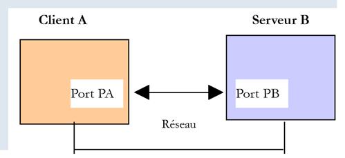

21. وظائف الإنترنت
نتناول الآن وظائف الإنترنت في لغة Python التي تتيح لنا البرمجة باستخدام بروتوكولي TCP / IP (بروتوكول التحكم في النقل / بروتوكول الإنترنت).

21.1. أساسيات البرمجة عبر الإنترنت
21.1.1. مقدمة عامة
لنفترض وجود اتصال بين جهازين بعيدين A و B:

عندما يرغب تطبيق AppA على الجهاز A في التواصل مع تطبيق AppB على الجهاز B عبر الإنترنت، يجب أن يعرف عدة أمور:
- العنوان IP (بروتوكول الإنترنت) أو اسم الجهاز B؛
- رقم المنفذ الذي يعمل عليه التطبيق AppB. ففي الواقع، قد تدعم الجهاز B العديد من التطبيقات التي تعمل عبر الإنترنت. وعندما يتلقى الجهاز B معلومات قادمة من الشبكة، يجب أن يعرف التطبيق الذي تستهدفه هذه المعلومات. تتمكن تطبيقات الجهاز B من الوصول إلى الشبكة عبر منافذ تُعرف أيضًا باسم منافذ الاتصال. وترد هذه المعلومات في الحزمة التي يستقبلها الجهاز B حتى يتم تسليمها إلى التطبيق الصحيح؛
- بروتوكولات الاتصال التي تفهمها الآلة B. في دراستنا، سنستخدم فقط بروتوكولات TCP-IP؛
- بروتوكول الحوار الذي يقبله التطبيق AppB. في الواقع، ستقوم الجهازان A و B بـ«التواصل» مع بعضهما. وسيتم تغليف ما سيقولانه في بروتوكولات TCP-IP. ومع ذلك، عندما يتلقى التطبيق AppB، في نهاية السلسلة، المعلومات المرسلة من التطبيق AppA، يجب أن يكون قادرًا على تفسيرها. وهذا مشابه للحالة التي يتواصل فيها شخصان، أ و ب، عبر الهاتف: حيث يتم نقل حوارهما عبر الهاتف. سيتم ترميز الكلام على شكل إشارات بواسطة الهاتف «أ»، ونقله عبر خطوط الهاتف، ليصل إلى الهاتف «ب» حيث يتم فك ترميزه. عندها يسمع الشخص «ب» الكلمات. وهنا يأتي دور مفهوم بروتوكول الحوار: إذا كان «أ» يتحدث الفرنسية و«ب» لا يفهم هذه اللغة، فلن يتمكن «أ» و«ب» من إجراء حوار مفيد؛
لذلك يجب أن يتفق التطبيقان المتواصلان على نوع الحوار الذي سيتبنيانه. على سبيل المثال، الحوار مع خدمة ftp يختلف عن الحوار مع خدمة pop: هاتان الخدمتان لا تقبلان نفس الأوامر. فكل منهما لديها بروتوكول حوار مختلف؛
21.1.2. خصائص بروتوكول TCP
لن ندرس هنا سوى الاتصالات الشبكية التي تستخدم بروتوكول النقل TCP، وفيما يلي أهم خصائصه:
- تقوم العملية التي ترغب في الإرسال أولاً بإنشاء اتصال مع العملية المستقبلة للمعلومات التي سترسلها. يتم هذا الاتصال بين منفذ في الجهاز المرسل ومنفذ في الجهاز المستقبل. يتم إنشاء مسار افتراضي بين المنفذين، ويكون مخصصاً فقط للعمليتين اللتين قامتا بإجراء الاتصال؛
- تتبع جميع الحزم التي ترسلها العملية المصدرية هذا المسار الافتراضي وتصل بالترتيب الذي أُرسلت به؛
- تتميز المعلومات المرسلة بطابعها المستمر. حيث تقوم عملية الإرسال بإرسال المعلومات وفقًا لوتيرتها الخاصة. ولا يتم إرسال هذه المعلومات بالضرورة على الفور: فبروتوكول TCP ينتظر حتى يتوفر لديه ما يكفي منها لإرسالها. ويتم تخزينها في بنية تُسمى المقطع TCP. وبمجرد امتلاء هذا المقطع، سيتم إرساله إلى الطبقة IP حيث سيتم تغليفه في حزمة IP؛
- يتم ترقيم كل مقطع يتم إرساله عبر بروتوكول TCP. يتحقق بروتوكول TCP المستلم من استلام المقاطع بالترتيب الصحيح. ولكل مقطع يتم استلامه بشكل صحيح، يرسل إشعارًا بالاستلام إلى المرسل؛
- وعندما يتلقى المرسل هذا الإقرار، يقوم بإبلاغ العملية المرسلة بذلك. وبذلك يمكن لهذه العملية أن تعرف أن المقطع قد وصل إلى وجهته بنجاح؛
- وإذا لم يتلقَ بروتوكول TCP، الذي أرسل مقطعًا، إشعارًا بالاستلام بعد مرور فترة معينة، فإنه يعيد إرسال المقطع المعني، مما يضمن جودة خدمة توصيل المعلومات؛
- الدائرة الافتراضية المنشأة بين العمليتين المتواصلتين هي full-duplex: وهذا يعني أن المعلومات يمكن أن تنتقل في كلا الاتجاهين. وبالتالي، يمكن لعملية الوجهة إرسال إقرارات الاستلام حتى في الوقت الذي تواصل فيه عملية المصدر إرسال المعلومات. وهذا يسمح، على سبيل المثال، لبروتوكول المصدر TCP بإرسال عدة مقاطع دون انتظار إقرار الاستلام. وإذا أدرك بعد فترة معينة أنه لم يتلقَ إشعارًا بالاستلام لقطعة معينة رقم n، فسيستأنف إرسال القطع من تلك النقطة؛
21.1.3. العلاقة بين العميل والخادم
غالبًا ما تكون الاتصالات عبر الإنترنت غير متماثلة: تبدأ الآلة «أ» اتصالاً لطلب خدمة من الآلة «ب»، حيث تحدد أنها تريد فتح اتصال مع الخدمة SB1 التابعة للآلة «ب». وتقوم الآلة «ب» بقبول الطلب أو رفضه. إذا وافقت، يمكن للجهاز A إرسال طلباته إلى الخدمة SB1. ويجب أن تتوافق هذه الطلبات مع بروتوكول الحوار الذي تفهمه الخدمة SB1. وبذلك ينشأ حوار من نوع «الطلب والاستجابة» بين الجهاز «أ» الذي يُسمى «جهاز العميل» والجهاز «ب» الذي يُسمى «جهاز الخادم». وسيقوم أحد الطرفين بإنهاء الاتصال.
21.1.4. بنية العميل
ستكون بنية برنامج الشبكة الذي يطلب خدمات تطبيق الخادم كما يلي:
21.1.5. بنية الخادم
ستكون بنية البرنامج الذي يقدم الخدمات كما يلي:
يعالج برنامج الخادم طلب الاتصال الأولي للعميل بشكل مختلف عن طلباته اللاحقة للحصول على خدمة. لا يقدم البرنامج الخدمة بنفسه. لو فعل ذلك، فلن يكون قادراً على الاستجابة لطلبات الاتصال طوال مدة تقديم الخدمة، وبالتالي لن يتم تلبية احتياجات العملاء. بل يتصرف بطريقة أخرى: بمجرد استلام طلب اتصال على منفذ الاستماع وقبوله، يقوم الخادم بإنشاء مهمة مكلفة بتقديم الخدمة التي طلبها العميل. يتم تقديم هذه الخدمة على منفذ آخر في جهاز الخادم يُسمى منفذ الخدمة. وبذلك يمكن خدمة عدة عملاء في نفس الوقت.
ستكون مهمة الخدمة بالهيكل التالي:
21.2. اكتشف بروتوكولات الاتصال على الإنترنت
21.2.1. مقدمة
عندما يتصل عميل بخادم، ينشأ حوار بينهما. وتشكل طبيعة هذا الحوار ما يُعرف ببروتوكول اتصال الخادم. ومن بين بروتوكولات الإنترنت الأكثر شيوعًا ما يلي:
- HTTP: بروتوكول نقل HyperText - بروتوكول التواصل مع خادم الويب (خادم HTTP)؛
- SMTP: بروتوكول نقل البريد البسيط (Simple Mail Transfer Protocol) - بروتوكول التواصل مع خادم إرسال البريد الإلكتروني (خادم SMTP)؛
- POP: بروتوكول مكتب البريد (Post Office Protocol) - بروتوكول الاتصال بخادم تخزين البريد الإلكتروني (الخادم POP). ويهدف هذا البروتوكول إلى استرداد رسائل البريد الإلكتروني المستلمة وليس إرسالها؛
- IMAP: بروتوكول الوصول إلى رسائل الإنترنت (Internet Message Access Protocol) - بروتوكول الاتصال بخادم تخزين البريد الإلكتروني (الخادم IMAP). وقد حل هذا البروتوكول تدريجيًا محل البروتوكول الأقدم POP؛
- FTP: بروتوكول نقل الملفات (File Transfer Protocol) — وهو بروتوكول التواصل مع خادم تخزين الملفات (الخادم FTP)؛
تتميز جميع هذه البروتوكولات بكونها بروتوكولات تعتمد على أسطر النص: حيث يتبادل العميل والخادم أسطر النص. إذا كان لدينا عميل قادر على:
- إنشاء اتصال بخادم TCP؛
- عرض الأسطر النصية التي يرسلها الخادم إليه على وحدة التحكم؛
- إرسال الأسطر النصية التي يدخلها المستخدم عبر لوحة المفاتيح إلى الخادم؛
وبالتالي، يمكننا التواصل مع خادم TCP الذي يستخدم بروتوكولًا يعتمد على الأسطر النصية، شريطة أن نكون على دراية بقواعد هذا البروتوكول.
21.2.2. الأدوات المساعدة TCP

في الأكواد المرتبطة بهذا المستند، نجد أداتين مساعدتين للاتصال TCP:
- تتيح الأداة المساعدة [RawTcpClient] الاتصال بالمنفذ P لخادم S؛
- تتيح الأداة المساعدة [RawTcpServer] إنشاء خادم ينتظر العملاء على المنفذ P؛
وهما برنامجان مكتوبان بلغة C#، وقد تم تزويدكم برموزهما المصدرية. لذا يمكنكم تعديلهما.
يُستدعى الخادم TCP [RawTcpServer]يتم استدعاؤه باستخدام الصيغة [RawTcpServeur port] لإنشاء خدمة TCP على المنفذ [port] للجهاز المحلي (الكمبيوتر الذي تعمل عليه):
- يمكن للخادم خدمة عدة عملاء في وقت واحد؛
- يقوم الخادم بتنفيذ الأوامر التي يكتبها المستخدم عبر لوحة المفاتيح. وهذه الأوامر هي التالية:
- list: يسرد العملاء المتصلين حاليًا بالخادم. يتم عرضهم بالصيغة [id=x-nom=y]. يُستخدم الحقل [id] لتعريف العملاء؛
- send x [texte]: يرسل نصًا إلى العميل رقم x (id=x). لا يتم إرسال الأقواس []. وهي ضرورية في الأمر. وتستخدم لتمييز النص المرسل إلى العميل بصريًا؛
- close x: يغلق الاتصال مع العميل رقم x؛
- quit: يغلق جميع الاتصالات ويوقف الخدمة؛
- يتم عرض الأسطر التي يرسلها العميل إلى الخادم على وحدة التحكم؛
- يتم تسجيل جميع التبادلات في ملف نصي يحمل الاسم [machine-port.txt] حيث
- [machine] هو اسم الجهاز الذي يتم تشغيل الكود عليه؛
- [port] هو منفذ الخدمة الذي يستجيب لطلبات العميل؛
يتم استدعاء العميل TCP [RawTcpClient] باستخدام الصيغة [RawTcpClient serveur port] للاتصال بالمنفذ [port] الخاص بالخادم [serveur]:
- يتم إرسال الأسطر التي يكتبها المستخدم على لوحة المفاتيح إلى الخادم؛
- يتم عرض الأسطر المرسلة من الخادم على وحدة التحكم؛
- يتم تسجيل جميع عمليات التبادل في ملف نصي يحمل الاسم [serveur-port.txt]؛
لنلقِ نظرة على مثال. نفتح نافذتي محطة طرفية PyCharm وننتقل في كل منهما إلى مجلد الأدوات المساعدة:

في إحدى النافذتين، نقوم بتشغيل الخادم [RawTcpServer] على المنفذ 100:
(venv) C:\Data\st-2020\dev\python\cours-2020\python3-flask-2020\inet\utilitaires>RawTcpServer.exe 100
server : Serveur générique lancé sur le port 0.0.0.0:100
server : Attente d'un client...
server : Commandes disponibles : [list, send id [texte], close id, quit]
user :
- في السطر 1، نحن موجودون في مجلد الأدوات المساعدة؛
- السطر 1، نقوم بتشغيل الخادم TCP على المنفذ 100؛
- الأسطر 2-4، ينتظر الخادم وصول عميل TCP ويعرض قائمة بالأوامر التي يمكن للمستخدم إدخالها عبر لوحة المفاتيح؛
- السطر 5، ينتظر الخادم أمرًا يكتبه المستخدم عبر لوحة المفاتيح؛
في نافذة الأوامر الأخرى، نقوم بتشغيل العميل TCP:
(venv) C:\Data\st-2020\dev\python\cours-2020\python3-flask-2020\inet\utilitaires>RawTcpClient.exe localhost 100
Client [DESKTOP-30FF5FB:51173] connecté au serveur [localhost-100]
Tapez vos commandes (quit pour arrêter) :
- السطر 1، نحن موجودون في مجلد الأدوات المساعدة؛
- في السطر 1، نقوم بتشغيل العميل TCP: ونطلب منه الاتصال بالمنفذ 100 للجهاز المحلي (الذي يتم عليه تشغيل كود [RawTcpClient])؛
- السطر 2، نجح العميل في الاتصال بالخادم. نحدد إحداثيات العميل: فهو موجود على الجهاز [DESKTOP-30FF5FB] (الجهاز المحلي في هذا المثال) ويستخدم المنفذ [51173] للتواصل مع الخادم:
- السطر 3، ينتظر العميل أمرًا يكتبه المستخدم على لوحة المفاتيح؛
لنعد إلى نافذة الخادم. لقد تغير محتواها:
(venv) C:\Data\st-2020\dev\python\cours-2020\python3-flask-2020\inet\utilitaires>RawTcpServer.exe 100
server : Serveur générique lancé sur le port 0.0.0.0:100
server : Attente d'un client...
server : Commandes disponibles : [list, send id [texte], close id, quit]
user : server : Client 1-DESKTOP-30FF5FB-51173 connecté...
server : Attente d'un client...
- السطر 5، تم اكتشاف عميل. وقد منحه الخادم الرقم 1. وقد تعرف الخادم بشكل صحيح على العميل البعيد (الجهاز والمنفذ)؛
- السطر 6، يعود الخادم إلى حالة الانتظار لعميل جديد؛
لنعد إلى نافذة العميل ونرسل أمرًا إلى الخادم:
(venv) C:\Data\st-2020\dev\python\cours-2020\python3-flask-2020\inet\utilitaires>RawTcpClient.exe localhost 100
Client [DESKTOP-30FF5FB:51173] connecté au serveur [localhost-100]
Tapez vos commandes (quit pour arrêter) :
hello from client
- السطر 4، الأمر المرسل إلى الخادم؛
لنعد إلى نافذة الخادم. لقد تغير محتواها:
(venv) C:\Data\st-2020\dev\python\cours-2020\python3-flask-2020\inet\utilitaires>RawTcpServer.exe 100
server : Serveur générique lancé sur le port 0.0.0.0:100
server : Attente d'un client...
server : Commandes disponibles : [list, send id [texte], close id, quit]
user : server : Client 1-DESKTOP-30FF5FB-51173 connecté...
server : Attente d'un client...
client 1 : [hello from client]
- السطر 7، بين الأقواس، الرسالة التي استقبلها الخادم؛
لنرسل ردًا إلى العميل:
(venv) C:\Data\st-2020\dev\python\cours-2020\python3-flask-2020\inet\utilitaires>RawTcpServer.exe 100
server : Serveur générique lancé sur le port 0.0.0.0:100
server : Attente d'un client...
server : Commandes disponibles : [list, send id [texte], close id, quit]
user : server : Client 1-DESKTOP-30FF5FB-51173 connecté...
server : Attente d'un client...
client 1 : [hello from client]
send 1 [hello from server]
user :
- السطر 8، الرد المرسل إلى العميل 1. يتم إرسال النص الموجود بين الأقواس فقط، وليس الأقواس نفسها؛
لنعد إلى نافذة العميل:
(venv) C:\Data\st-2020\dev\python\cours-2020\python3-flask-2020\inet\utilitaires>RawTcpClient.exe localhost 100
Client [DESKTOP-30FF5FB:51173] connecté au serveur [localhost-100]
Tapez vos commandes (quit pour arrêter) :
hello from client
<-- [hello from server]
- السطر 5، الرد الذي تلقّاه العميل. النص الذي تم تلقيه هو النص الموجود بين الأقواس؛
لنعد إلى نافذة الخادم لنرى أوامر أخرى:
(venv) C:\Data\st-2020\dev\python\cours-2020\python3-flask-2020\inet\utilitaires>RawTcpServer.exe 100
server : Serveur générique lancé sur le port 0.0.0.0:100
server : Attente d'un client...
server : Commandes disponibles : [list, send id [texte], close id, quit]
user : server : Client 1-DESKTOP-30FF5FB-51173 connecté...
server : Attente d'un client...
client 1 : [hello from client]
send 1 [hello from server]
user : list
server : id=1-name=DESKTOP-30FF5FB-51173
user : close 1
server : Connexion client 1 fermée...
user : quit
server : fin du service
- السطر 9، نطلب قائمة العملاء؛
- السطر 10، الرد؛
- السطر 11، نغلق الاتصال مع العميل رقم 1؛
- السطر 12، تأكيد من الخادم؛
- السطر 13، نقوم بإيقاف تشغيل الخادم؛
- السطر 14، تأكيد الخادم؛
لنعد إلى نافذة العميل:
(venv) C:\Data\st-2020\dev\python\cours-2020\python3-flask-2020\inet\utilitaires>RawTcpClient.exe localhost 100
Client [DESKTOP-30FF5FB:51173] connecté au serveur [localhost-100]
Tapez vos commandes (quit pour arrêter) :
hello from client
<-- [hello from server]
Perte de la connexion avec le serveur...
- السطر 6، اكتشف العميل انتهاء الخدمة؛
تم إنشاء ملفين للسجلات، أحدهما للخادم والآخر للعميل:

- في ملف [1]، سجلات الخادم: اسم الملف هو اسم العميل بالصيغة [machine-port]. وهذا يتيح الحصول على ملفات سجلات مختلفة لعملاء مختلفين؛
- في ملف [2]، سجلات العميل: اسم الملف هو اسم الخادم بالصيغة [machine-port]؛
سجلات الخادم هي كما يلي:
<-- [hello from client]
--> [hello from server]
سجلات العميل هي كما يلي:
--> [hello from client]
<-- [hello from server]
21.3. الحصول على اسم أو عنوان جهاز على الإنترنت IP

يتم تعريف أجهزة الإنترنت بواسطة عنوان IP (IPv4 أو IPv6) وغالبًا ما يتم تعريفها بواسطة اسم. ولكن في النهاية، لا يستخدم بروتوكولات الاتصال عبر الإنترنت سوى العنوان IP. لذا، يجب معرفة العنوان IP لجهاز تم تعريفه باسمه.
النص البرمجي [ip-01.py] هو كما يلي:
# عمليات الاستيراد
import socket
# ------------------------------------------------
def get_ip_and_name(nom_machine: str):
# nom_machine: اسم الجهاز الذي نريد الحصول على عنوانه IP
try:
# nom_machine-->العنوان IP
ip = socket.gethostbyname(nom_machine)
print(f"ip[{nom_machine}]={ip}")
except socket.error as erreur:
# يتم عرض رسالة الخطأ
print(f"ip[{nom_machine}]={erreur}")
return
try:
# العنوان IP --> nom_machine
names = socket.gethostbyaddr(ip)
print(f"names[{ip}]={names}")
except socket.error as erreur:
# يتم عرض الخطأ
print(f"names[{ip}]={erreur}")
return
# ---------------------------------------- main
# أجهزة الإنترنت
hosts = ["istia.univ-angers.fr", "www.univ-angers.fr", "sergetahe.com", "localhost", "xx"]
# عناوين IP لأجهزة HOTES
for host in hosts:
print("-------------------------------------")
get_ip_and_name(host)
# النهاية
print("Terminé...")
تعليقات
- السطر 2: توفر الوحدة النمطية [socket] الوظائف اللازمة لإدارة مآخذ الإنترنت. [socket] تعني مقبس كهربائي، مقبس شبكة؛
- السطر 6: تتيح الوظيفة [get_ip_and_name] الحصول على ما يلي من خلال الاسم الإنترنتي لجهاز ما:
- عنوان الجهاز IP؛
- اسم الجهاز المستمد من العنوان IP السابق؛
- السطر 10: تتيح الدالة [socket.gethostbyname] الحصول على عنوان IP لجهاز ما انطلاقًا من أحد هذه الأسماء (قد يكون لجهاز الإنترنت اسم رئيسي وأسماء مستعارة)؛
- السطر 12: تُطلق الدوال المتعلقة بالمآخذ (sockets) الاستثناء [socket.error] فور حدوث أي خطأ؛
- السطر 19: تتيح الدالة [socket.gethostbyaddr] الحصول على اسم جهاز ما من عنوانه IP. سنرى أنه يمكن الحصول على اسم مختلف عن الاسم الذي تم تمريره في السطر 6؛
- السطر 30: قائمة بأسماء الأجهزة. الاسم الأخير خاطئ. يشير الاسم [localhost] إلى الجهاز الذي تعمل عليه والذي يقوم بتنفيذ البرنامج النصي؛
- السطور 33-35: يتم عرض IP لهذه الأجهزة؛
النتائج:
C:\Data\st-2020\dev\python\cours-2020\python3-flask-2020\venv\Scripts\python.exe C:/Data/st-2020/dev/python/cours-2020/python3-flask-2020/inet/ip/ip_01.py
-------------------------------------
ip[istia.univ-angers.fr]=193.49.144.41
names[193.49.144.41]=('ametys-fo-2.univ-angers.fr', [], ['193.49.144.41'])
-------------------------------------
ip[www.univ-angers.fr]=193.49.144.41
names[193.49.144.41]=('ametys-fo-2.univ-angers.fr', [], ['193.49.144.41'])
-------------------------------------
ip[sergetahe.com]=87.98.154.146
names[87.98.154.146]=('cluster026.hosting.ovh.net', [], ['87.98.154.146'])
-------------------------------------
ip[localhost]=127.0.0.1
names[127.0.0.1]=('DESKTOP-30FF5FB', [], ['127.0.0.1'])
-------------------------------------
ip[xx]=[Errno 11001] getaddrinfo failed
Terminé...
Process finished with exit code 0
21.4. بروتوكول HTTP (بروتوكول النقل HyperText)
21.4.1. المثال 1

عندما يعرض متصفح ما ملف URL، فإنه يكون عميلاً لخادم ويب أو، بعبارة أخرى، لخادم HTTP. وهو الذي يأخذ زمام المبادرة ويبدأ بإرسال عدد معين من الأوامر إلى الخادم. في هذا المثال الأول:
- سيكون الخادم هو الأداة المساعدة [RawTcpServer]؛
- سيكون العميل متصفحًا؛
نقوم أولاً بتشغيل الخادم على المنفذ 100:
(venv) C:\Data\st-2020\dev\python\cours-2020\python3-flask-2020\inet\utilitaires>RawTcpServer.exe 100
server : Serveur générique lancé sur le port 0.0.0.0:100
server : Attente d'un client...
server : Commandes disponibles : [list, send id [texte], close id, quit]
user :
ثم نطلب، باستخدام متصفح، URL و[http://localhost:100]، أي أننا نقول إن الخادم HTTP الذي تم الاستعلام عنه يعمل على المنفذ 100 للجهاز المحلي:

لنعد إلى نافذة الخادم:
(venv) C:\Data\st-2020\dev\python\cours-2020\python3-flask-2020\inet\utilitaires>RawTcpServer.exe 100
server : Serveur générique lancé sur le port 0.0.0.0:100
server : Attente d'un client...
server : Commandes disponibles : [list, send id [texte], close id, quit]
user : server : Client 1-DESKTOP-30FF5FB-51438 connecté...
server : Attente d'un client...
server : Client 2-DESKTOP-30FF5FB-51439 connecté...
server : Attente d'un client...
client 1 : [GET / HTTP/1.1]
client 1 : [Host: localhost:100]
client 1 : [Connection: keep-alive]
client 1 : [DNT: 1]
client 1 : [Upgrade-Insecure-Requests: 1]
client 1 : [User-Agent: Mozilla/5.0 (Windows NT 10.0; Win64; x64) AppleWebKit/537.36 (KHTML, like Gecko) Chrome/83.0.4103.116 Safari/537.36]
client 1 : [Accept: text/html,application/xhtml+xml,application/xml;q=0.9,image/webp,image/apng,*/*;q=0.8,application/signed-exchange;v=b3;q=0.9]
client 1 : [Sec-Fetch-Site: none]
client 1 : [Sec-Fetch-Mode: navigate]
client 1 : [Sec-Fetch-User: ?1]
client 1 : [Sec-Fetch-Dest: document]
client 1 : [Accept-Encoding: gzip, deflate, br]
client 1 : [Accept-Language: fr-FR,fr;q=0.9,en-US;q=0.8,en;q=0.7]
client 1 : []
server : Client 3-DESKTOP-30FF5FB-51441 connecté...
server : Attente d'un client...
- السطر 5، العميل الذي قام بالاتصال؛
- الأسطر 9-22: سلسلة الأسطر النصية التي أرسلها:
- السطر 9: هذا السطر بتنسيق [GET URL HTTP/1.1]. وهو يطلب URL / ويطلب من الخادم استخدام بروتوكول HTTP 1.1؛
- السطر 10: هذا السطر له التنسيق [Host: serveur:port]. لا يهم استخدام الأحرف الكبيرة أو الصغيرة في الأمر [Host]. ونذكر هنا أن العميل يستعلم عن خادم محلي يعمل على المنفذ 100؛
- السطر 14: يحدد الأمر [User-Agent] هوية العميل؛
- السطر 15: يحدد الأمر [Accept] أنواع المستندات التي يقبلها العميل؛
- السطر 21: يشير الأمر [Accept-Language] إلى اللغة المطلوبة للمستندات المطلوبة في حال توفرها بعدة لغات؛
- السطر 11: الأمر [Connection] يحدد طريقة الاتصال المطلوبة: [keep-alive] يشير إلى أنه يجب الحفاظ على الاتصال حتى انتهاء عملية التبادل؛
- السطر 22: ينهي العميل أوامره بسطر فارغ؛
ننهي الاتصال بإيقاف تشغيل الخادم:
client 1 : []
server : Client 3-DESKTOP-30FF5FB-51441 connecté...
server : Attente d'un client...
quit
server : fin du service
21.4.2. المثال 2
الآن بعد أن أصبحنا على دراية بالأوامر التي يرسلها المتصفح لطلب URL، سنقوم بطلب هذا URL باستخدام عميلنا TCP [RawTcpClient]. سيكون خادم Apache الخاص بـ Laragon (الفقرة |تثبيت Laragon|) هو خادم الويب الخاص بنا.
لنقم بتشغيل Laragon ثم خادم الويب Apache:


الآن، باستخدام متصفح، دعونا نطلب الصفحة URL [http://localhost:80]. هنا نحدد فقط الخادم [localhost:80] دون تحديد أي مستند URL. في هذه الحالة، يتم طلب URL /، أي جذر خادم الويب:

- إلى [1]، وهو URL المطلوب. كنا قد أدخلنا في البداية [http://localhost:80]، وقام المتصفح (Firefox في هذه الحالة) قام بتحويلها ببساطة إلى [localhost] لأن البروتوكول [http] يُعتبر ضمنيًا عند عدم ذكر أي بروتوكول، والمنفذ [80] يُعتبر ضمنيًا عند عدم تحديد المنفذ؛
- في [2]، الصفحة الجذرية / لخادم الويب الذي تم الاستعلام عنه؛
الآن، دعونا نعرض النص الذي استلمه المتصفح:

- نضغط بزر الفأرة الأيمن على الصفحة المستلمة ونختار الخيار [2]. نحصل على شفرة المصدر التالية:
<!DOCTYPE html>
<html>
<head>
<title>Laragon</title>
<link href="https://fonts.googleapis.com/css?family=Karla:400" rel="stylesheet" type="text/css">
<style>
html, body {
height: 100%;
}
body {
margin: 0;
padding: 0;
width: 100%;
display: table;
font-weight: 100;
font-family: 'Karla';
}
.container {
text-align: center;
display: table-cell;
vertical-align: middle;
}
.content {
text-align: center;
display: inline-block;
}
.title {
font-size: 96px;
}
.opt {
margin-top: 30px;
}
.opt a {
text-decoration: none;
font-size: 150%;
}
a:hover {
color: red;
}
</style>
</head>
<body>
<div class="container">
<div class="content">
<div class="title" title="Laragon">Laragon</div>
<div class="info">
<br />
Apache/2.4.35 (Win64) OpenSSL/1.1.1b PHP/7.2.19<br />
PHP version: 7.2.19 <span><a title="phpinfo()" href="/?q=info">info</a></span><br />
Document Root: C:/MyPrograms/laragon/www<br />
</div>
<div class="opt">
<div><a title="Getting Started" href="https://laragon.org/docs">Getting Started</a></div>
</div>
</div>
</div>
</body>
</html>
الآن، لنطلب URL [http://localhost:80] باستخدام عميلنا TCP:
(venv) C:\Data\st-2020\dev\python\cours-2020\python3-flask-2020\inet\utilitaires>RawTcpClient.exe localhost 80
Client [DESKTOP-30FF5FB:51541] connecté au serveur [localhost-80]
Tapez vos commandes (quit pour arrêter) :
- في السطر 1، نتصل بالمنفذ 80 لخادم localhost. وهنا يعمل خادم الويب الخاص بـ Laragon؛
نقوم الآن بكتابة الأوامر التي اكتشفناها في الفقرة السابقة:
(venv) C:\Data\st-2020\dev\python\cours-2020\python3-flask-2020\inet\utilitaires>RawTcpClient.exe localhost 80
Client [DESKTOP-30FF5FB:51544] connecté au serveur [localhost-80]
Tapez vos commandes (quit pour arrêter) :
GET / HTTP/1.1
Host: localhost:80
<-- [HTTP/1.1 200 OK]
<-- [Date: Sun, 05 Jul 2020 12:42:14 GMT]
<-- [Server: Apache/2.4.35 (Win64) OpenSSL/1.1.1b PHP/7.2.19]
<-- [X-Powered-By: PHP/7.2.19]
<-- [Content-Length: 1776]
<-- [Content-Type: text/html; charset=UTF-8]
<-- []
<-- [<!DOCTYPE html>]
<-- [<html>]
<-- [ <head>]
<-- [ <title>Laragon</title>]
<-- []
<-- [ <link href="https://fonts.googleapis.com/css?family=Karla:400" rel="stylesheet" type="text/css">]
<-- []
<-- [ <style>]
<-- [ html, body {]
<-- [ height: 100%;]
<-- [ }]
<-- []
<-- [ body {]
<-- [ margin: 0;]
<-- [ padding: 0;]
<-- [ width: 100%;]
<-- [ display: table;]
<-- [ font-weight: 100;]
<-- [ font-family: 'Karla';]
<-- [ }]
<-- []
<-- [ .container {]
<-- [ text-align: center;]
<-- [ display: table-cell;]
<-- [ vertical-align: middle;]
<-- [ }]
<-- []
<-- [ .content {]
<-- [ text-align: center;]
<-- [ display: inline-block;]
<-- [ }]
<-- []
<-- [ .title {]
<-- [ font-size: 96px;]
<-- [ }]
<-- []
<-- [ .opt {]
<-- [ margin-top: 30px;]
<-- [ }]
<-- []
<-- [ .opt a {]
<-- [ text-decoration: none;]
<-- [ font-size: 150%;]
<-- [ }]
<-- [ ]
<-- [ a:hover {]
<-- [ color: red;]
<-- [ }]
<-- [ </style>]
<-- [ </head>]
<-- [ <body>]
<-- [ <div class="container">]
<-- [ <div class="content">]
<-- [ <div class="title" title="Laragon">Laragon</div>]
<-- [ ]
<-- [ <div class="info"><br />]
<-- [ Apache/2.4.35 (Win64) OpenSSL/1.1.1b PHP/7.2.19<br />]
<-- [ PHP version: 7.2.19 <span><a title="phpinfo()" href="/?q=info">info</a></span><br />]
<-- [ Document Root: C:/MyPrograms/laragon/www<br />]
<-- []
<-- [ </div>]
<-- [ <div class="opt">]
<-- [ <div><a title="Getting Started" href="https://laragon.org/docs">Getting Started</a></div>]
<-- [ </div>]
<-- [ </div>]
<-- []
<-- [ </div>]
<-- [ </body>]
<-- [</html>]
Perte de la connexion avec le serveur...
- السطر 4، الأمر [GET]. نطلب الوصول إلى الجذر / لخادم الويب؛
- السطر 5، الأمر [Host]؛
- هذان هما الأمران الوحيدان الضروريان. أما بالنسبة للأوامر الأخرى، فسيستخدم خادم الويب القيم الافتراضية؛
- السطر 6، السطر الفارغ الذي يجب أن ينهي أوامر العميل؛
- أسفل السطر 6، تأتي استجابة خادم الويب؛
- الأسطر 7-12: رؤوس HTTP الخاصة برد الخادم؛
- السطر 13: السطر الفارغ الذي يشير إلى نهاية رؤوس http؛
- الأسطر 14-82: المستند HTML المطلوب في السطر 4؛
نقوم بتحميل ملف السجلات [localhost-80.txt]:

--> [GET / HTTP/1.1]
--> [Host: localhost:80]
--> []
<-- [HTTP/1.1 200 OK]
<-- [Date: Sun, 05 Jul 2020 12:42:14 GMT]
<-- [Server: Apache/2.4.35 (Win64) OpenSSL/1.1.1b PHP/7.2.19]
<-- [X-Powered-By: PHP/7.2.19]
<-- [Content-Length: 1776]
<-- [Content-Type: text/html; charset=UTF-8]
<-- []
<-- [<!DOCTYPE html>]
<-- [<html>]
<-- [ <head>]
<-- [ <title>Laragon</title>]
<-- []
<-- [ <link href="https://fonts.googleapis.com/css?family=Karla:400" rel="stylesheet" type="text/css">]
<-- []
<-- [ <style>]
<-- [ html, body {]
<-- [ height: 100%;]
<-- [ }]
<-- []
<-- [ body {]
<-- [ margin: 0;]
<-- [ padding: 0;]
<-- [ width: 100%;]
<-- [ display: table;]
<-- [ font-weight: 100;]
<-- [ font-family: 'Karla';]
<-- [ }]
<-- []
<-- [ .container {]
<-- [ text-align: center;]
<-- [ display: table-cell;]
<-- [ vertical-align: middle;]
<-- [ }]
<-- []
<-- [ .content {]
<-- [ text-align: center;]
<-- [ display: inline-block;]
<-- [ }]
<-- []
<-- [ .title {]
<-- [ font-size: 96px;]
<-- [ }]
<-- []
<-- [ .opt {]
<-- [ margin-top: 30px;]
<-- [ }]
<-- []
<-- [ .opt a {]
<-- [ text-decoration: none;]
<-- [ font-size: 150%;]
<-- [ }]
<-- [ ]
<-- [ a:hover {]
<-- [ color: red;]
<-- [ }]
<-- [ </style>]
<-- [ </head>]
<-- [ <body>]
<-- [ <div class="container">]
<-- [ <div class="content">]
<-- [ <div class="title" title="Laragon">Laragon</div>]
<-- [ ]
<-- [ <div class="info"><br />]
<-- [ Apache/2.4.35 (Win64) OpenSSL/1.1.1b PHP/7.2.19<br />]
<-- [ PHP version: 7.2.19 <span><a title="phpinfo()" href="/?q=info">info</a></span><br />]
<-- [ Document Root: C:/MyPrograms/laragon/www<br />]
<-- []
<-- [ </div>]
<-- [ <div class="opt">]
<-- [ <div><a title="Getting Started" href="https://laragon.org/docs">Getting Started</a></div>]
<-- [ </div>]
<-- [ </div>]
<-- []
<-- [ </div>]
<-- [ </body>]
<-- [</html>]
- الأسطر 11-79: تم استلام المستند HTML. في المثال السابق، كان Firefox قد استلم نفس المستند؛
لدينا الآن الأساس اللازم لبرمجة عميل TCP الذي سيطلب ملف URL.
21.4.3. المثال 3

البرنامج النصي [http/01/main.py] هو عميل HTTP تم تكوينه بواسطة الملف [config.py]. ومحتوى هذا الملف هو كما يلي:
def configure():
# URLs المطلوب الاستعلام عنه
urls = [
# الموقع: اسم الموقع المراد الاتصال به
# المنفذ: منفذ خدمة الويب
# GET: URL المطلوب
# رؤوس: رؤوس HTTP المطلوب إرسالها في الطلب
# endOfLine: علامة نهاية السطر في الرؤوس HTTP المرسلة
# encoding: ترميز استجابة الخادم
# timeout: الحد الأقصى لوقت انتظار استجابة الخادم
{
"site": "localhost",
"port": 80,
"GET": "/",
"headers": {
"Host": "localhost:80",
"User-Agent": "client Python",
"Accept": "text/HTML",
"Accept-Language": "fr"
},
"endOfLine": "\r\n",
"encoding": "utf-8",
"timeout": 0.5
},
{
"site": "sergetahe.com",
"port": 80,
"GET": "/",
"headers": {
"Host": "sergetahe.com:80",
"User-Agent": "client Python",
"Accept": "text/HTML",
"Accept-Language": "fr"
},
"endOfLine": "\r\n",
"encoding": "utf-8",
"timeout": 5
},
{
"site": "tahe.developpez.com",
"port": 443,
"GET": "/",
"headers": {
"Host": "tahe.developpez.com:443",
"User-Agent": "client Python",
"Accept": "text/HTML",
"Accept-Language": "fr"
},
"endOfLine": "\r\n",
"encoding": "utf-8",
"timeout": 2
},
{
"site": "www.sergetahe.com",
"port": 80,
"GET": "/cours-tutoriels-de-programmation/",
"headers": {
"Host": "sergetahe.com:80",
"User-Agent": "client Python",
"Accept": "text/HTML",
"Accept-Language": "fr"
},
"endOfLine": "\r\n",
"encoding": "utf-8",
"timeout": 5
}
]
# يتم إعادة التكوين
return {
"urls": urls
}
- محتوى الملف عبارة عن قائمة من URL، حيث يمثل كل عنصر في القائمة قاموسًا. يوضح هذا القاموس كيفية الاتصال بالموقع المشار إليه بالمفتاح [site]؛
- الأسطر 4-10: معنى مفاتيح كل قاموس؛
النص البرمجي [http/01/main.py] هو كما يلي:
# عمليات الاستيراد
import codecs
import socket
# -----------------------------------------------------------------------
def get_url(url: dict, suivi: bool = True):
# يقرأ عنوان urlURL الخاص بالموقع url["GET"] ويخزنه في الملف url[site].html
# يتم التفاعل بين العميل والخادم وفقًا لبروتوكول HTTP المحدد في القاموس [url]
# يتم السماح بترحيل الاستثناءات
sock = None
html = None
try:
# الاتصال بـ [site] على المنفذ 80 مع مهلة انتظار
site = url['site']
sock = socket.create_connection((site, int(url['port'])), float(url['timeout']))
# يمثل الاتصال تدفقًا ثنائي الاتجاه للاتصالات
# بين العميل (هذا البرنامج) وخادم الويب الذي تم الاتصال به
# تُستخدم هذه القناة لتبادل الأوامر والمعلومات
# بروتوكول الاتصال هو HTTP
# إنشاء الملف site.html - يتم استبدال الأحرف غير المرغوب فيها باسم الملف
site2 = site.replace("/", "_")
site2 = site2.replace(".", "_")
html_filename = f'{site2}.html'
html = codecs.open(f"output/{html_filename}", "w", "utf-8")
# سيبدأ العميل الحوار HTTP مع الخادم
if suivi:
print(f"Client : début de la communication avec le serveur [{site}]")
# حسب الخوادم، يجب أن تنتهي أسطر العميل بـ \n أو \r\n
end_of_line = url["endOfLine"]
# يرسل العميل الأمر GET لطلب التكوين URL ["GET"]
# صيغة GET URL HTTP/1.1
commande = f"GET {url['GET']} HTTP/1.1{end_of_line}"
# متابعة؟
if suivi:
print(f"--> {commande}", end='')
# يتم إرسال الأمر إلى الخادم
sock.send(bytearray(commande, 'utf-8'))
# إرسال الرؤوس HTTP
for verb, value in url['headers'].items():
# يتم إنشاء الأمر المراد إرساله
commande = f"{verb}: {value}{end_of_line}"
# متابعة؟
if suivi:
print(f"--> {commande}", end='')
# يتم إرسال الأمر إلى الخادم
sock.send(bytearray(commande, 'utf-8'))
# إرسال الرأس HTTP [Connection: close] لطلب من خادم الويب
# بإغلاق الاتصال بمجرد إرساله المستند المطلوب
sock.send(bytearray(f"Connection: close{end_of_line}", 'utf-8'))
# يجب أن تنتهي رؤوس (headers) بروتوكول HTTP بسطر فارغ
sock.send(bytearray(end_of_line, 'utf-8'))
#
# سيقوم الخادم الآن بالرد عبر قناة sock. سيقوم بإرسال جميع
# بياناته ثم يغلق القناة. وبالتالي، يقرأ العميل كل ما يصل من sock
# حتى إغلاق القناة
#
# يتم أولًا قراءة الرؤوس HTTP المرسلة من الخادم
# وهي تنتهي هي الأخرى بسطر فارغ
if suivi:
print(f"Réponse du serveur [{site}]")
# قراءة المأخذ كما لو كان ملفًا نصيًّا
encoding = f"{url['encoding']}" if url['encoding'] else None
if encoding:
file = sock.makefile(encoding=encoding)
else:
file = sock.makefile()
# نقوم بمعالجة هذا الملف سطراً سطراً
fini = False
while not fini:
# قراءة السطر الحالي
ligne = file.readline().strip()
# هل لدينا سطر غير فارغ؟
if ligne:
if suivi:
# عرض الرأس HTTP
print(f"<-- {ligne}")
else:
# كان هذا السطر فارغًا - انتهت الرؤوس HTTP
fini = True
# يتم قراءة المستند HTML الذي سيأتي بعد السطر الفارغ
# قراءة السطر الحالي
ligne = file.readline()
while ligne:
# التسجيل في ملف السجلات
html.write(str(ligne))
# السطر التالي
ligne = file.readline()
# تنتهي الحلقة عندما يغلق الخادم الاتصال
finally:
# يقوم العميل بإغلاق الاتصال
if sock:
sock.close()
# إغلاق ملف html
if html:
html.close()
# -------------------main
# يتم تكوين التطبيق
import config
config = config.configure()
# الحصول على URL من ملف التكوين
for url in config['urls']:
print("-------------------------")
print(url['site'])
print("-------------------------")
try:
# قراءة URL من الموقع [site]
get_url(url)
except BaseException as erreur:
print(f"L'erreur suivante s'est produite : {erreur}")
finally:
pass
# النهاية
print("Terminé...")
تعليقات على الكود:
- السطور 108-109: يتم استرداد القاموس [config] الخاص بالوحدة النمطية [config.py]؛
- السطر 111-122: يتم استخدام هذا القاموس؛
- السطر 118، 7: تطلب الدالة [get_url(url)] مستندًا من موقع الويب url[site] وتخزنه في الملف النصي url[site].HTML. بشكل افتراضي، يتم تسجيل التبادلات بين العميل والخادم في وحدة التحكم (suivi=True)؛
- ويتم تنفيذ كل ذلك في ملف [try / finally] (الأسطر 14-96). لا توجد جملة [except]. ستُرفع الاستثناءات إلى الكود المستدعي، وهو الذي يقوم بإيقافها وعرضها (الأسطر 119-120)؛
- السطران 16-17: فتح اتصال بالخادم الويب. تقبل الدالة [socket.create_connection] ثلاثة معلمات:
- [param1]: هو اسم جهاز الإنترنت الذي نريد الوصول إليه؛
- [param2]: هو رقم منفذ الخدمة التي نريد الاتصال بها؛
- [param3]: تُرجع الدالة [socket.create_connection] مأخذ توصيل (socket)، بينما تُحدد الدالة [param3] — إن وجدت — مهلة انتظار مأخذ التوصيل الذي تم إنشاؤه. مهلة الانتظار هي المدة القصوى التي ينتظرها مأخذ التوصيل للحصول على استجابة من الجهاز البعيد؛
- السطران 27-28: إنشاء الملف [site.html] الذي سيتم تخزين المستند HTML المستلم فيه؛
- الأسطر 34-43: يجب أن يكون الأمر الأول للعميل هو الأمر [GET URL HTTP/1.1]؛
- السطر 43: تتيح الدالة [sock.send] للعميل إرسال البيانات إلى الخادم. هنا، السطر النصي المرسل له المعنى التالي: «أريد (GET) الصفحة [URL] من موقع الويب الذي أنا متصل به. أنا أعمل باستخدام بروتوكول HTTP الإصدار 1.1"؛
- السطر 43: ترسل التعليمات [sock.send(bytearray(commande, 'utf-8'))] مصفوفة من البايتات (bytearray). يتم الحصول على هذه المصفوفة عن طريق تحويل السلسلة [commande] إلى تسلسل من البايتات المشفرة بـ UTF-8؛
- الأسطر 44-52: يتم إرسال الأسطر الأخرى من البروتوكول HTTP [Host, User-Agent, Accept, Accept-Language…]. ولا يهم ترتيبها؛
- الأسطر 53-55: يتم إرسال الرأس HTTP [Connection: close] لطلب من الخادم إغلاق اتصاله بمجرد إرساله المستند المطلوب. بشكل افتراضي، لا يقوم الخادم بذلك. لذلك يجب أن نطلب منه ذلك صراحةً. الفائدة من ذلك هي أن هذا الإغلاق سيتم اكتشافه من جانب العميل، وبهذه الطريقة سيعرف العميل أنه قد تلقى المستند المطلوب بالكامل؛
- السطران 56-57: يتم إرسال سطر فارغ إلى الخادم للإشارة إلى أن العميل قد انتهى من إرسال رؤوسه HTTP وأنه ينتظر الآن المستند المطلوب؛
- الأسطر 68-86: سيقوم الخادم أولاً بإرسال سلسلة من الرؤوس HTTP التي ستقدم معلومات متنوعة عن المستند المطلوب. تنتهي هذه الرؤوس بسطر فارغ؛
- الأسطر 69-73: لقراءة استجابة الخادم سطراً سطراً، تُستخدم الطريقة [sock.makefile(encoding=encoding)]. ويحدد المعامل الاختياري [encoding] ترميز النص المتوقع. بعد هذه العملية، يمكن قراءة تدفق الأسطر المرسلة من الخادم كملف نصي عادي؛
- السطر 78: نقوم بقراءة سطر أرسله الخادم باستخدام الطريقة [readline]. ونزيل منه المسافات (الفراغات وعلامة نهاية السطر) في بداية السطر ونهايته؛
- الأسطر 81-83: إذا لم يكن السطر فارغًا وتم طلب المتابعة، يتم عرض السطر المستلم على وحدة التحكم؛
- الأسطر 84-86: إذا تم استرداد السطر الفارغ الذي يشير إلى نهاية الرؤوس HTTP المرسلة من الخادم، يتم إيقاف حلقة السطر 76؛
- الأسطر 90-95: يمكن قراءة أسطر النص الواردة في استجابة الخادم سطراً سطراً باستخدام حلقة while وتسجيلها في الملف النصي [html]. وعندما يرسل خادم الويب الصفحة المطلوبة بالكامل، فإنه يغلق اتصاله مع العميل. من جانب العميل، سيتم اكتشاف ذلك على أنه نهاية الملف وسيتم الخروج من الحلقة في الأسطر 90-95؛
- الأسطر 96-102: سواء حدث خطأ أم لا، يتم تحرير جميع الموارد التي استخدمها الكود؛
النتائج:
تعرض وحدة التحكم السجلات التالية:
C:\Data\st-2020\dev\python\cours-2020\python3-flask-2020\venv\Scripts\python.exe C:/Data/st-2020/dev/python/cours-2020/python3-flask-2020/inet/http/01/main.py
-------------------------
localhost
-------------------------
Client : début de la communication avec le serveur [localhost]
--> GET / HTTP/1.1
--> Host: localhost:80
--> User-Agent: client Python
--> Accept: text/HTML
--> Accept-Language: fr
Réponse du serveur [localhost]
<-- HTTP/1.1 200 OK
<-- Date: Sun, 05 Jul 2020 16:27:46 GMT
<-- Server: Apache/2.4.35 (Win64) OpenSSL/1.1.1b PHP/7.2.19
<-- X-Powered-By: PHP/7.2.19
<-- Content-Length: 1776
<-- Connection: close
<-- Content-Type: text/html; charset=UTF-8
-------------------------
sergetahe.com
-------------------------
Client : début de la communication avec le serveur [sergetahe.com]
--> GET / HTTP/1.1
--> Host: sergetahe.com:80
--> User-Agent: client Python
--> Accept: text/HTML
--> Accept-Language: fr
Réponse du serveur [sergetahe.com]
<-- HTTP/1.1 302 Found
<-- Date: Sun, 05 Jul 2020 16:27:45 GMT
<-- Content-Type: text/html; charset=UTF-8
<-- Transfer-Encoding: chunked
<-- Connection: close
<-- Server: Apache
<-- X-Powered-By: PHP/7.3
<-- Location: http://sergetahe.com:80/دورات-تعليمية-في-البرمجة
<-- Set-Cookie: SERVERID68971=2620178|XwH/h|XwH/h; path=/
<-- X-IPLB-Instance: 17106
-------------------------
tahe.developpez.com
-------------------------
Client : début de la communication avec le serveur [tahe.developpez.com]
--> GET / HTTP/1.1
--> Host: tahe.developpez.com:443
--> User-Agent: client Python
--> Accept: text/HTML
--> Accept-Language: fr
Réponse du serveur [tahe.developpez.com]
<-- HTTP/1.1 400 Bad Request
<-- Date: Sun, 05 Jul 2020 16:27:45 GMT
<-- Server: Apache/2.4.38 (Debian)
<-- Content-Length: 453
<-- Connection: close
<-- Content-Type: text/html; charset=iso-8859-1
-------------------------
www.sergetahe.com
-------------------------
Client : début de la communication avec le serveur [www.sergetahe.com]
--> GET /cours-tutoriels-de-programmation/ HTTP/1.1
--> Host: sergetahe.com:80
--> User-Agent: client Python
--> Accept: text/HTML
--> Accept-Language: fr
Réponse du serveur [www.sergetahe.com]
<-- HTTP/1.1 301 Moved Permanently
<-- Date: Sun, 05 Jul 2020 16:27:45 GMT
<-- Content-Type: text/html; charset=iso-8859-1
<-- Content-Length: 263
<-- Connection: close
<-- Server: Apache
<-- Location: https://sergetahe.com/دورات-ودروس-البرمجة/
<-- Set-Cookie: SERVERID68971=2620178|XwH/h|XwH/h; path=/
<-- X-IPLB-Instance: 17095
Terminé...
Process finished with exit code 0
تعليقات
- السطر 12: تم العثور على URL [http://localhost/] (الرمز 200)؛
- السطر 29: لم يتم العثور على URL [http://sergetahe.com/] (الرمز 302). يشير الرمز 302 إلى أن الصفحة المطلوبة قد تغيرت إلى URL. يُشار إلى العنوان الجديد URL من خلال العنوان HTTP [Location] في السطر 36؛
- السطر 49: الطلب الذي تم إرساله إلى الخادم [http://tahe.developpez.com] غير صحيح (الرمز 400)؛
- السطر 65: لم يتم العثور على URL [http://www.sergetahe.com/] (الرمز 301). يشير الرمز 301 إلى أن الصفحة المطلوبة قد تغيرت من URL بشكل نهائي. يُشار إلى العنوان الجديد URL من خلال العنوان HTTP [Location] في السطر 71؛
بشكل عام، الرموز 3xx و4xx و5xx الخاصة بخادم HTTP هي رموز خطأ.
أنتج التنفيذ الملفات التالية:

الملف [output/localhost.HTML] الذي تم استلامه هو التالي:
<!DOCTYPE html>
<html>
<head>
<title>Laragon</title>
<link href="https://fonts.googleapis.com/css?family=Karla:400" rel="stylesheet" type="text/css">
<style>
html, body {
height: 100%;
}
body {
margin: 0;
padding: 0;
width: 100%;
display: table;
font-weight: 100;
font-family: 'Karla';
}
.container {
text-align: center;
display: table-cell;
vertical-align: middle;
}
.content {
text-align: center;
display: inline-block;
}
.title {
font-size: 96px;
}
.opt {
margin-top: 30px;
}
.opt a {
text-decoration: none;
font-size: 150%;
}
a:hover {
color: red;
}
</style>
</head>
<body>
<div class="container">
<div class="content">
<div class="title" title="Laragon">Laragon</div>
<div class="info"><br />
Apache/2.4.35 (Win64) OpenSSL/1.1.1b PHP/7.2.19<br />
PHP version: 7.2.19 <span><a title="phpinfo()" href="/?q=info">info</a></span><br />
Document Root: C:/MyPrograms/laragon/www<br />
</div>
<div class="opt">
<div><a title="Getting Started" href="https://laragon.org/docs">Getting Started</a></div>
</div>
</div>
</div>
</body>
</html>
لقد حصلنا بالفعل على نفس المستند الذي حصلنا عليه باستخدام متصفح Firefox.
المستند [output/sergetahe_com.html] الذي تم استلامه هو التالي:

تقوم معظم خوادم HTTP بإرسال ردودها على الطلبات الموجهة إليها على شكل أجزاء. ويسبق كل جزء يتم إرساله سطر يشير إلى عدد البايتات في الجزء التالي. وهذا يسمح للعميل بقراءة هذا العدد الدقيق من البايتات للحصول على الجزء. وهنا يشير الرقم 0 إلى أن الجزء التالي يحتوي على صفر بايت. تجدر الإشارة إلى أن الخادم كان قد أشار إلى أن المستند [http://sergetahe.com/] قد تغير من URL. وبالتالي، لم يرسل أي مستند.
المستند [output/tahe_developpez_com.html] هو التالي:
<!DOCTYPE HTML PUBLIC "-//IETF//DTD HTML 2.0//EN">
<html><head>
<title>400 Bad Request</title>
</head><body>
<h1>Bad Request</h1>
<p>Your browser sent a request that this server could not understand.<br />
Reason: You're speaking plain HTTP to an SSL-enabled server port.<br />
Instead use the HTTPS scheme to access this URL, please.<br />
</p>
<hr>
<address>Apache/2.4.38 (Debian) Server at 2eurocents.developpez.com Port 80</address>
</body></html>
- الأسطر 1-12: أرسل الخادم مستندًا HTML على الرغم من أن الطلب كان غير صحيح (السطر 49 من النتائج). يسمح المستند HTML للخادم بتحديد سبب الخطأ. ويرد هذا السبب في السطرين 6 و7:
- السطر 7: استخدم عميلنا بروتوكول HTTP؛
- السطر 8: يعمل الخادم باستخدام بروتوكول HTTPS (S=آمن) ولا يقبل بروتوكول HTTP؛
المستند [output/www_sergetahe_com.html] هو كما يلي:
<!DOCTYPE HTML PUBLIC "-//IETF//DTD HTML 2.0//EN">
<html><head>
<title>301 Moved Permanently</title>
</head><body>
<h1>Moved Permanently</h1>
<p>The document has moved <a href="https://sergetahe.com/cours-tutoriels-de-programmation/">here</a>.</p>
</body></html>
هنا أيضًا، حدث خطأ (السطر 3). ومع ذلك، يحرص الخادم على إرسال مستند HTML يوضح تفاصيل هذا الخطأ (الأسطر 1-7).
21.4.4. المثال 4
أظهرت لنا الأمثلة السابقة أن عميلنا HTTP لم يكن كافياً. سنقدم الآن أداة تسمى [curl] تتيح استرداد مستندات الويب من خلال معالجة الصعوبات المذكورة: بروتوكول HTTPS، والمستند المرسل على أجزاء، وعمليات إعادة التوجيه... تم تثبيت أداة [curl] مع Laragon:

لنفتح محطة طرفية PyCharm [1]:

- في [1]، الوصول إلى المحطات الطرفية لـ PyCharm؛
- في [2-3]، المحطات النشطة بالفعل؛
- في [4]، المجلد الذي أنت فيه. في ما يلي، لا يهم ذلك؛
في نافذة الأوامر، نكتب الأمر التالي:
(venv) C:\Data\st-2020\dev\python\cours-2020\python3-flask-2020\inet\utilitaires>curl --help
Usage: curl [options...] <url>
--abstract-unix-socket <path> Connect via abstract Unix domain socket
--anyauth Pick any authentication method
-a, --append Append to target file when uploading
--basic Use HTTP Basic Authentication
--cacert <CA certificate> CA certificate to verify peer against
…
إن حقيقة أن الأمر [curl –help] قد أفرز نتائج تُظهر أن الأمر [curl] موجود في PATH الخاص بـ terminal. في نظام ويندوز، يمثل PATH مجموعة المجلدات التي يتم استكشافها عندما يكتب المستخدم أمرًا قابلًا للتنفيذ، وهو في هذه الحالة [curl]. يمكن معرفة قيمة PATH:
(venv) C:\Data\st-2020\dev\python\cours-2020\python3-flask-2020\inet\utilitaires>echo %PATH%
C:\Data\st-2020\dev\python\cours-2020\python3-flask-2020\venv\Scripts;C:\Program Files (x86)\Common Files\Oracle\Java\javapath;C:\Program Files\Python38\Scripts\;C:\Program Files\Python38\;C:\windows\system32;C:\windows;C:\windows\System32\Wbem;C:\windows\System32\WindowsPowerShell\v1.0\;C:\windows\System32\OpenSSH\;C:\Program Files\Git\cmd;C:\Users\serge\AppData\Local\Microsoft\WindowsApps;;C:\Program Files\JetBrains\PyCharm Community Edition 2020.1.2\bin;
السطر 2، مجلدات PATH مفصولة بفواصل منقوطة. لا يظهر في هذه القائمة أي مجلد مرتبط بـ Laragon. إذا بحثنا قليلاً، نجد أن هناك [curl] في المجلد [c:\windows\system32]. وهذا هو الملف الذي استجاب سابقًا.
إذا أردنا استخدام الأداة [curl] المرفقة مع Laragon، فيمكننا اتباع الخطوات التالية:


- في [2]، محطة Laragon؛
- في [3]، يتيح هذا الزر إنشاء محطات جديدة، حيث يتم تثبيت كل منها في علامة تبويب في النافذة أعلاه؛
- في [4]، نطلب PATH الخاص بـ Laragon؛
- نحصل على شيء مختلف تمامًا عما تم الحصول عليه في محطة PyCharm. تحتوي محطة PATH هذه على العديد من المجلدات التي تم إنشاؤها أثناء تثبيت Laragon. ويعد المجلد الذي يحتوي على الأداة [curl] جزءًا منها:

بعد ذلك، استخدم المحطة الطرفية التي تفضلها. فقط اعلم أنه عندما تريد استخدام أداة مقدمة من Laragon، يُفضل استخدام محطة Laragon الطرفية.
يُظهر الأمر [curl --help] جميع خيارات تكوين [curl]. وهناك العشرات منها. ولن نستخدم سوى القليل منها. لطلب URL، يكفي كتابة الأمر [curl URL]. سيُظهر هذا الأمر المستند المطلوب على وحدة التحكم. وإذا أردنا أيضًا الاطلاع على التبادلات بين العميل والخادم الخاصة بـ HTTP، فسنكتب [curl --verbose URL]. وأخيرًا، لتسجيل المستند المطلوب HTML في ملف، سنكتب [curl --verbose --output fichier URL].
لتجنب إثقال نظام الملفات على جهازنا، لننتقل إلى مكان آخر (أستخدم هنا محطة Laragon):
λ cd \Temp\
C:\Temp
λ mkdir curl
C:\Temp
λ cd curl\
C:\Temp\curl
λ dir
Le volume dans le lecteur C s’appelle Local Disk
Le numéro de série du volume est B84C-D958
Répertoire de C:\Temp\curl
05/07/2020 19:31 <DIR> .
05/07/2020 19:31 <DIR> ..
0 fichier(s) 0 octets
2 Rép(s) 892 388 098 048 octets libres
- في السطر 3، ننتقل إلى المجلد [c:\temp]. إذا لم يكن هذا المجلد موجودًا، فيمكنك إنشاؤه أو اختيار مجلد آخر؛
- في السطر 6، نقوم بإنشاء مجلد باسم [curl]؛
- في السطر 9، ننتقل إلى هذا المجلد؛
- في السطر 12، نقوم بعرض محتوياته. نجد أنه فارغ (السطر 20)؛
تأكد من تشغيل خادم Apache الخاص بـ Laragon، ثم اطلب ملف URL و[http://localhost/] باستخدام الأمر [curl –verbose –output localhost.html http://localhost/] من المجلد [curl]. نحصل على النتائج التالية:
λ curl --verbose --output localhost.html http://localhost/
% Total % Received % Xferd Average Speed Time Time Time Current
Dload Upload Total Spent Left Speed
0 0 0 0 0 0 0 0 --:--:-- --:--:-- --:--:-- 0* Trying ::1...
* TCP_NODELAY set
* Trying 127.0.0.1...
* TCP_NODELAY set
0 0 0 0 0 0 0 0 --:--:-- 0:00:01 --:--:-- 0* Connected to localhost (::1) port 80 (#0)
0 0 0 0 0 0 0 0 --:--:-- 0:00:01 --:--:-- 0> GET / HTTP/1.1
> Host: localhost
> User-Agent: curl/7.63.0
> Accept: */*
>
< HTTP/1.1 200 OK
< Date: Sun, 05 Jul 2020 17:35:43 GMT
< Server: Apache/2.4.35 (Win64) OpenSSL/1.1.1b PHP/7.2.19
< X-Powered-By: PHP/7.2.19
< Content-Length: 1776
< Content-Type: text/html; charset=UTF-8
<
{ [1776 bytes data]
100 1776 100 1776 0 0 1062 0 0:00:01 0:00:01 --:--:-- 1062
* Connection #0 إلى المضيف localhost دون تغيير
- الأسطر 10-13: الأسطر المرسلة بواسطة [curl] إلى الخادم [localhost]. يمكن التعرف على بروتوكول HTTP؛
- الأسطر 14-20: الأسطر التي أرسلها الخادم كرد؛
- السطر 14: يشير إلى استلام المستند المطلوب بنجاح؛
يحتوي الملف [localhost.html] على المستند المطلوب. يمكنك التحقق من ذلك عن طريق تحميل الملف في محرر نصوص.
الآن لنطلب ملف URL و [https://tahe.developpez.com:443/]. للحصول على هذا الملف URL، يجب أن يكون العميل HTTP قادرًا على التعامل مع HTTPS. وهذا هو الحال بالنسبة للعميل [curl].
نتائج وحدة التحكم هي كما يلي:
C:\Temp\curl
λ curl --verbose --output tahe.developpez.com.html https://tahe.developpez.com:443/
% Total % Received % Xferd Average Speed Time Time Time Current
Dload Upload Total Spent Left Speed
0 0 0 0 0 0 0 0 --:--:-- --:--:-- --:--:-- 0* Trying 87.98.130.52...
* TCP_NODELAY set
0 0 0 0 0 0 0 0 --:--:-- --:--:-- --:--:-- 0* Connected to tahe.developpez.com (87.98.130.52) port 443 (#0)
* ALPN, offering h2
* ALPN, offering http/1.1
* successfully set certificate verify locations:
* CAfile: C:\MyPrograms\laragon\bin\laragon\utils\curl-ca-bundle.crt
CApath: none
} [5 bytes data]
* TLSv1.3 (OUT), TLS handshake, Client hello (1):
} [512 bytes data]
* TLSv1.3 (IN), TLS handshake, Server hello (2):
{ [122 bytes data]
* TLSv1.3 (IN), TLS handshake, Encrypted Extensions (8):
{ [25 bytes data]
* TLSv1.3 (IN), TLS handshake, Certificate (11):
{ [2563 bytes data]
* TLSv1.3 (IN), TLS handshake, CERT verify (15):
{ [264 bytes data]
* TLSv1.3 (IN), TLS handshake, Finished (20):
{ [52 bytes data]
* TLSv1.3 (OUT), TLS change cipher, Change cipher spec (1):
} [1 bytes data]
* TLSv1.3 (OUT), TLS handshake, Finished (20):
} [52 bytes data]
* SSL connection using TLSv1.3 / TLS_AES_256_GCM_SHA384
* ALPN, server accepted to use http/1.1
* Server certificate:
* subject: CN=*.developpez.com
* start date: Jul 1 15:38:30 2020 GMT
* expire date: Sep 29 15:38:30 2020 GMT
* subjectAltName: host "tahe.developpez.com" matched cert's "*.developpez.com"
* issuer: C=US; O=Let's Encrypt; CN=Let's Encrypt Authority X3
* SSL certificate verify ok.
} [5 bytes data]
> GET / HTTP/1.1
> Host: tahe.developpez.com
> User-Agent: curl/7.63.0
> Accept: */*
>
{ [5 bytes data]
* TLSv1.3 (IN), TLS handshake, Newsession Ticket (4):
{ [281 bytes data]
* TLSv1.3 (IN), TLS handshake, Newsession Ticket (4):
{ [297 bytes data]
* old SSL session ID is stale, removing
{ [5 bytes data]
< HTTP/1.1 200 OK
< Date: Sun, 05 Jul 2020 17:39:53 GMT
< Server: Apache/2.4.38 (Debian)
< X-Powered-By: PHP/5.3.29
< Vary: Accept-Encoding
< Transfer-Encoding: chunked
< Content-Type: text/html
<
{ [6 bytes data]
100 99k 0 99k 0 0 79343 0 --:--:-- 0:00:01 --:--:-- 79343
* Connection #0 إلى المضيف tahe.developpez.com بقيت كما هي
- الأسطر 10-39: التبادلات بين العميل والخادم لتأمين الاتصال: سيتم تشفير هذا الاتصال؛
- الأسطر 41-44: رؤوس HTTP المرسلة من العميل [curl] إلى الخادم؛
- السطر 52: تم العثور على المستند المطلوب؛
- السطر 57: يتم إرسال المستند على أجزاء؛
يدير [curl] بشكل صحيح كلاً من البروتوكول الآمن HTTPS وحقيقة أن المستند يُرسل على أجزاء. سيتم العثور على المستند المرسل هنا في الملف [tahe.developpez.com.html].
لنطلب الآن URL [http://sergetahe.com/cours-tutoriels-de-programmation]. كنا قد لاحظنا أنه بالنسبة لملف URL، كان هناك إعادة توجيه إلى ملف URL و[http://sergetahe.com/cours-tutoriels-de-programmation/] (مع وجود علامة / في النهاية).
وكانت نتائج وحدة التحكم كما يلي:
C:\Temp\curl
λ curl --verbose --output sergetahe.com.html --location http://sergetahe.com/دورات-ودروس-البرمجة
% Total % Received % Xferd Average Speed Time Time Time Current
Dload Upload Total Spent Left Speed
0 0 0 0 0 0 0 0 --:--:-- --:--:-- --:--:-- 0* Trying 87.98.154.146...
* TCP_NODELAY set
* Connected to sergetahe.com (87.98.154.146) port 80 (#0)
> GET /cours-tutoriels-de-programmation HTTP/1.1
> Host: sergetahe.com
> User-Agent: curl/7.63.0
> Accept: */*
>
< HTTP/1.1 301 Moved Permanently
< Date: Sun, 05 Jul 2020 17:44:17 GMT
< Content-Type: text/html; charset=iso-8859-1
< Content-Length: 262
< Server: Apache
< Location: http://sergetahe.com/دورات-ودروس-البرمجة/
< Set-Cookie: SERVERID68971=2620178|XwIRd|XwIRd; path=/
< X-IPLB-Instance: 17095
<
* Ignoring the response-body
{ [262 bytes data]
100 262 100 262 0 0 1858 0 --:--:-- --:--:-- --:--:-- 1858
* Connection #0 لاستضافة sergetahe.com دون تغيير
* Issue another request to this URL: 'http://sergetahe.com/دورات-ودروس-البرمجة/'
* Found bundle for host sergetahe.com: 0x14385f8 [can pipeline]
* Could pipeline, but not asked to!
* Re-using existing connection! (#0) مع المضيف sergetahe.com
* Connected to sergetahe.com (87.98.154.146) port 80 (#0)
> GET /cours-tutoriels-de-programmation/ HTTP/1.1
> Host: sergetahe.com
> User-Agent: curl/7.63.0
> Accept: */*
>
< HTTP/1.1 301 Moved Permanently
< Date: Sun, 05 Jul 2020 17:44:17 GMT
< Content-Type: text/html; charset=iso-8859-1
< Content-Length: 263
< Server: Apache
< Location: https://sergetahe.com/دورات-ودروس-البرمجة/
< Set-Cookie: SERVERID68971=2620178|XwIRd|XwIRd; path=/
< X-IPLB-Instance: 17095
<
* Ignoring the response-body
{ [263 bytes data]
100 263 100 263 0 0 764 0 --:--:-- --:--:-- --:--:-- 764
* Connection #0 إلى المضيف sergetahe.com دون تغيير
* Issue another request to this URL: 'https://sergetahe.com/دورات-ودروس-البرمجة/'
* Trying 87.98.154.146...
* TCP_NODELAY set
* Connected to sergetahe.com (87.98.154.146) port 443 (#1)
* ALPN, offering h2
* ALPN, offering http/1.1
* successfully set certificate verify locations:
* CAfile: C:\MyPrograms\laragon\bin\laragon\utils\curl-ca-bundle.crt
CApath: none
} [5 bytes data]
* TLSv1.3 (OUT), TLS handshake, Client hello (1):
} [512 bytes data]
* TLSv1.3 (IN), TLS handshake, Server hello (2):
{ [102 bytes data]
* TLSv1.2 (IN), TLS handshake, Certificate (11):
{ [2572 bytes data]
* TLSv1.2 (IN), TLS handshake, Server key exchange (12):
{ [333 bytes data]
* TLSv1.2 (IN), TLS handshake, Server finished (14):
{ [4 bytes data]
* TLSv1.2 (OUT), TLS handshake, Client key exchange (16):
} [70 bytes data]
* TLSv1.2 (OUT), TLS change cipher, Change cipher spec (1):
} [1 bytes data]
* TLSv1.2 (OUT), TLS handshake, Finished (20):
} [16 bytes data]
0 0 0 0 0 0 0 0 --:--:-- --:--:-- --:--:-- 0* TLSv1.2 (IN), TLS handshake, Finished (20):
{ [16 bytes data]
* SSL connection using TLSv1.2 / ECDHE-RSA-AES128-GCM-SHA256
* ALPN, server accepted to use h2
* Server certificate:
* subject: CN=sergetahe.com
* start date: May 10 01:41:15 2020 GMT
* expire date: Aug 8 01:41:15 2020 GMT
* subjectAltName: host "sergetahe.com" matched cert's "sergetahe.com"
* issuer: C=US; O=Let's Encrypt; CN=Let's Encrypt Authority X3
* SSL certificate verify ok.
* Using HTTP2, server supports multi-use
* Connection state changed (HTTP/2 confirmed)
* Copying HTTP/2 data in stream buffer to connection buffer after upgrade: len=0
} [5 bytes data]
* Using Stream ID: 1 (easy handle 0x2bee870)
} [5 bytes data]
> GET /cours-tutoriels-de-programmation/ HTTP/2
> Host: sergetahe.com
> User-Agent: curl/7.63.0
> Accept: */*
>
{ [5 bytes data]
* Connection state changed (MAX_CONCURRENT_STREAMS == 128)!
} [5 bytes data]
0 0 0 0 0 0 0 0 --:--:-- 0:00:01 --:--:-- 0< HTTP/2 200
< date: Sun, 05 Jul 2020 17:44:19 GMT
< content-type: text/html; charset=UTF-8
< server: Apache
< x-powered-by: PHP/7.3
< link: <https://sergetahe.com/دورات-ودروس-البرمجة/wp-json/>; rel="https://api.w.org/"
< link: <https://sergetahe.com/دورات-ودروس-برمجة/>; rel=shortlink
< vary: Accept-Encoding
< x-iplb-instance: 17080
< set-cookie: SERVERID68971=2620178|XwIRd|XwIRd; path=/
<
{ [5 bytes data]
100 49634 0 49634 0 0 26040 0 --:--:-- 0:00:01 --:--:-- 37830
* Connection #1 لاستضافة sergetahe.com دون تغيير
- السطر 2: يتم استخدام الخيار [--location] للإشارة إلى الرغبة في اتباع عمليات إعادة التوجيه المرسلة من الخادم؛
- السطر 13: يشير الخادم إلى أن المستند المطلوب قد تغير إلى URL؛
- السطر 18: يشير إلى الرابط الجديد URL للوثيقة المطلوبة؛
- السطر 31: يرسل [curl] طلبًا جديدًا هذه المرة إلى العنوان الجديد URL؛
- السطر 36: يرد الخادم مرة أخرى بأن URL قد تغير؛
- السطر 41: URL الجديد مطابق تمامًا للذي تمت إعادة توجيهه باستثناء تفصيل واحد: تغير البروتوكول. فقد أصبح HTTPS (السطر 41) بينما كان http سابقًا (السطر 31)؛
- السطر 49: يتم إرسال طلب جديد إلى URL الجديد. وهذا الطلب مشفر. وبالتالي، يتم إجراء حوار كامل لإعداد الأمان، الأسطر 53-91؛
- السطر 92: يتم طلب URL الجديد، هذه المرة باستخدام بروتوكول HTTP/2؛
- السطر 100: تم العثور على المستند؛
سيتم العثور على المستند المطلوب في الملف [sergetahe.com.html].
C:\Temp\curl
λ dir
Le volume dans le lecteur C s’appelle Local Disk
Le numéro de série du volume est B84C-D958
Répertoire de C:\Temp\curl
05/07/2020 19:44 <DIR> .
05/07/2020 19:44 <DIR> ..
05/07/2020 19:35 1 776 localhost.html
05/07/2020 19:44 49 634 sergetahe.com.html
05/07/2020 19:39 101 639 tahe.developpez.com.html
3 fichier(s) 153 049 octets
2 Rép(s) 892 385 628 160 octets libres
21.4.5. المثال 5
تحتوي لغة Python على وحدة نمطية تسمى [pyccurl] تتيح استخدام إمكانيات أداة [curl] في برنامج Python. نقوم بتثبيت هذه الوحدة النمطية:

سنقوم بكتابة برنامج نصي جديد باسم [http/02/main.py]:

الملف [http/02/config] هو كما يلي:
def configure():
# قائمة بـ URL المطلوب الاستعلام عنها
urls = [
# الموقع: الخادم الذي يجب الاتصال به
# timeout: الحد الأقصى لفترة انتظار استجابة الخادم
# الهدف: عنوان URL المطلوب
# التشفير: ترميز استجابة الخادم
{
"site": "sergetahe.com",
"timeout": 2000,
"target": "http://sergetahe.com",
"encoding": "utf-8"
},
{
"site": "tahe.developpez.com",
"timeout": 500,
"target": "https://tahe.developpez.com",
"encoding": "iso-8859-1"
},
{
"site": "www.polytech-angers.fr",
"timeout": 500,
"target": "http://www.polytech-angers.fr",
"encoding": "utf-8"
},
{
"site": "localhost",
"timeout": 500,
"target": "http://localhost",
"encoding": "utf-8"
}
]
# يتم إرجاع التكوين
return {
'urls': عناوين URL
}
يحتوي الملف على قائمة بالقواميس، حيث يتكون كل منها من البنية التالية:
- site: اسم خادم الويب؛
- encoding: نوع ترميز المستند المتوقع؛
- timeout: المدة القصوى لانتظار استجابة الخادم معبَّر عنها بالميلي ثانية. بعد انقضاء هذه المدة، سيقوم العميل بقطع الاتصال؛
- url: URL للوثيقة المطلوبة؛
رمز البرنامج النصي [http/02/main.py] هو كما يلي:
# الاستيرادات
import codecs
from io import BytesIO
import pycurl
# -----------------------------------------------------------------------
def get_url(url: dict, suivi=True):
# يقرأ الرابط URL ويخزنه في الملف output/url['site'].html
# إذا كان [suivi=True]، فهناك تتبع عبر وحدة التحكم للتبادل بين العميل والخادم
# url[timeout] هو مهلة انتظار استدعاءات العميل؛
# url [encoding] هو ترميز المستند المطلوب
# يتم استرداد بيانات التكوين
server = url['site']
timeout = url['timeout']
target = url['target']
encoding = url['encoding']
# المتابعة
print(f"Client : début de la communication avec le serveur [{server}]")
# يتم السماح بترحيل الاستثناءات
html = None
curl = None
try:
# تهيئة جلسة عمل cURL
curl = pycurl.Curl()
# دفق ثنائي
flux = BytesIO()
# خيارات curl
options = {
# URL
curl.URL: target,
# WRITEDATA: المكان الذي سيتم فيه تخزين البيانات المستلمة
curl.WRITEDATA: flux,
# الوضع التفصيلي
curl.VERBOSE: suivi,
# اتصال جديد - بدون ذاكرة تخزين مؤقت
curl.FRESH_CONNECT: True,
# مهلة انتظار الطلب (بالثواني)
curl.TIMEOUT: timeout,
curl.CONNECTTIMEOUT: timeout,
# عدم التحقق من صحة الشهادات SSL
curl.SSL_VERIFYPEER: False,
# متابعة عمليات إعادة التوجيه
curl.FOLLOWLOCATION: True
}
# إعدادات curl
for option, value in options.items():
curl.setopt(option, value)
# تنفيذ الطلب CURL بهذه الإعدادات
curl.perform()
# إنشاء الملف server.html - استبدال الأحرف غير المرغوب فيها باسم الملف
server2 = server.replace("/", "_")
server2 = server2.replace(".", "_")
html_filename = f'{server2}.html'
html = codecs.open(f"output/{html_filename}", "w", encoding)
# تسجيل المستند المستلم في الملف HTML
html.write(flux.getvalue().decode(encoding))
finally:
# تحرير الموارد
if curl:
curl.close()
if html:
html.close()
# -------------------الرئيسي
# يتم تكوين التطبيق
import config
config = config.configure()
# الحصول على URL من ملف التكوين
for url in config['urls']:
print("-------------------------")
print(url['site'])
print("-------------------------")
try:
# قراءة URL من الموقع [site]
get_url(url)
# باستثناء BaseException كخطأ:
# print(f"حدثت الخطأ التالي: {erreur}")
finally:
pass
# نهاية
print("Terminé...")
تعليقات
- السطر 5: يتم استيراد الوحدة النمطية [pycurl]؛
- السطر 3: يتم استيراد الفئة [BytesIO] التي ستسمح لنا بتخزين البيانات المستلمة من الخادم في دفق ثنائي؛
- الأسطر 70-72: يتم استرداد تكوين التطبيق؛
- الأسطر 75-85: يتم إجراء حلقة تكرار على قائمة URL الموجودة في التكوين؛
- السطر 81: لكل عنصر من عناصر URL، يتم استدعاء الدالة [get_url] التي ستقوم بتنزيل عنوان urlURL باستخدام مهلة url[‘target’]؛
- السطر 9: تتلقى الدالة [get_url] إعدادات الدالة URL المطلوب الاستعلام عنها؛
- الأسطر 16-19: يتم استرداد تكوين URL في متغيرات منفصلة؛
- السطران 26 و61: تُجرى جميع العمليات داخل كتلة try / finally. لا يتم إيقاف الاستثناءات التي ستُرفع بعد ذلك إلى الكود المستدعي الذي يقوم بدوره بإيقافها؛
- السطر 28: يتم إعداد جلسة [curl]. يقوم [pycurl.Curl()] بإرجاع مورد [curl] الذي سيقوم بإجراء المعاملة مع الخادم؛
- السطر 30: إنشاء مثيل للتدفق الثنائي الذي سيخزن البيانات المستلمة؛
- الأسطر 32-48: سيقوم القاموس [options] بضبط إعدادات الاتصال [curl] بالخادم. دور كل منها موضح في التعليقات؛
- الأسطر 49-51: يتم إرسال خيارات الاتصال إلى المورد [curl]؛
- السطر 53: تم طلب الاتصال بـ URL باستخدام الخيارات المحددة. بسبب الخيار [curl.WRITEDATA: flux] (السطر 36)، ستقوم الدالة [curl.perform()] بتخزين البيانات المستلمة في [flux]؛
- الأسطر 54-60: يتم إنشاء الملف HTML الذي سيخزن المستند HTML المستلم؛
- السطر 60: سيتم تخزين التدفق الثنائي [flux.getvalue()] كسلسلة أحرف في الملف HTML. ويتم تحديد ترميز هذه السلسلة في الأسلوب [decode(encoding)]. لذلك، يجب معرفة ترميز المستند المرسل من الخادم. إذا أخطأنا في ذلك، فستفشل عملية فك ترميز التدفق الثنائي. يتم تحديد الترميز في ملف تكوين URL (السطر 12 على سبيل المثال). كان من الممكن إدارة هذه المعلومات ديناميكيًا لأن الخادم يرسلها في رؤوس HTTP. وكان ذلك سيكون أفضل. ولكن للحفاظ على بساطة الكود، لم نقم بذلك. لمعرفة نوع ترميز المستند، ما عليك سوى طلب URL المطلوب باستخدام متصفح والاطلاع على رؤوس HTTP التي يرسلها المتصفح في وضع تصحيح الأخطاء (F12) أو الاطلاع على المستند نفسه، حيث يحدد هو أيضًا الترميز:


- السطور 61-66: يتم تحرير الموارد المخصصة؛
عند تشغيل البرنامج النصي [main.py]، نحصل على النتائج التالية في وحدة التحكم:
C:\Data\st-2020\dev\python\cours-2020\python3-flask-2020\venv\Scripts\python.exe C:/Data/st-2020/dev/python/cours-2020/python3-flask-2020/inet/http/02/main.py
-------------------------
sergetahe.com
-------------------------
Client : début de la communication avec le serveur [sergetahe.com]
* Trying 87.98.154.146:80...
* TCP_NODELAY set
* Connected to sergetahe.com (87.98.154.146) port 80 (#0)
> GET / HTTP/1.1
Host: sergetahe.com
User-Agent: PycURL/7.43.0.5 libcurl/7.68.0 OpenSSL/1.1.1d zlib/1.2.11 c-ares/1.15.0 WinIDN libssh2/1.9.0 nghttp2/1.40.0
Accept: */*
* Mark bundle as not supporting multiuse
< HTTP/1.1 302 Found
< Date: Mon, 06 Jul 2020 06:45:52 GMT
< Content-Type: text/html; charset=UTF-8
< Transfer-Encoding: chunked
< Server: Apache
< X-Powered-By: PHP/7.3
< Location: http://sergetahe.com/دورات-تعليمية-في-البرمجة
< Set-Cookie: SERVERID68971=26218|XwLIo|XwLIo; path=/
< X-IPLB-Instance: 17102
<
* Ignoring the response-body
* Connection #0 إلى المضيف sergetahe.com دون تغيير
* Issue another request to this URL: 'http://sergetahe.com/دورات-ودروس-البرمجة'
* Found bundle for host sergetahe.com: 0x25eacafb5d0 [serially]
* Can not multiplex, even if we wanted to!
* Re-using existing connection! (#0) مع المضيف sergetahe.com
* Connected to sergetahe.com (87.98.154.146) port 80 (#0)
> GET /cours-tutoriels-de-programmation HTTP/1.1
Host: sergetahe.com
User-Agent: PycURL/7.43.0.5 libcurl/7.68.0 OpenSSL/1.1.1d zlib/1.2.11 c-ares/1.15.0 WinIDN libssh2/1.9.0 nghttp2/1.40.0
Accept: */*
* Mark bundle as not supporting multiuse
< HTTP/1.1 301 Moved Permanently
< Date: Mon, 06 Jul 2020 06:45:52 GMT
< Content-Type: text/html; charset=iso-8859-1
< Content-Length: 262
< Server: Apache
< Location: http://sergetahe.com/دورات-ودروس-البرمجة/
< Set-Cookie: SERVERID68971=26218|XwLIo|XwLIo; path=/
< X-IPLB-Instance: 17102
<
* Ignoring the response-body
* Connection #0 إلى المضيف sergetahe.com دون تغيير
* Issue another request to this URL: 'http://sergetahe.com/دورات-ودروس-البرمجة/'
* Found bundle for host sergetahe.com: 0x25eacafb5d0 [serially]
* Can not multiplex, even if we wanted to!
* Re-using existing connection! (#0) مع المضيف sergetahe.com
* Connected to sergetahe.com (87.98.154.146) port 80 (#0)
> GET /cours-tutoriels-de-programmation/ HTTP/1.1
Host: sergetahe.com
User-Agent: PycURL/7.43.0.5 libcurl/7.68.0 OpenSSL/1.1.1d zlib/1.2.11 c-ares/1.15.0 WinIDN libssh2/1.9.0 nghttp2/1.40.0
Accept: */*
* Mark bundle as not supporting multiuse
< HTTP/1.1 301 Moved Permanently
< Date: Mon, 06 Jul 2020 06:45:52 GMT
< Content-Type: text/html; charset=iso-8859-1
< Content-Length: 263
< Server: Apache
< Location: https://sergetahe.com/دورات-ودروس-البرمجة/
< Set-Cookie: SERVERID68971=26218|XwLIo|XwLIo; path=/
< X-IPLB-Instance: 17102
<
* Ignoring the response-body
* Connection #0 إلى المضيف sergetahe.com دون تغيير
* Issue another request to this URL: 'https://sergetahe.com/دورات-ودروس-البرمجة/'
* Trying 87.98.154.146:443...
* TCP_NODELAY set
* ….
* Using Stream ID: 1 (easy handle 0x25eaec77010)
> GET /cours-tutoriels-de-programmation/ HTTP/2
Host: sergetahe.com
user-agent: PycURL/7.43.0.5 libcurl/7.68.0 OpenSSL/1.1.1d zlib/1.2.11 c-ares/1.15.0 WinIDN libssh2/1.9.0 nghttp2/1.40.0
accept: */*
* Connection state changed (MAX_CONCURRENT_STREAMS == 128)!
< HTTP/2 200
< date: Mon, 06 Jul 2020 06:45:53 GMT
< content-type: text/html; charset=UTF-8
< server: Apache
< x-powered-by: PHP/7.3
< link: <https://sergetahe.com/دورات-ودروس-البرمجة/wp-json/>; rel="https://api.w.org/"
< link: <https://sergetahe.com/دورات-ودروس-برمجة/>; rel=shortlink
< vary: Accept-Encoding
< x-iplb-instance: 17080
< set-cookie: SERVERID68971=26218|XwLIp|XwLIp; path=/
<
* Connection #1 لاستضافة sergetahe.com دون تغيير
-------------------------
tahe.developpez.com
-------------------------
Client : début de la communication avec le serveur [tahe.developpez.com]
* Trying 87.98.130.52:443...
* TCP_NODELAY set
* Connected to tahe.developpez.com (87.98.130.52) port 443 (#0)
* ALPN, offering h2
* ALPN, offering http/1.1
* SSL connection using TLSv1.3 / TLS_AES_256_GCM_SHA384
* ALPN, server accepted to use http/1.1
* Server certificate:
* subject: CN=*.developpez.com
* start date: Jul 1 15:38:30 2020 GMT
* expire date: Sep 29 15:38:30 2020 GMT
* subjectAltName: host "tahe.developpez.com" matched cert's "*.developpez.com"
* issuer: C=US; O=Let's Encrypt; CN=Let's Encrypt Authority X3
* SSL certificate verify result: unable to get local issuer certificate (20), continuing anyway.
> GET / HTTP/1.1
Host: tahe.developpez.com
User-Agent: PycURL/7.43.0.5 libcurl/7.68.0 OpenSSL/1.1.1d zlib/1.2.11 c-ares/1.15.0 WinIDN libssh2/1.9.0 nghttp2/1.40.0
Accept: */*
* old SSL session ID is stale, removing
* Mark bundle as not supporting multiuse
< HTTP/1.1 200 OK
< Date: Mon, 06 Jul 2020 06:45:53 GMT
< Server: Apache/2.4.38 (Debian)
< X-Powered-By: PHP/5.3.29
< Vary: Accept-Encoding
< Transfer-Encoding: chunked
< Content-Type: text/html
<
* Connection #0 لاستضافة tahe.developpez.com دون تغيير
-------------------------
www.polytech-angers.fr
-------------------------
Client : début de la communication avec le serveur [www.polytech-angers.fr]
* Trying 193.49.144.41:80...
* TCP_NODELAY set
* Connected to www.polytech-angers.fr (193.49.144.41) port 80 (#0)
> GET / HTTP/1.1
Host: www.polytech-angers.fr
User-Agent: PycURL/7.43.0.5 libcurl/7.68.0 OpenSSL/1.1.1d zlib/1.2.11 c-ares/1.15.0 WinIDN libssh2/1.9.0 nghttp2/1.40.0
Accept: */*
* Mark bundle as not supporting multiuse
< HTTP/1.1 301 Moved Permanently
< Date: Mon, 06 Jul 2020 06:45:54 GMT
< Server: Apache/2.4.29 (Ubuntu)
< Location: http://www.polytech-angers.fr/fr/index.html
< Cache-Control: max-age=1
< Expires: Mon, 06 Jul 2020 06:45:55 GMT
< Content-Length: 339
< Content-Type: text/html; charset=iso-8859-1
<
* Ignoring the response-body
* Connection #0 لاستضافة www.polytech-angers.fr تُترك كما هي
* Issue another request to this URL: 'http://www.polytech-angers.fr/fr/index.html'
* Found bundle for host www.polytech-angers.fr: 0x25eacafb490 [serially]
* Can not multiplex, even if we wanted to!
* Re-using existing connection! (#0) مع المضيف www.polytech-angers.fr
* Connected to www.polytech-angers.fr (193.49.144.41) port 80 (#0)
> GET /fr/index.html HTTP/1.1
Host: www.polytech-angers.fr
User-Agent: PycURL/7.43.0.5 libcurl/7.68.0 OpenSSL/1.1.1d zlib/1.2.11 c-ares/1.15.0 WinIDN libssh2/1.9.0 nghttp2/1.40.0
Accept: */*
* Mark bundle as not supporting multiuse
< HTTP/1.1 200 OK
< Date: Mon, 06 Jul 2020 06:45:54 GMT
< Server: Apache/2.4.29 (Ubuntu)
< Last-Modified: Mon, 06 Jul 2020 04:50:09 GMT
< ETag: "85be-5a9be9bfcf228"
< Accept-Ranges: bytes
< Content-Length: 34238
< Cache-Control: max-age=1
< Expires: Mon, 06 Jul 2020 06:45:55 GMT
< Vary: Accept-Encoding
< Content-Type: text/html; charset=UTF-8
< Content-Language: fr
<
* Connection #0 إلى المضيف www.polytech-angers.fr الذي بقي سليمًا
-------------------------
localhost
-------------------------
Client : début de la communication avec le serveur [localhost]
* Trying ::1:80...
* TCP_NODELAY set
* Connected to localhost (::1) port 80 (#0)
> GET / HTTP/1.1
Host: localhost
User-Agent: PycURL/7.43.0.5 libcurl/7.68.0 OpenSSL/1.1.1d zlib/1.2.11 c-ares/1.15.0 WinIDN libssh2/1.9.0 nghttp2/1.40.0
Accept: */*
* Mark bundle as not supporting multiuse
< HTTP/1.1 200 OK
< Date: Mon, 06 Jul 2020 06:45:54 GMT
< Server: Apache/2.4.35 (Win64) OpenSSL/1.1.1b PHP/7.2.19
< X-Powered-By: PHP/7.2.19
< Content-Length: 1776
< Content-Type: text/html; charset=UTF-8
<
* Connection #0 إلى المضيف localhost بقيت سليمة
Terminé...
Process finished with exit code 0
تعليقات
- باللون الأزرق، أوامر HTTP المرسلة إلى الخادم؛
- باللون الأخضر، البيانات التي استلمها العميل كرد؛
- نحصل على نفس التبادلات التي نحصل عليها باستخدام الأداة [curl]؛
- السطر 9: تم طلب URL [http://sergetahe.com/]؛
- السطر 15: يرد الخادم بأن الصفحة قد انتقلت. السطر 21، URL الجديدة؛
- السطر 32: تم طلب URL [http://sergetahe.com/cours-tutoriels-de-programmation]؛
- السطر 38: يرد الخادم بأن الصفحة قد تم نقلها. السطر 43، الصفحة الجديدة URL؛
- السطر 54: تم طلب URL [http://sergetahe.com/cours-tutoriels-de-programmation/]؛
- السطر 60: يرد الخادم بأن الصفحة قد تم نقلها. السطر 65، الصفحة الجديدة URL. وهي تستخدم البروتوكول الآمن [HTTPS]؛
- الأسطر 71-75: يتم إقامة البروتوكول الآمن مع الخادم؛
- السطر 76: تم طلب URL [https://sergetahe.com/cours-tutoriels-de-programmation/]؛
- السطر 82: تم العثور على المستند المطلوب؛
21.4.6. الخلاصة
لقد تعرفنا في هذا القسم على بروتوكول HTTP وكتبنا برنامجًا نصيًّا [http/02/main.py] قادرًا على تنزيل ملف URL من الويب.
21.5. بروتوكول SMTP (بروتوكول نقل البريد البسيط)
21.5.1. مقدمة

في هذا الفصل:
- سيكون [Serveur B] خادمًا محليًّا لـ SMTP سنقوم بتثبيته؛
- سيكون [Client A] عميلاً لـ SMTP بأشكال متنوعة:
- العميل [RawTcpClient] لاكتشاف بروتوكول SMTP؛
- نص برمجي بلغة Python يعيد تشغيل بروتوكول SMTP الخاص بالعميل [RawTcpClient]؛
- نص برمجي بلغة Python يستخدم المودول [smtplib] الذي يسمح بإرسال جميع أنواع الرسائل الإلكترونية؛
21.5.2. إنشاء عنوان بريد إلكتروني [gmail]
لإجراء اختباراتنا SMTP، سنحتاج إلى عنوان بريد إلكتروني نرسل إليه. ولهذا الغرض، سننشئ عنوان بريد إلكتروني على Gmail [https://www.google.com/intl/fr/gmail/about/]:

ملاحظة: أرسل بضع رسائل بريد إلكتروني إلى العنوان الذي أنشأته. لا تنتقل إلى الخطوة التالية إلا بعد التأكد من أن الحساب الذي أنشأته قادر على استقبال رسائل البريد الإلكتروني.
21.5.3. تثبيت خادم SMTP
لأغراض الاختبار، سنقوم بتثبيت خادم البريد [hMailServer] الذي يمثل في آن واحد خادم SMTP يتيح إرسال رسائل البريد الإلكتروني، وخادم POP3 (بروتوكول مكتب البريد) الذي يتيح قراءة رسائل البريد الإلكتروني المخزنة على الخادم، وخادم IMAP (بروتوكول الوصول إلى رسائل الإنترنت) الذي يتيح هو الآخر قراءة رسائل البريد الإلكتروني المخزنة على الخادم ولكنه يتجاوز ذلك. فهو يتيح على وجه الخصوص إدارة تخزين رسائل البريد الإلكتروني على الخادم.
خادم البريد [hMailServer] متاح على URL [https://www.hmailserver.com/] (مايو 2019).

أثناء التثبيت، سيُطلب منك تقديم بعض المعلومات:

- في [1-2]، حدد كل من خادم البريد وأدوات إدارته؛
- خلال التثبيت، سيُطلب منك كلمة مرور المسؤول: قم بتدوينها، لأنها ستكون ضرورية لك؛
يتم تثبيت [hMailServer] كخدمة Windows يتم تشغيلها تلقائيًا عند بدء تشغيل الجهاز. يُفضل اختيار التشغيل اليدوي:
- في [3]، اكتب [services] في حقل الإدخال في شريط الحالة؛

- في [4-8]، ضع الخدمة في الوضع [manuel] (6)، ثم قم بتشغيلها (7)؛
بمجرد بدء تشغيله، يجب تكوين الخادم [hMailServer]. تم تثبيت الخادم مع برنامج إدارة [hMailServer Administrator]:

- في [2]، في حقل الإدخال بشريط الحالة، اكتب [hmailserver]؛
- في [3]، قم بتشغيل المسؤول؛
- في [4]، قم بتوصيل المسؤول بالخادم [hMailServer]؛
- في [5]، أدخل كلمة المرور التي تم إدخالها عند تثبيت [hMailServer]؛
إذا نسيت كلمة المرور، فاتبع الخطوات التالية:
- أوقف تشغيل الخادم [hMailServer]؛
- افتح الملف [<hmailserver>/bin/hmailserver.ini] حيث يمثل <hmailserver> مجلد تثبيت الخادم:

- في ملف [100]، احذف كلمة المرور من السطر [AdministratorPassword]. سيؤدي ذلك إلى عدم وجود كلمة مرور للمسؤول. ما عليك سوى كتابة [Entrée] عندما يُطلب منك ذلك؛
ValidLanguages=english,swedish
[Security]
AdministratorPassword=
[Database]
لنواصل تكوين الخادم:

- في [1-2]، أضف نطاقًا (إذا لم يكن موجودًا بالفعل)؛

- في [3]، يمكن إدخال أي شيء تقريبًا من أجل الاختبارات التي سنجريها. في الواقع، يجب إدخال اسم نطاق موجود؛

سنقوم بإنشاء حساب مستخدم:
- انقر بزر الماوس الأيمن على [Accounts] (7) ثم (8) لإضافة مستخدم جديد؛
- في علامة التبويب [General] (9)، نقوم بتعيين مستخدم [guest] (10) بكلمة مرور [guest] (11). وسيكون عنوان بريده الإلكتروني هو [guest@localhost] (10)؛
- في [12]، تم تنشيط المستخدم [guest]؛

- في [13-14]، تم إنشاء المستخدم؛

- في [27]، منفذ الخدمة SMTP؛
- في [28]، لا تتطلب هذه الخدمة مصادقة؛
- في [30]، أدخل رسالة الترحيب التي سيرسلها الخادم SMTP إلى عملائه؛

ونفعل الشيء نفسه مع الخادم POP3:

نكرر نفس الإجراء مع الخادم IMAP:

نحدد النطاق الافتراضي للخادم [hMailServer] (قد يكون هناك أكثر من نطاق) :

- في [37]، حدد أن المجال الافتراضي للخادم SMTP هو الذي قمت بإنشائه في [38]؛
بعد حفظ هذا التكوين، يمكنك اختباره بالطريقة التالية. افتح محطة طرفية PyCharm في مجلد الأدوات المساعدة:

ثم اكتب الأمر التالي:
(venv) C:\Data\st-2020\dev\python\cours-2020\python3-flask-2020\inet\utilitaires>RawTcpClient.exe localhost 25
Client [DESKTOP-30FF5FB:50170] connecté au serveur [localhost-25]
Tapez vos commandes (quit pour arrêter) :
<-- [220 Bienvenue sur le serveur SMTP localhost.com]
- السطر 1: يتم الاتصال بالمنفذ 25 للجهاز [localhost]. وهنا يعمل خادم SMTP غير آمن تابع للخادم [hMailServer]؛
- السطر 4: نتلقى رسالة الترحيب التي قمنا بتكوينها في الخطوة 30 السابقة؛
وبذلك يكون الخادم SMTP قد تم تثبيته بنجاح. اكتب الأمر [quit] لإنهاء الاتصال بالخادم SMTP 25.
الآن لنفعل الشيء نفسه مع المنفذ 587، وهو المنفذ الافتراضي لخدمة SMTP الآمنة لاستلام البريد:
(venv) C:\Data\st-2020\dev\python\cours-2020\python3-flask-2020\inet\utilitaires>RawTcpClient.exe localhost 587
Client [DESKTOP-30FF5FB:50217] connecté au serveur [localhost-587]
Tapez vos commandes (quit pour arrêter) :
<-- [220 Bienvenue sur le serveur SMTP localhost.com]
- السطر 4، رد الخادم SMTP الذي يعمل على المنفذ 587؛
الآن لنفعل الشيء نفسه مع المنفذ 110، وهو المنفذ الافتراضي لخدمة POP3 لتخزين البريد المؤقت:
(venv) C:\Data\st-2020\dev\python\cours-2020\python3-flask-2020\inet\utilitaires>RawTcpClient.exe localhost 110
Client [DESKTOP-30FF5FB:50210] connecté au serveur [localhost-110]
Tapez vos commandes (quit pour arrêter) :
<-- [+OK Bienvenue sur le serveur POP3 localhost.com]
- السطر 4، تلقينا رسالة الترحيب من الخادم POP3؛
الآن لنفعل الشيء نفسه مع المنفذ 143، وهو المنفذ الافتراضي لخدمة استلام البريد IMAP:
(venv) C:\Data\st-2020\dev\python\cours-2020\python3-flask-2020\inet\utilitaires>RawTcpClient.exe localhost 143
Client [DESKTOP-30FF5FB:50212] connecté au serveur [localhost-143]
Tapez vos commandes (quit pour arrêter) :
<-- [* OK Bienvenue sur le serveur IMAP localhost.com]
- في السطر 4، تلقينا رسالة الترحيب من الخادم IMAP؛
21.5.4. تثبيت قارئ البريد
لقراءة البريد الإلكتروني الذي سنرسله، نحتاج إلى برنامج قراءة البريد. بالنسبة لمن لا يمتلكونه، سنوضح كيفية تثبيت وتهيئة برنامج القراءة [Thunderbird]:
- في [1]: قم بتنزيل [thunderbird] ثم قم بتثبيته؛

- قم بتشغيل خادم البريد [hMailServer] إذا لم يكن قيد التشغيل بالفعل؛
- في [2-3]: بمجرد تشغيل Thunderbird، سنقوم بإنشاء حساب بريد إلكتروني للمستخدم [guest@localhost] على خادم البريد [hMailServer]؛


- في [7-11]: خادم POP3 الذي سيسمح لنا بقراءة البريد من خادم البريد [hMailServer] يقع على العنوان [localhost] ويعمل على المنفذ 110؛
- في [12-16]: الخادم SMTP الذي سيسمح لنا بإرسال رسائل نيابة عن مستخدمي خادم البريد [hMailServer] يقع على العنوان [localhost] ويعمل على المنفذ 25؛
- [18]: يمكننا اختبار صحة هذا التكوين؛


- في [26]: نظرًا لعدم وجود تشفير في SSL، يُنبهنا Thunderbird إلى أن إعداداتنا تنطوي على مخاطر؛
- في [28]: تم إنشاء الحساب؛
لاختبار الحساب الذي تم إنشاؤه، سنقوم باستخدام Thunderbird بما يلي:
- إرسال بريد إلكتروني إلى المستخدم [guest@localhost.com] (بروتوكول SMTP)؛
- قراءة البريد الذي تلقّاه هذا المستخدم (بروتوكول POP3)؛

- في [3]: المرسل؛
- في [4]: المستلم؛
- في [5]: موضوع البريد الإلكتروني؛
- في [6]: محتوى البريد الإلكتروني؛
- في [7]: لإرسال البريد الإلكتروني؛

- في [8-9]: يتم استلام البريد الإلكتروني الخاص بالمستخدم [guest@localhost]؛
- في [10-15]: الرسالة المستلمة؛
سنرسل أيضًا بريدًا إلكترونيًا إلى المستخدم [pymailparlexemple@gmail.com]. لننشئ له حسابًا في Thunderbird لقراءة البريد الذي سيتلقاه:


- في [4]: أدخل ما تريد؛
- في [5]: العنوان هو [pymailparlexemple@gmail.com]؛
- في [6]: أدخل كلمة المرور التي حددتها لهذا المستخدم عند إنشائه؛
- في [7]: قم بتأكيد هذا الإعداد؛

- في [8]: استرد Thunderbird المعلومات التالية من قاعدة بياناته؛
- في [9]: لم يعد بروتوكول قراءة البريد هو POP3 بل أصبح IMAP. الفرق الرئيسي بين الاثنين هو أن [POP3] يعيد الرسائل التي تمت قراءتها إلى الجهاز المحلي الذي يوجد عليه برنامج قراءة البريد ويحذفها من الخادم البعيد، بينما يحتفظ [IMAP] بالرسائل على الخادم البعيد؛
- في [10]: تعريف الخادم SMTP؛
- في [13]: للحصول على مزيد من المعلومات حول الخادمين IMAP و SMTP، ننتقل إلى التكوين اليدوي؛

- إلى [14-17]: مواصفات الخادم IMAP؛
- إلى [18-21]: خصائص الخادم SMTP؛
- في [22]: ننهي عملية التهيئة؛

- في [23-24]: الحساب الجديد في Thunderbird؛
- في [26]: كتابة رسالة جديدة؛

- في [27]: المرسل هو [pymailparlexemple@gmail.com]؛
- في [28]: المستلم هو [pymailparlexemple@gmail.com]؛
- في [29-30]: الرسالة؛
- في [31]: لإرسالها؛

- في [32]: يتم استلام البريد من الحسابات المختلفة؛

- في [33-36]: البريد الذي تلقّاه المستخدم [pymailparlexemple@gmail.com]
ونقوم أيضًا بإنشاء:
- حساب Gmail جديد [pymail2parlexemple@gmail.com]؛
- حساب Thunderbird جديد [pymail2parlexemple@gmail.com] لاستلام الرسائل الخاصة بالمستخدم الذي يحمل نفس الاسم:


لدينا الآن الأدوات اللازمة لاستكشاف البروتوكولات SMTP و POP3 و IMAP. نبدأ بالبروتوكول SMTP.
21.5.5. بروتوكول SMTP

سنكتشف البروتوكول SMTP من خلال فحص سجلات الخادم [hMailServer]. وللقيام بذلك، نقوم بتنشيطها باستخدام الأداة [hmailServerAdministrator]:


- في [2]، يتم تنشيط السجلات؛
- في [3-5]: يتم تفعيلها لبروتوكولات SMTP و POP3 و IMAP؛
- في [7]، يُطلب عرضها؛
- في [8]، يُفتح ملف السجلات باستخدام أي محرر نصوص؛
في المثال التالي، سيكون العميل هو [Thunderbird] وسيكون الخادم هو [hMailServer]. باستخدام Thunderbird، احرص على أن يقوم المستخدم [guest@localhost.com] بإرسال رسالة إلى نفسه:

وستكون السجلات كما يلي:
"SMTPD" 5828 22 "2020-07-07 10:02:54.263" "127.0.0.1" "SENT: 220 Bienvenue sur le serveur SMTP localhost.com"
"SMTPD" 21956 22 "2020-07-07 10:02:54.360" "127.0.0.1" "RECEIVED: EHLO [127.0.0.1]"
"SMTPD" 21956 22 "2020-07-07 10:02:54.362" "127.0.0.1" "SENT: 250-DESKTOP-30FF5FB[nl]250-SIZE 20480000[nl]250-AUTH LOGIN[nl]250 HELP"
"SMTPD" 5828 22 "2020-07-07 10:02:54.381" "127.0.0.1" "RECEIVED: MAIL FROM:<guest@localhost.com> SIZE=433"
"SMTPD" 5828 22 "2020-07-07 10:02:54.386" "127.0.0.1" "SENT: 250 OK"
"SMTPD" 21956 22 "2020-07-07 10:02:54.470" "127.0.0.1" "RECEIVED: RCPT TO:<guest@localhost.com>"
"SMTPD" 21956 22 "2020-07-07 10:02:54.473" "127.0.0.1" "SENT: 250 OK"
"SMTPD" 21956 22 "2020-07-07 10:02:54.478" "127.0.0.1" "RECEIVED: DATA"
"SMTPD" 21956 22 "2020-07-07 10:02:54.479" "127.0.0.1" "SENT: 354 OK, send."
"SMTPD" 21860 22 "2020-07-07 10:02:54.496" "127.0.0.1" "SENT: 250 Queued (0.016 seconds)"
"SMTPD" 21568 22 "2020-07-07 10:02:54.505" "127.0.0.1" "RECEIVED: QUIT"
"SMTPD" 21568 22 "2020-07-07 10:02:54.506" "127.0.0.1" "SENT: 221 goodbye"
تصف الأسطر أعلاه الحوار الذي دار بين العميل SMTP (برنامج إدارة البريد Thunderbird) والخادم SMTP (hMailServer). تشير الأسطر [SENT] إلى ما أرسله الخادم SMTP إلى عميله. تشير الأسطر [RECEIVED] إلى ما تلقّاه الخادم SMTP من عميله.
- السطر 1: فور اتصال العميل بالخادم SMTP، يرسل الخادم رسالة ترحيب إلى عميله؛
- السطر 2: يرسل العميل الأمر [EHLO] للتعريف. وهنا، يقدم عنوانه IP [127.0.0.1] الذي يشير إلى الجهاز [localhost]، أي الجهاز الذي يقوم بتشغيل العميل SMTP؛
- السطر 3: يرسل الخادم سلسلة من الردود [250]. [nl] تعني [newline]، أي الحرف \n. تأخذ الردود الشكل [250-] باستثناء الرد الأخير الذي يأخذ الشكل [250 ]. وبهذه الطريقة، يعرف العميل SMTP أن استجابة الخادم SMTP قد انتهت، وبأنه يمكنه إرسال أمر. كان الغرض من سلسلة الأوامر [250] هو إرشاد العميل SMTP إلى سلسلة من الأوامر التي يمكنه استخدامها؛
- السطر 4: يرسل العميل SMTP الأمر [MAIL FROM : adresse_mail_expéditeur] الذي يحدد هوية مرسل الرسالة؛
- السطر 5: يرد الخادم SMTP بـ [250 OK] مشيرًا إلى أنه فهم الأمر؛
- السطر 6: يرسل العميل SMTP الأمر [RCPT TO : adresse_mail_destinataire] لتحديد عنوان المستلم؛
- السطر 7: مرة أخرى، يشير الخادم SMTP إلى أنه قد فهم الأمر؛
- السطر 8: يرسل الخادم SMTP الأمر [DATA]. وهذا يعني أنه سيقوم بإرسال محتوى الرسالة؛
- السطر 9: يشير الخادم SMTP من خلال الرد [354 OK] إلى أنه جاهز لتلقي الرسالة. يشير النص [send .] إلى أن العميل SMTP يجب أن ينهي رسالته بسطر لا يحتوي إلا على نقطة واحدة؛
- ما لا نراه بعد ذلك هو أن العميل SMTP يرسل رسالته. لا تعرض السجلات ذلك؛
- السطر 10: أرسل العميل SMTP النقطة التي تشير إلى نهاية الرسالة. ويرد عليه الخادم SMTP بأنه وضع الرسالة في قائمة الانتظار (queued)؛
- يرسل العميل SMTP إليه الأمر [QUIT] للإشارة إلى أنه سيقوم بإنهاء الاتصال؛
- السطر 12: يرد عليه الخادم؛
والآن بعد أن تعرفنا على الحوار بين العميل والخادم لبروتوكول SMTP، دعونا نحاول إعادة إنتاجه مع عميلنا [RawTcpClient]. نستخدم محطة طرفية PyCharm:

لندرس مثالاً جديداً:
- سيكون العميل A هو العميل العام TCP [RawTcpClient]؛
- الخادم B سيكون خادم البريد الإلكتروني [hMailServer]؛
- سيطلب العميل A من الخادم B توزيع رسالة بريد إلكتروني أرسلها المستخدم [guest@localhost.com] لنفسه؛
- سنتحقق من أن المستلم قد تلقى الرسالة المرسلة بالفعل؛
نقوم بتشغيل العميل على النحو التالي:
(venv) C:\Data\st-2020\dev\python\cours-2020\python3-flask-2020\inet\utilitaires>RawTcpClient.exe localhost 25 --quit bye
Client [DESKTOP-30FF5FB:53122] connecté au serveur [localhost-25]
Tapez vos commandes (quit pour arrêter) :
<-- [220 Bienvenue sur le serveur SMTP localhost.com]
- في السطر [1]، يتم الاتصال بالمنفذ 25 للجهاز المحلي، حيث تعمل الخدمة SMTP التابعة لـ [hMailServer]. تشير الحجة [--quit bye] إلى أن المستخدم سيخرج من البرنامج عن طريق كتابة الأمر [bye]. وبدون هذه الحجة، يكون الأمر الخاص بإنهاء البرنامج هو [quit]. ومع ذلك، فإن [quit] هو أيضًا أمر في بروتوكول SMTP. لذا، يجب تجنب هذا الغموض؛
- في السطر [2]، يكون العميل متصلاً بالفعل؛
- السطر [3]، ينتظر العميل الأوامر التي يتم إدخالها عبر لوحة المفاتيح؛
- السطر [4]، يرسل الخادم إليه رسالة الترحيب؛
نواصل الحوار على النحو التالي:
(venv) C:\Data\st-2020\dev\python\cours-2020\python3-flask-2020\inet\utilitaires>RawTcpClient.exe localhost 25
Client [DESKTOP-30FF5FB:53155] connecté au serveur [localhost-25]
Tapez vos commandes (quit pour arrêter) :
<-- [220 Bienvenue sur le serveur SMTP localhost.com]
EHLO localhost
<-- [250-DESKTOP-30FF5FB]
<-- [250-SIZE 20480000]
<-- [250-AUTH LOGIN]
<-- [250 HELP]
MAIL FROM: guest@localhost.com
<-- [250 OK]
RCPT TO: guest@localhost.com
<-- [250 OK]
DATA
<-- [354 OK, send.]
from: guest@localhost.com
to: guest@localhost.com
subject: ceci est un test
ligne1
ligne2
.
<-- [250 Queued (37.824 seconds)]
QUIT
Fin de la connexion avec le serveur
- في [5]، يرسل العميل الأمر [EHLO nom-de-la-machine-client]. يرد عليه الخادم بسلسلة من الرسائل على النحو التالي: [250-xx] (6). يشير الرمز [250] إلى نجاح الأمر الذي أرسله العميل؛
- في [10]، يشير العميل إلى مرسل الرسالة، وهو هنا [guest@localhost.com]؛
- في [11]، رد الخادم؛
- في [12]، يُشار إلى مستلم الرسالة، وهو في هذه الحالة المستخدم [guest@localhost.com]؛
- في [13]، رد الخادم؛
- في [14]، يُعلم الأمر [DATA] الخادم بأن العميل سيقوم بإرسال محتوى الرسالة؛
- في [15]، رد الخادم؛
- في [16-22]، يجب على العميل إرسال قائمة من أسطر النص تنتهي بسطر لا يحتوي إلا على نقطة واحدة. يمكن أن تحتوي الرسالة على أسطر [Subject:, From:, To:] (16-18) لتحديد موضوع الرسالة والمرسل والمستلم على التوالي؛
- في [19]، يجب أن تتبع الرؤوس السابقة سطر فارغ؛
- في [20-21]، نص الرسالة؛
- في [22]، السطر الذي يحتوي على نقطة واحدة فقط تشير إلى نهاية الرسالة؛
- في [23]، بمجرد أن يتلقى الخادم السطر الذي يحتوي على نقطة واحدة فقط، يضع الرسالة في قائمة الانتظار؛
- في [24]، يُعلم العميل الخادم بأنه قد انتهى؛
- في [25]، نلاحظ أن الخادم قد أغلق الاتصال الذي كان يربطه بالعميل؛
الآن دعونا نتحقق باستخدام Thunderbird من أن المستخدم [guest@localhost.com] قد تلقى الرسالة بالفعل:

- في [1-6]، نرى أن المستخدم [guest@localhost.com] قد تلقى الرسالة بالفعل؛
وأخيرًا، نجح عميلنا [RawTcpClient] في إرسال رسالة عبر الخادم SMTP [localhost]. والآن، دعونا نستخدم الطريقة نفسها لإرسال رسالة إلى [pymailparlexemple@gmail.com]:
(venv) C:\Data\st-2020\dev\python\cours-2020\python3-flask-2020\inet\utilitaires>RawTcpClient.exe smtp.gmail.com 587
Client [DESKTOP-30FF5FB:53210] connecté au serveur [smtp.gmail.com-587]
Tapez vos commandes (quit pour arrêter) :
<-- [220 smtp.gmail.com ESMTP w13sm643278wrr.67 - gsmtp]
EHLO localhost
<-- [250-smtp.gmail.com at your service, [2a01:cb05:80e8:b500:3c4b:2203:91fa:9b00]]
<-- [250-SIZE 35882577]
<-- [250-8BITMIME]
<-- [250-STARTTLS]
<-- [250-ENHANCEDSTATUSCODES]
<-- [250-PIPELINING]
<-- [250-CHUNKING]
<-- [250 SMTPUTF8]
MAIL FROM: pymailparlexemple@gmail.com
<-- [530 5.7.0 Must issue a STARTTLS command first. w13sm643278wrr.67 - gsmtp]
QUIT
Fin de la connexion avec le serveur
- السطر 1: نستخدم خادم Gmail SMTP الذي يعمل على المنفذ 587؛
- السطر 15: يتم حظرنا لأن الخادم SMTP يطلب منا بدء اتصال آمن، وهو ما لا نعرف كيفية القيام به. على عكس المثال السابق، يطلب الخادم [smtp.gmail.com] (السطر 1) المصادقة. وهو لا يقبل كعملاء سوى المستخدمين المسجلين في المجال [gmail.com]. هذه المصادقة آمنة وتتم ضمن اتصال مشفر.
قدم لنا المثال الأول الأساس اللازم لإنشاء عميل SMTP بسيط بلغة Python. أما المثال الثاني فقد أوضح لنا أن بعض الخوادم SMTP (معظمها في الواقع) تتطلب مصادقة تتم عبر اتصال مشفر.
21.5.6. نصوص برمجية [smtp/01]: عميل SMTP بسيط
سنقوم بتطبيق ما تعلمناه سابقًا عن بروتوكول SMTP بلغة Python.

يقوم الملف [smtp/01/config] بتكوين التطبيق على النحو التالي:
def configure() -> dict:
return {
# الوصف: وصف البريد الإلكتروني المرسل
# smtp-server: خادم SMTP
# smtp-port: منفذ خادم SMTP
# from: المرسل
# to: المستلم
# subject: موضوع البريد الإلكتروني
# message: نص الرسالة
"mails": [
{
"description": "mail to localhost via localhost",
"smtp-server": "localhost",
"smtp-port": "25",
"from": "guest@localhost.com",
"to": "guest@localhost.com",
"subject": "to localhost via localhost",
# يتم إرسال UTF-8
"content-type": 'text/plain; charset="utf-8"',
# نقوم باختبار الأحرف المُشَدَّدة
"message": "aglaë séléné\nva au marché\nacheter des fleurs"
},
{
"description": "mail to gmail via gmail",
"smtp-server": "smtp.gmail.com",
"smtp-port": "587",
"from": "pymailparlexemple@gmail.com",
"to": "pymailparlexemple@gmail.com",
"subject": "to gmail via gmail",
# يتم إرسال UTF-8
"Content-type": 'text/plain; charset="utf-8"',
# اختبار الأحرف المُشَدَّدة
"message": "aglaë séléné\nva au marché\nacheter des fleurs"
}
]
}
- الأسطر 10-35: قائمة بالرسائل الإلكترونية المراد إرسالها. ونحدد المعلومات التالية لكل منها:
- [description]: نص يصف الرسالة الإلكترونية؛
- [smtp-server]: خادم SMTP المطلوب استخدامه؛
- [smtp-port]: منفذ الخدمة الخاص به؛
- [from]: مرسل البريد الإلكتروني؛
- [to]: مستلم البريد الإلكتروني؛
- [subject]: موضوع البريد الإلكتروني؛
- [content-type]: ترميز البريد الإلكتروني؛
- [message]: نص البريد الإلكتروني؛
الرمز [01/main] الخاص بالعميل SMTP هو كما يلي:
# عمليات الاستيراد
import socket
# -----------------------------------------------------------------------
def sendmail(mail: dict, verbose: bool):
# إرسال رسالة إلى خادم SMTP smtpserver نيابة عن المرسل
# للمستلم. إذا كانت القيمة verbose=True، يتم تتبع التبادلات بين العميل والخادم
# يتم السماح بإبلاغ أخطاء النظام
connexion = None
try:
# اسم الجهاز المحلي (ضروري لبروتوكول SMTP)
client = socket.gethostbyaddr(socket.gethostbyname("localhost"))[0]
# فتح اتصال على المنفذ 25 لـ smtpServer
connexion = socket.create_connection((mail["smtp-server"], 25))
#تدفقًا اتصاليًّا ثنائي الاتجاه
# بين العميل (هذا البرنامج) وخادم SMTP الذي تم الاتصال به
# تُستخدم هذه القناة لتبادل الأوامر والمعلومات
# بعد الاتصال، يرسل الخادم رسالة ترحيب يتم قراءتها
send_command(connexion, "", verbose, True)
# الأمر ehlo:
send_command(connexion, f"EHLO {client}", verbose, True)
# الأمر mail from:
send_command(connexion, f"MAIL FROM: <{mail['from']}>", verbose, True)
# الأمر rcpt to:
send_command(connexion, f"RCPT TO: <{mail['to']}>", verbose, True)
# الأمر data
send_command(connexion, "DATA", verbose, True)
# تحضير الرسالة المراد إرسالها
# يجب أن تحتوي على الأسطر التالية
# من: المرسل
# إلى: المستلم
# سطر فارغ
# الرسالة
# .
data = f"{mail['message']}"
# إرسال الرسالة
send_command(connexion, data, verbose, False)
# إرسال.
send_command(connexion, "\r\n.\r\n", verbose, False)
# أمر الخروج
send_command(connexion, "QUIT", verbose, True)
# نهاية
finally:
# إغلاق الاتصال
if connexion:
connexion.close()
# --------------------------------------------------------------------------
def send_command(connexion: socket, commande: str, verbose: bool, with_rclf: bool):
# إرسال الأمر إلى قناة الاتصال
# وضع التفصيل إذا كان verbose=True
# إذا كان with_rclf=True، يضيف التسلسل rclf إلى الأمر
# البيانات
rclf = "\r\n" if with_rclf else ""
# إرسال الأمر إذا كان الأمر غير فارغ
if commande:
# يُسمح بإبلاغ أخطاء النظام
#
# إرسال الأمر
connexion.send(bytearray(f"{commande}{rclf}", 'utf-8'))
# رد محتمل
if verbose:
affiche(commande, 1)
# قراءة الرد الذي يقل عن 1000 حرف
reponse = str(connexion.recv(1000), 'utf-8')
# رد محتمل
if verbose:
affiche(reponse, 2)
# استرداد رمز الخطأ
codeErreur = int(reponse[0:3])
# هل أرسل الخادم خطأً؟
if codeErreur >= 500:
# يتم إثارة استثناء مع الخطأ
raise BaseException(reponse[4:])
# العودة دون أخطاء
# --------------------------------------------------------------------------
def affiche(echange: str, sens: int):
# عرض التبادل؟ على الشاشة
# إذا كانت القيمة sens=1، يتم عرض -->echange
# إذا كان sens=2، يعرض <-- التبادل بدون الحرفين الأخيرين rclf
if sens == 1:
print(f"--> [{echange}]")
return
elif sens == 2:
l = len(echange)
print(f"<-- [{echange[0:l - 2]}]")
return
# اليد ----------------------------------------------------------------
# العميل SMTP (بروتوكول النقل SendMail) الذي يسمح بإرسال رسالة
# يتم استخلاص المعلومات من ملف تكوين يحتوي على المعلومات التالية لكل خادم
# الوصف: وصف البريد الإلكتروني المرسل
# smtp-server: خادم SMTP
# منفذ SMTP: منفذ خادم SMTP
# from: المرسل
# to: المستلم
# subject: موضوع البريد الإلكتروني
# message: نص الرسالة
# بروتوكول الاتصال SMTP بين العميل والخادم
# -> يتصل العميل بالمنفذ 25 لخادم SMTP
# <- الخادم يرسل له رسالة ترحيب
# -> العميل يرسل الأمر EHLO: اسم جهازه
# <- يرد الخادم بـ OK أو لا يرد
# -> يرسل العميل الأمر mail from: <مرسل>
# <- يرد الخادم بـ OK أو لا
# -> العميل يرسل الأمر rcpt to: <المستلم>
# <- يرد الخادم بـ OK أو لا يرد
# -> يرسل العميل الأمر data
# <- الخادم يرد بـ OK أو لا
# -> يرسل العميل جميع أسطر رسالته وينهيها بسطر يحتوي على الحرف الوحيد .
# <- الخادم يرد بـ OK أو لا يرد
# -> يرسل العميل الأمر quit
# <- يرد الخادم بـ OK أو لا
# تكون ردود الخادم على شكل xxx نص، حيث xxx هو رقم مكون من 3 أرقام. أي رقم xxx >=500
# يشير إلى وجود خطأ. قد تتضمن الإجابة عدة أسطر تبدأ جميعها بـ xxx- باستثناء السطر الأخير
# على الشكل xxx (مسافة)
# يجب أن تنتهي أسطر النص المتبادلة بالأحرف RC(#13) و LF(#10)
# إعدادات التطبيق
import config
config = config.configure()
# تتم معالجة رسائل البريد الإلكتروني واحدة تلو الأخرى
for mail in config['mails']:
try:
# السجلات
print("----------------------------------")
print(f"Envoi du message [{mail['description']}]")
# تحضير الرسالة المراد إرسالها
mail[
"message"] = f"From: {mail['from']}\nTo: {mail['to']}\n" \
f"Subject: {mail['subject']}\n" \
f"Content-type: {mail['content-type']}" \
f"\n\n{mail['message']}"
# إرسال الرسالة في الوضع التفصيلي
sendmail(mail, True)
# النهاية
print("Message envoyé...")
except BaseException as erreur:
# يتم عرض الخطأ
print(f"L'erreur suivante s'est produite : {erreur}")
finally:
pass
# البريد التالي
تعليقات
- الأسطر 134-136: يتم تكوين التطبيق؛
- الأسطر 139-151: يتم تجميع جميع رسائل البريد الإلكتروني الموجودة في التهيئة؛
- الأسطر 141-143: يتم عرض الإجراءات التي سيتم تنفيذها؛
- الأسطر 144-149: يتم تحديد الرسالة المراد إرسالها. تسبق الرسالة [message] الرؤوس [From, To, Subject, Content-type]؛
- السطر 151: يتم إرسال البريد الإلكتروني بواسطة الدالة [sendmail] التي تقبل معلمتين:
- [mail]: القاموس الذي يحتوي على المعلومات اللازمة لإرسال البريد الإلكتروني؛
- [verbose]: قيمة منطقية تشير إلى ما إذا كان يجب تسجيل التبادلات بين العميل والخادم في سجلات وحدة التحكم أم لا؛
- الأسطر 154-156: يتم إيقاف جميع الاستثناءات التي تخرج من الدالة [sendmail]. ويتم عرضها؛
- السطر 6: [mail] هو القاموس الذي يصف البريد الإلكتروني المراد إرساله؛
- السطر 14: في البروتوكول SMTP، يجب على العميل إرسال اسمه. يتم هنا استرداد اسم الجهاز المحلي الذي سيقوم بدور العميل؛
- السطر 16: الاتصال بالخادم SMTP الذي ستُرسل إليه الرسالة؛
- السطران 22-23: إذا تم الاتصال بالخادم SMTP، فسيرسل هذا الخادم رسالة ترحيب نقرأها هنا؛
- ثم ترسل الدالة [sendmail] الأوامر المختلفة التي يجب أن يرسلها العميل SMTP:
- السطران 24-25: الأمر EHLO؛
- السطران 26-27: الأمر MAIL FROM:؛
- السطران 28-29: الأمر RCPT TO:؛
- السطران 30-31: الأمر DATA؛
- الأسطر 32-41: إرسال الرسالة (From، To، Subject، Content-type، النص)؛
- السطران 42-43: إرسال علامة النهاية؛
- الأسطر 44-457: الأمر QUIT الذي ينهي الحوار بين العميل والخادم SMTP؛
- يتم تنفيذ [sendmail] داخل [try / finally] الذي يسمح بترحيل جميع الاستثناءات إلى الكود المستدعي. ومن المعروف أن هذا الأخير يوقفها جميعًا لعرضها؛
- الأسطر 48-50: تحرير الموارد؛
- السطر 54: تتولى الدالة [send_command] مهمة إرسال أوامر العميل إلى الخادم SMTP. وهي تقبل أربعة معلمات:
- [connexion]: الاتصال الذي يربط العميل بالخادم؛
- [commande]: الأمر المراد إرساله؛
- [verbose]: إذا كانت TRUE صحيحة، يتم تسجيل التبادلات بين العميل والخادم في وحدة التحكم؛
- [with_rclf]: إذا كان TRUE، يتم إرسال الأمر منتهياً بالتسلسل \r\n. وهذا ضروري لجميع الأوامر الخاصة ببروتوكول SMTP، لكن [send_command] تُستخدم أيضًا لإرسال الرسالة. وفي هذه الحالة لا يتم إضافة التسلسل \r\n؛
- السطر 62: لا يتم إرسال الأمر إلا إذا كان غير فارغ؛
- السطران 65-66: يتم إرسال الأمر إلى الخادم في شكل سلسلة بايتات UTF-8؛
- السطران 70-71: قراءة جميع أسطر الرد. نفترض أن عدد أحرفه أقل من 1000 حرف. قد يتكون الرد من عدة أسطر. كل سطر له الصيغة XXX-YYY حيث XXX هو رمز رقمي باستثناء السطر الأخير من الرد الذي له الصيغة XXX YYY (عدم وجود الحرف -)؛
- السطر 76: قراءة رمز الخطأ XXX من السطر الأول؛
- الأسطر 78-80: إذا كان الرمز الرقمي XXX أكبر من 500، فهذا يعني أن الخادم قد أرسل خطأً. وعندئذ يتم إثارة استثناء؛
النتائج
يُظهر تنفيذ البرنامج النصي النتائج التالية على وحدة التحكم:
C:\Data\st-2020\dev\python\cours-2020\python3-flask-2020\venv\Scripts\python.exe C:/Data/st-2020/dev/python/cours-2020/python3-flask-2020/inet/smtp/01/main.py
----------------------------------
Envoi du message [mail to localhost via localhost]
--> [EHLO DESKTOP-30FF5FB]
<-- [220 Bienvenue sur le serveur SMTP localhost.com]
--> [MAIL FROM: <guest@localhost.com>]
<-- [250-DESKTOP-30FF5FB
250-SIZE 20480000
250-AUTH LOGIN
250 HELP]
--> [RCPT TO: <guest@localhost.com>]
<-- [250 OK]
--> [DATA]
<-- [250 OK]
--> [From: guest@localhost.com
To: guest@localhost.com
Subject: to localhost via localhost
Content-type: text/plain; charset="utf-8"
aglaë séléné
va au marché
acheter des fleurs]
<-- [354 OK, send.]
--> [
.
]
<-- [250 Queued (0.000 seconds)]
--> [QUIT]
<-- [221 goodbye]
Message envoyé...
----------------------------------
Envoi du message [mail to gmail via gmail]
--> [EHLO DESKTOP-30FF5FB]
<-- [220 smtp.gmail.com ESMTP u1sm1364433wrb.78 - gsmtp]
--> [MAIL FROM: <pymailparlexemple@gmail.com>]
<-- [250-smtp.gmail.com at your service, [2a01:cb05:80e8:b500:3c4b:2203:91fa:9b00]
250-SIZE 35882577
250-8BITMIME
250-STARTTLS
250-ENHANCEDSTATUSCODES
250-PIPELINING
250-CHUNKING
250 SMTPUTF8]
--> [RCPT TO: <pymailparlexemple@gmail.com>]
<-- [530 5.7.0 Must issue a STARTTLS command first. u1sm1364433wrb.78 - gsmtp]
L'erreur suivante s'est produite : 5.7.0 Must issue a STARTTLS command first. u1sm1364433wrb.78 - gsmtp
Process finished with exit code 0
- الأسطر 3-30: يتم استخدام الخادم SMTP [hMailServer] لإرسال بريد إلكتروني إلى [guest@localhost] بنجاح؛
- الأسطر 32-46: استخدام الخادم SMTP [smtp.gmail.com] لإرسال بريد إلكتروني إلى [pymailparlexemple@gmail.com] لا يسير على ما يرام: في السطر 45، يرسل الخادم SMTP رمز خطأ 530 مصحوبًا برسالة خطأ. تشير هذه الرسالة إلى أن العميل SMTP يجب أن يقوم أولاً بالمصادقة عبر اتصال آمن. لم يقم عميلنا بذلك، ولذلك تم رفض الطلب؛
النتائج في Thunderbird هي كما يلي:

21.5.7. نصوص برمجية [smtp/02]: رابط SMTP مكتوب باستخدام مكتبة [smtplib]

يعاني العميل السابق من عيبين على الأقل:
- لا يستطيع استخدام اتصال آمن إذا طلبه الخادم؛
- لا يستطيع إرفاق ملفات بالرسالة؛
سنعالج النقص الأول في البرنامج النصي [smtp/02]. في برنامجنا النصي الجديد، سنستخدم وحدة Python [smtplib].
سيستخدم البرنامج النصي [smtp/02/main] ملف التكوين jSON [smtp/02/config] التالي:
def configure() -> dict:
return {
# الوصف: وصف البريد المرسل
# smtp-server: الخادم SMTP
# منفذ SMTP: منفذ خادم SMTP
# from: المرسل
# to: المستلم
# subject: موضوع البريد الإلكتروني
# message: نص الرسالة
"mails": [
{
"description": "mail to localhost via localhost avec smtplib",
"smtp-server": "localhost",
"smtp-port": "25",
"from": "guest@localhost.com",
"to": "guest@localhost.com",
"subject": "to localhost via localhost avec smtplib",
# اختبار الأحرف المُشَدَّدة
"message": "aglaë séléné\nva au marché\nacheter des fleurs",
},
{
"description": "mail to gmail via gmail avec smtplib",
"smtp-server": "smtp.gmail.com",
"smtp-port": "587",
"from": "pymail2parlexemple@gmail.com",
"to": "pymail2parlexemple@gmail.com",
"subject": "to gmail via gmail avec smtplib",
# اختبار الأحرف المُشَدَّدة
"message": "aglaë séléné\nva au marché\nacheter des fleurs",
# SMTP مع المصادقة
"user": "pymail2parlexemple@gmail.com",
"password": "#6prIlh@1QZ3TG",
}
]
}
توجد هنا نفس العناوين الموجودة في الملف [smtp/01/config] مع عنوانين إضافيين عندما يطلب الخادم SMTP المصادقة:
- السطر 31، [user]: اسم المستخدم الذي يقوم بالمصادقة على الاتصال؛
- السطر 32، [password]: كلمة المرور الخاصة به؛
لا تظهر هاتان الحولتان إلا إذا كان الخادم SMTP الذي تم الاتصال به يتطلب المصادقة. وتتم المصادقة في هذه الحالة عبر اتصال آمن.
فيما يلي كود البرنامج النصي [smtp/02/main.py]:
# عمليات الاستيراد
import smtplib
from email.mime.text import MIMEText
from email.utils import formatdate
# -----------------------------------------------------------------------
def sendmail(mail: dict, verbose: True):
# إرسال رسالة إلى خادم SMTP smtpserver نيابة عن المرسل
# للمستلم. إذا كانت القيمة verbose=True، يتم تتبع التبادلات بين العميل والخادم
# يتم استخدام مكتبة smtplib
# يتم السماح بترحيل الاستثناءات
#
# الخادم SMTP
server = smtplib.SMTP(mail["smtp-server"])
# وضع verbose
server.set_debuglevel(verbose)
# اتصال آمن؟
if "user" in mail:
# اتصال آمن
server.starttls()
# EHLO الأمر + المصادقة
server.login(mail["user"], mail["password"])
# إنشاء رسالة متعددة الأجزاء - هذه هي الرسالة المتعددة الأجزاء التي سيتم إرسالها
msg = MIMEText(mail["message"])
msg['from'] = mail["from"]
msg['to'] = mail["to"]
msg['date'] = formatdate(localtime=True)
msg['subject'] = mail["subject"]
# إرسال الرسالة
server.send_message(msg)
# الخروج
server.quit()
# اليد ----------------------------------------------------------------
# يتم استخراج المعلومات من ملف تكوين يحتوي على المعلومات التالية لكل خادم
# الوصف: وصف البريد الإلكتروني المرسل
# خادم SMTP: الخادم SMTP
# smtp-port: منفذ خادم SMTP
# from: المرسل
# to: المستلم
# subject: موضوع البريد الإلكتروني
# نوع المحتوى: ترميز البريد الإلكتروني
# الرسالة: نص البريد الإلكتروني
# إعدادات التطبيق
import config
config = config.configure()
# تتم معالجة الرسائل الإلكترونية واحدة تلو الأخرى
for mail in config['mails']:
try:
# السجلات
print("----------------------------------")
print(f"Envoi du message [{mail['description']}]")
# إرسال الرسالة في الوضع التفصيلي
sendmail(mail, True)
# النهاية
print("Message envoyé...")
except BaseException as erreur:
# عرض الخطأ
print(f"L'erreur suivante s'est produite : {erreur}")
finally:
pass
# الرسالة التالية
تعليقات
- الأسطر 8-35: يتم استخدام الدالة [sendmail] فقط. وستستخدم من الآن فصاعدًا الوحدة النمطية [smtplib] (السطر 2)؛
- السطر 16: الاتصال بخادم SMTP؛
- السطر 18: في حالة [verbose=True]، سيتم عرض التبادلات بين العميل والخادم على وحدة التحكم؛
- الأسطر 20-24: يتم إجراء المصادقة إذا تطلب ذلك الخادم SMTP؛
- السطر 22: تتم المصادقة عبر اتصال آمن؛
- السطر 24: المصادقة؛
- الأسطر 26-33: إرسال الرسالة. سيبدأ عندئذٍ الحوار مع البرنامج النصي [smtp/01/main]. إذا تمت المصادقة، فسيتم الحوار عبر اتصال آمن؛
- السطر 35: إنهاء الحوار بين العميل والخادم؛
قبل تشغيل البرنامج النصي [smtp/02/main]، يجب عليك تعديل إعدادات حساب Gmail [pymailparlexemple@gmail.com]:
- قم بتسجيل الدخول إلى حساب Gmail [pymailparlexemple@gmail.com]؛
- قم بتعديل الإعدادات التالية:

- في [2]، قم بالسماح للتطبيقات الأقل أمانًا بالوصول إلى الحساب؛
افعل الشيء نفسه مع حساب Gmail الثاني [pymail2parlexemple@gmail.com].
النتائج
عند تشغيل البرنامج النصي [smtp/02/main]، نحصل على النتائج التالية في وحدة التحكم:
C:\Data\st-2020\dev\python\cours-2020\python3-flask-2020\venv\Scripts\python.exe C:/Data/st-2020/dev/python/cours-2020/python3-flask-2020/inet/smtp/02/main.py
----------------------------------
Envoi du message [mail to localhost via localhost avec smtplib]
send: 'ehlo [192.168.43.163]\r\n'
reply: b'250-DESKTOP-30FF5FB\r\n'
reply: b'250-SIZE 20480000\r\n'
reply: b'250-AUTH LOGIN\r\n'
reply: b'250 HELP\r\n'
reply: retcode (250); Msg: b'DESKTOP-30FF5FB\nSIZE 20480000\nAUTH LOGIN\nHELP'
send: 'mail FROM:<guest@localhost.com> size=310\r\n'
reply: b'250 OK\r\n'
reply: retcode (250); Msg: b'OK'
send: 'rcpt TO:<guest@localhost.com>\r\n'
reply: b'250 OK\r\n'
reply: retcode (250); Msg: b'OK'
send: 'data\r\n'
reply: b'354 OK, send.\r\n'
reply: retcode (354); Msg: b'OK, send.'
data: (354, b'OK, send.')
send: b'Content-Type: text/plain; charset="utf-8"\r\nMIME-Version: 1.0\r\nContent-Transfer-Encoding: base64\r\nfrom: guest@localhost.com\r\nto: guest@localhost.com\r\ndate: Wed, 08 Jul 2020 08:35:39 +0200\r\nsubject: to localhost via localhost avec smtplib\r\n\r\nYWdsYcOrIHPDqWzDqW7DqQp2YSBhdSBtYXJjaMOpCmFjaGV0ZXIgZGVzIGZsZXVycw==\r\n.\r\n'
reply: b'250 Queued (0.000 seconds)\r\n'
reply: retcode (250); Msg: b'Queued (0.000 seconds)'
data: (250, b'Queued (0.000 seconds)')
send: 'quit\r\n'
reply: b'221 goodbye\r\n'
reply: retcode (221); Msg: b'goodbye'
Message envoyé...
----------------------------------
Envoi du message [mail to gmail via gmail avec smtplib]
send: 'ehlo [192.168.43.163]\r\n'
reply: b'250-smtp.gmail.com at your service, [37.172.118.130]\r\n'
reply: b'250-SIZE 35882577\r\n'
reply: b'250-8BITMIME\r\n'
reply: b'250-STARTTLS\r\n'
reply: b'250-ENHANCEDSTATUSCODES\r\n'
reply: b'250-PIPELINING\r\n'
reply: b'250-CHUNKING\r\n'
reply: b'250 SMTPUTF8\r\n'
reply: retcode (250); Msg: b'smtp.gmail.com at your service, [37.172.118.130]\nSIZE 35882577\n8BITMIME\nSTARTTLS\nENHANCEDSTATUSCODES\nPIPELINING\nCHUNKING\nSMTPUTF8'
send: 'STARTTLS\r\n'
reply: b'220 2.0.0 Ready to start TLS\r\n'
reply: retcode (220); Msg: b'2.0.0 Ready to start TLS'
send: 'ehlo [192.168.43.163]\r\n'
reply: b'250-smtp.gmail.com at your service, [37.172.118.130]\r\n'
reply: b'250-SIZE 35882577\r\n'
reply: b'250-8BITMIME\r\n'
reply: b'250-AUTH LOGIN PLAIN XOAUTH2 PLAIN-CLIENTTOKEN OAUTHBEARER XOAUTH\r\n'
reply: b'250-ENHANCEDSTATUSCODES\r\n'
reply: b'250-PIPELINING\r\n'
reply: b'250-CHUNKING\r\n'
reply: b'250 SMTPUTF8\r\n'
reply: retcode (250); Msg: b'smtp.gmail.com at your service, [37.172.118.130]\nSIZE 35882577\n8BITMIME\nAUTH LOGIN PLAIN XOAUTH2 PLAIN-CLIENTTOKEN OAUTHBEARER XOAUTH\nENHANCEDSTATUSCODES\nPIPELINING\nCHUNKING\nSMTPUTF8'
send: 'AUTH PLAIN AHB5bWFpbDJwYXJsZXhlbXBsZUBnbWFpbC5jb20AIzZwcklsaEQmQDFRWjNURw==\r\n'
reply: b'235 2.7.0 Accepted\r\n'
reply: retcode (235); Msg: b'2.7.0 Accepted'
send: 'mail FROM:<pymail2parlexemple@gmail.com> size=320\r\n'
reply: b'250 2.1.0 OK e5sm4132618wrs.33 - gsmtp\r\n'
reply: retcode (250); Msg: b'2.1.0 OK e5sm4132618wrs.33 - gsmtp'
send: 'rcpt TO:<pymail2parlexemple@gmail.com>\r\n'
reply: b'250 2.1.5 OK e5sm4132618wrs.33 - gsmtp\r\n'
reply: retcode (250); Msg: b'2.1.5 OK e5sm4132618wrs.33 - gsmtp'
send: 'data\r\n'
reply: b'354 Go ahead e5sm4132618wrs.33 - gsmtp\r\n'
reply: retcode (354); Msg: b'Go ahead e5sm4132618wrs.33 - gsmtp'
data: (354, b'Go ahead e5sm4132618wrs.33 - gsmtp')
send: b'Content-Type: text/plain; charset="utf-8"\r\nMIME-Version: 1.0\r\nContent-Transfer-Encoding: base64\r\nfrom: pymail2parlexemple@gmail.com\r\nto: pymail2parlexemple@gmail.com\r\ndate: Wed, 08 Jul 2020 08:35:40 +0200\r\nsubject: to gmail via gmail avec smtplib\r\n\r\nYWdsYcOrIHPDqWzDqW7DqQp2YSBhdSBtYXJjaMOpCmFjaGV0ZXIgZGVzIGZsZXVycw==\r\n.\r\n'
reply: b'250 2.0.0 OK 1594190139 e5sm4132618wrs.33 - gsmtp\r\n'
reply: retcode (250); Msg: b'2.0.0 OK 1594190139 e5sm4132618wrs.33 - gsmtp'
data: (250, b'2.0.0 OK 1594190139 e5sm4132618wrs.33 - gsmtp')
send: 'quit\r\n'
Message envoyé...
reply: b'221 2.0.0 closing connection e5sm4132618wrs.33 - gsmtp\r\n'
reply: retcode (221); Msg: b'2.0.0 closing connection e5sm4132618wrs.33 - gsmtp'
Process finished with exit code 0
- السطر 40: يبدأ العميل [smtplib] الحوار لإنشاء اتصال مشفر مع الخادم SMTP، وهو ما لم نتمكن من تحقيقه في البرنامج النصي [smtp/main/01]؛
- بخلاف ذلك، نجد الأوامر المعروفة لبروتوكول SMTP؛
وإذا قمنا بالاطلاع على حساب Gmail الخاص بالمستخدم [pymail2parlexemple]، فسنجد ما يلي:

21.5.8. البرمجيات النصية [smtp/03]: إدارة الملفات المرفقة
نقوم باستكمال البرنامج النصي [smtp/02/main] حتى يتسنى إرفاق ملفات بالبريد الإلكتروني المرسل.

يتم تكوين البرنامج النصي [smtp/03/main] بواسطة البرنامج النصي [smtp/03/config] التالي:
import os
def configure() -> dict:
# تكوين التطبيق
script_dir = os.path.dirname(os.path.abspath(__file__))
return {
# الوصف: وصف الرسالة المرسلة
# خادم SMTP: الخادم SMTP
# smtp-port: منفذ خادم SMTP
# from: المرسل
# to: المستلم
# subject: موضوع البريد الإلكتروني
# message: نص الرسالة
"mails": [
{
"description": "mail to gmail via gmail avec smtplib",
"smtp-server": "smtp.gmail.com",
"smtp-port": "587",
"from": "pymail2parlexemple@gmail.com",
"to": "pymail2parlexemple@gmail.com",
"subject": "to gmail via gmail avec smtplib",
# نختبر الأحرف المُشَدَّدة
"message": "aglaë séléné\nva au marché\nacheter des fleurs",
# SMTP مع المصادقة
"user": "pymail2parlexemple@gmail.com",
"password": "#6prIlhD&@1QZ3TG",
# هنا، يجب إدخال المسارات المطلقة للملفات المرفقة
"attachments": [
f"{script_dir}/attachments/fichier attaché.docx",
f"{script_dir}/attachments/fichier attaché.pdf",
]
}
]
}
لا يختلف الملف [smtp/03/config] عن الملف [smtp/02/config] المستخدم سابقًا إلا بوجود قائمة اختيارية [attachments] (الأسطر 30-32) التي تحدد قائمة الملفات المراد إرفاقها بالرسالة المراد إرسالها.
النص البرمجي [smtp/03/main] هو كما يلي:
# عمليات الاستيراد
import email
import mimetypes
import os
import smtplib
from email import encoders
from email.mime.audio import MIMEAudio
from email.mime.base import MIMEBase
from email.mime.image import MIMEImage
from email.mime.message import MIMEMessage
from email.mime.multipart import MIMEMultipart
from email.mime.text import MIMEText
from email.utils import formatdate
# -----------------------------------------------------------------------
def sendmail(mail: dict, verbose: True):
# يرسل البريد الإلكتروني mail[message] إلى خادم SMTP mail[smtp-server] نيابة عن mail[from]
# إلى mail[to]. إذا كانت قيمة verbose=True، يتم تتبع التبادلات بين العميل والخادم
# يتم استخدام مكتبة smtplib
# يتم السماح بترحيل الاستثناءات
#
# الخادم SMTP
server = smtplib.SMTP(mail["smtp-server"])
# وضع verbose
server.set_debuglevel(verbose)
# اتصال آمن؟
if "user" in mail:
server.starttls()
server.login(mail["user"], mail["password"])
# إنشاء رسالة متعددة الأجزاء - هذه هي الرسالة التي سيتم إرسالها
# المصدر: https://docs.python.org/3.4/library/email-examples.html
msg = MIMEMultipart()
msg['From'] = mail["from"]
msg['To'] = mail["to"]
msg['Date'] = formatdate(localtime=True)
msg['Subject'] = mail["subject"]
# يتم إرفاق الرسالة النصية بتنسيق MIMEText
msg.attach(MIMEText(mail["message"]))
# يتم استعراض المرفقات
for path in mail["attachments"]:
# يجب أن يكون المسار مسارًا مطلقًا
# يتم تخمين نوع الملف المرفق
ctype, encoding = mimetypes.guess_type(path)
# إذا لم يتم التخمين
if ctype is None or encoding is not None:
# لم يكن بالإمكان التخمين، أو أن الملف مشفر (مضغوط)، لذا
# يُستخدم نوع عام من «حقيبة البتات».
ctype = 'application/octet-stream'
# يتم تقسيم النوع إلى النوع الرئيسي/النوع الفرعي
maintype, subtype = ctype.split('/', 1)
# نعالج الحالات المختلفة
if maintype == 'text':
with open(path) as fp:
# ملاحظة: يجب أن نتعامل مع حساب مجموعة الأحرف
part = MIMEText(fp.read(), _subtype=subtype)
elif maintype == 'image':
with open(path, 'rb') as fp:
part = MIMEImage(fp.read(), _subtype=subtype)
elif maintype == 'audio':
with open(path, 'rb') as fp:
part = MIMEAudio(fp.read(), _subtype=subtype)
# حالة النوع message / rfc822
elif maintype == 'message':
with open(path, 'rb') as fp:
part = MIMEMessage(email.message_from_bytes(fp.read()))
else:
# الحالات الأخرى
with open(path, 'rb') as fp:
part = MIMEBase(maintype, subtype)
part.set_payload(fp.read())
# ترميز الحمولة باستخدام Base64
encoders.encode_base64(part)
# تعيين معلمة اسم الملف
basename = os.path.basename(path)
part.add_header('Content-Disposition', 'attachment', filename=basename)
# إرفاق الملف بالرسالة المراد إرسالها
msg.attach(part)
# تم إرفاق جميع المرفقات - يتم إرسال الرسالة كسلسلة أحرف
server.send_message(msg)
# الرئيسية ----------------------------------------------------------------
..
تعليقات
- الأسطر 18-32: تظل الدالة [sendmail] كما كانت عندما لم تكن هناك مرفقات؛
- السطر 35: الرمز التالي مأخوذ من وثائق رسمية لـ Python؛
- السطر 36: ستتألف الرسالة التي سيتم إرسالها من عدة أجزاء: نص وملفات مرفقة. ويُطلق على ذلك اسم رسالة [Multipart]؛
- الأسطر 37-40: توجد في الرسالة [Multipart] الحقول المعتادة في أي بريد إلكتروني؛
- السطر 42: يتم إرفاق الأجزاء المختلفة للرسالة [Multipart] [msg] بالرسالة باستخدام الطريقة [msg.attach] (السطر 81). يمكن أن تكون المرفقات من أي نوع. وتتميز هذه المرفقات بنوع MIME. أما نوع MIME للنص العادي فهو النوع [MIMEText]؛
- الأسطر 44-81: سيتم إرفاق جميع المرفقات الخاصة بالرسالة المراد إرسالها (السطر 81) بالرسالة [msg Multipart]؛
- السطر 44: يمثل [path] المسار المطلق للملف المراد إرفاقه؛
- السطر 47: لتحديد النوع MIME الذي سيُستخدم للجزء المراد إرفاقه، سنستخدم اللاحقة (.docx، .php...) للملف المراد إرفاقه. وتقوم الطريقة [mimetypes.guess_type] بهذه المهمة. وهي تُرجع معلومتين:
- [ctype]: النوع MIME للملف؛
- [encoding]: معلومات عن ترميزه؛
- الأسطر 49-52: في حالة عدم التمكن من تحديد نوع الملف MIME، يُعتبر الملف ملفًا ثنائيًا (السطر 52)؛
- السطر 54: ينقسم نوع الملف MIME إلى نوع رئيسي ونوع ثانوي، على سبيل المثال [application/pdf]. يتم فصل هذين العنصرين؛
- الأسطر 56-76: يتم معالجة حالات مختلفة وفقًا لقيمة النوع الرئيسي MIME. على سبيل المثال، في حالة [application/pdf] لملف PDF، سيتم تنفيذ الأسطر 70-76:
- الأسطر 56-59: الحالة التي يكون فيها الملف المرفق ملفًا نصيًّا. في هذه الحالة، يتم إنشاء عنصر من النوع [MIMEText] بمحتوى [fp.read]؛
- الأسطر 60-62: الحالة التي يحتوي فيها الملف على صورة. في هذه الحالة، يتم إنشاء عنصر من النوع [MIMEImage] بمحتوى [fp.read]؛
- الأسطر 63-65: الحالة التي يكون فيها الملف ملفًا صوتيًا. في هذه الحالة، يتم إنشاء عنصر من النوع [MIMEAudio] بمحتوى [fp.read]؛
- الأسطر 66-69: الحالة التي يكون فيها الملف رسالة بريد إلكتروني. في هذه الحالة، يتم إنشاء عنصر من النوع [MIMEMessage] (السطر 69) بمحتوى [email.message_from_bytes(fp.read())]. على عكس الحالات السابقة حيث كان محتوى العنصر MIME هو المحتوى الثنائي للملف المرتبط، فإن محتوى العنصر MIMEMessage هنا هو من النوع [email.message.Message]؛
- الأسطر 70-76: الحالات الأخرى. ويشمل ذلك، على سبيل المثال، ملفات Word و PDF في مثالنا؛
- السطر 72: يتم فتح الملف المراد إرفاقه في الوضع الثنائي (rb=read binary)؛
- السطر 74: يقوم [fp.read] بقراءة الملف الثنائي بالكامل؛
- الأسطر 72-74: تقوم بنية [with open(…) as file] بأمرين:
- تفتح الملف وتمنحه المُعَرِّف [file]؛
- تضمن أنه عند خروج [with]، سواء حدث خطأ أم لا، سيتم إغلاق المُعرِّف [file]. لذا فهي بديل للبنية [try file=open(…)/ finally]؛
- السطر 73: يتم إنشاء عنصر جديد [part] لإدراجه في الرسالة Multipart. نستخدم هنا الفئة [MIMEBase] ونمرر إلى المنشئ العناصر [maintype, subtype] المحددة في السطر 54؛
- السطر 74: يجب أن يحتوي العنصر المراد تضمينه في رسالة Multipart على محتوى. ويمكن تهيئة هذا المحتوى باستخدام الطريقة [set_payload]؛
- السطران 75-76: يجب أن تخضع الملفات المرفقة لترميز 7 بت. في الواقع، تاريخيًا، لم تكن بعض الخوادم SMTP تدعم سوى الأحرف المرمزة بـ 7 بت. هنا يتم استخدام الترميز المسمى «Base64»؛
- السطر 77: بدءًا من هذا السطر، يتم معالجة جميع أنواع MIME التي أنشأناها في الأسطر 56-76 [MIMEMessage, MIMEImage, MIMEAudio, MIMEBase, MIMEText]؛
- السطر 79: العنصر المراد إضافته إلى الرسالة متعددة الأجزاء (Multipart) له رأس يصفه. يُشار هنا إلى أن العنصر المضاف يمثل ملفًا مرفقًا. اسم هذا الملف هو المعلمة الثالثة التي يتم تمريرها إلى الدالة [add_header]. غالبًا ما يستخدم برامج قراءة البريد الإلكتروني اسم هذا الملف لتخزين الملف المرفق بهذا الاسم في نظام الملفات الخاص بالبرنامج. وقد عملنا حتى الآن باستخدام الاسم المطلق للملف المرفق. وهنا نمرر اسمه ببساطة دون مساره (السطر 78)؛
- السطر 81: يتم دمج الملف الثنائي في الرسالة [msg Multipart]؛
- السطر 83: عندما يتم إرفاق جميع أجزاء الرسالة بـ [msg Multipart]، يتم إرسالها؛
النتائج
إذا تم تنفيذ البرنامج النصي [smtp/03/main] مع الملف [smtp/02/config] الذي تم عرضه سابقًا، فسيتلقى الحساب [pymail2parlexemple@gmail.com] ما يلي:

يمكننا رؤية الملفات المرفقة في [4, 9-11].
لنعرض الآن مثالاً يتضمن رسالة بريد إلكتروني مرفقة. سنحفظ الرسالة المستلمة في الملف [3] المذكور أعلاه:

نقوم بحفظ الرسالة الإلكترونية باسم [mail attaché 1.eml] في المجلد [smtp/03/attachments].
نقوم الآن بتعديل الملف [smtp/03/config] بالطريقة التالية:
import os
def configure() -> dict:
# تكوين التطبيق
script_dir = os.path.dirname(os.path.abspath(__file__))
return {
# الوصف: وصف البريد الإلكتروني المرسل
# خادم SMTP: الخادم SMTP
# منفذ SMTP: منفذ الخادم SMTP
# from: المرسل
# to: المستلم
# subject: موضوع البريد الإلكتروني
# message: نص الرسالة
"mails": [
{
"description": "mail to gmail via gmail avec smtplib",
"smtp-server": "smtp.gmail.com",
"smtp-port": "587",
"from": "pymail2parlexemple@gmail.com",
"to": "pymail2parlexemple@gmail.com",
"subject": "to gmail via gmail avec smtplib",
# نختبر الأحرف المُشَدَّدة
"message": "aglaë séléné\nva au marché\nacheter des fleurs",
# SMTP مع المصادقة
"user": "pymail2parlexemple@gmail.com",
"password": "#6prIlhD&@1QZ3TG",
# هنا، يجب إدخال المسارات المطلقة للملفات المرفقة
"attachments": [
f"{script_dir}/attachments/fichier attaché.docx",
f"{script_dir}/attachments/fichier attaché.pdf",
f"{script_dir}/attachments/mail attaché 1.eml",
]
}
]
}
- في السطر 33، أضفنا مرفقًا؛
الآن نقوم بتشغيل البرنامج النصي [smtp/03/main] مرة أخرى. وهذا يعطي النتيجة التالية في صندوق بريد المستخدم [pymail2parlexemple@gmail.com]:

- في [1]، الرسالة المستلمة؛
- في [2]: نص الرسالة؛
- في [3]: نص البريد الإلكتروني المرفق؛
- في [4]: عثر Thunderbird على 5 مرفقات:
- [fichier attaché.docx]؛
- [fichier attaché.pdf]؛
- [mail attaché 1.eml]. هذا المرفق هو في حد ذاته رسالة بريد إلكتروني تحتوي على مرفقين:
- [fichier attaché.docx]؛
- [fichier attaché.pdf]؛
21.6. البروتوكول POP3
21.6.1. مقدمة
يوجد بروتوكولان لقراءة رسائل البريد الإلكتروني المخزنة على خادم البريد:
- بروتوكول POP3 (بروتوكول مكتب البريد) الذي يُعد أول بروتوكول من الناحية التاريخية، ولكنه لا يُستخدم كثيرًا في الوقت الحالي؛
- بروتوكول IMAP (بروتوكول الوصول إلى رسائل الإنترنت)، وهو بروتوكول أحدث من POP3 والأكثر استخدامًا حاليًا؛
لاكتشاف بروتوكول POP3، سنستخدم البنية التالية:

- سيكون [Serveur B]، حسب الحالة:
- خادم POP3 محلي، يتم تنفيذه بواسطة خادم البريد [hMailServer]؛
- خادم [pop.gmail.com]، وهو خادم POP3 الخاص بمدير البريد [gmail.com]؛
- سيكون [Client A] عميلاً لـ POP3 بأشكال متنوعة:
- العميل [RawTcpClient] لاكتشاف البروتوكول POP3؛
- نص برمجي بلغة Python يعيد تشغيل بروتوكول POP3 الخاص بالعميل [RawTcpClient]؛
- نص برمجي بلغة Python يستخدم وحدات Python لإدارة المرفقات، فضلاً عن استخدام اتصال مشفر ومصادق عليه عندما يطلب ذلك الخادم POP3؛
21.6.2. اكتشاف بروتوكول POP3
كما فعلنا مع بروتوكول SMTP، سنكتشف بروتوكول POP3 باستخدام سجلات خادم البريد [hMailServer]. يجب هنا تشغيل هذا الخادم.
باستخدام Thunderbird، سنقوم بما يلي:
- إرسال بريد إلكتروني إلى المستخدم [guest@localhost.com]؛
- قراءة صندوق بريد هذا المستخدم؛


في [3-6] أعلاه، الرسالة التي تلقّاها المستخدم [guest@localhost.com].
نقوم الآن بفحص سجلات الخادم [hMailServer]. ولهذا الغرض، نستخدم أداة الإدارة [hMailServer Administrator]:

فيما يلي سجلات POP3 (الأسطر الأخيرة في ملف سجلات اليوم):
"POP3D" 35084 5 "2020-07-08 14:19:46.392" "127.0.0.1" "SENT: +OK Bienvenue sur le serveur POP3 localhost.com"
"POP3D" 34968 5 "2020-07-08 14:19:46.405" "127.0.0.1" "RECEIVED: CAPA"
"POP3D" 34968 5 "2020-07-08 14:19:46.407" "127.0.0.1" "SENT: +OK CAPA list follows[nl]USER[nl]UIDL[nl]TOP[nl]."
"POP3D" 35076 5 "2020-07-08 14:19:46.410" "127.0.0.1" "RECEIVED: USER guest"
"POP3D" 35076 5 "2020-07-08 14:19:46.411" "127.0.0.1" "SENT: +OK Send your password"
"POP3D" 34968 5 "2020-07-08 14:19:46.418" "127.0.0.1" "RECEIVED: PASS ***"
"POP3D" 34968 5 "2020-07-08 14:19:46.421" "127.0.0.1" "SENT: +OK Mailbox locked and ready"
"POP3D" 34968 5 "2020-07-08 14:19:46.423" "127.0.0.1" "RECEIVED: STAT"
"POP3D" 34968 5 "2020-07-08 14:19:46.423" "127.0.0.1" "SENT: +OK 1 612"
"POP3D" 34968 5 "2020-07-08 14:19:46.426" "127.0.0.1" "RECEIVED: LIST"
"POP3D" 34968 5 "2020-07-08 14:19:46.426" "127.0.0.1" "SENT: +OK 1 messages (612 octets)"
"POP3D" 34968 5 "2020-07-08 14:19:46.426" "127.0.0.1" "SENT: 1 612[nl]."
"POP3D" 35076 5 "2020-07-08 14:19:46.427" "127.0.0.1" "RECEIVED: UIDL"
"POP3D" 35076 5 "2020-07-08 14:19:46.428" "127.0.0.1" "SENT: +OK 1 messages (612 octets)[nl]1 42[nl]."
"POP3D" 34968 5 "2020-07-08 14:19:46.435" "127.0.0.1" "RECEIVED: RETR 1"
"POP3D" 34968 5 "2020-07-08 14:19:46.436" "127.0.0.1" "SENT: ."
"POP3D" 34924 5 "2020-07-08 14:19:46.459" "127.0.0.1" "RECEIVED: QUIT"
"POP3D" 34924 5 "2020-07-08 14:19:46.459" "127.0.0.1" "SENT: +OK POP3 server saying goodbye..."
- السطر 1: يرسل الخادم POP3 رسالة ترحيب إلى العميل (Thunderbird) الذي اتصل للتو؛
- السطر 2: يرسل العميل الأمر [CAPA] (capabilities) لطلب قائمة بالأوامر التي يمكنه استخدامها؛
- السطر 3: يرد عليه الخادم بأنه يمكنه استخدام الأوامر [USER, UIDL, TOP]. يبدأ الخادم POP ردوده بـ [+OK] أو [-ERR] للإشارة إلى نجاحه أو فشله في تنفيذ أمر العميل؛
- السطر 4: يرسل العميل الأمر [USER guest] للإشارة إلى رغبته في الاطلاع على صندوق بريد المستخدم [guest]؛
- السطر 5: يرد عليه الخادم بـ [+OK] ويطلب كلمة مرور [guest]؛
- السطر 6: يرسل العميل الأمر [PASS password] لإرسال كلمة مرور المستخدم [guest]. هنا، تظهر كلمة المرور بشكل عادي لأن الخادم POP3 لم يفرض اتصالاً آمنًا. سنرى أن الأمر سيكون مختلفًا مع خادم Gmail POP3؛
- السطر 7: قام الخادم بالتحقق من صحة اسم المستخدم وكلمة المرور. ويشير إلى أنه يقوم بحظر صندوق بريد المستخدم [guest]؛
- السطر 8: يرسل العميل إليه الأمر [STAT] الذي يطلب معلومات عن صندوق البريد؛
- السطر 9: يرد الخادم بأن هناك رسالة بحجم 612 بايت. وبشكل عام، يرد الخادم بأنه يوجد N رسالة ويحدد الحجم الإجمالي لهذه الرسائل؛
- السطر 10: يرسل العميل الأمر [LIST]. يطلب هذا الأمر قائمة بالرسائل؛
- السطر 11: يرسل الخادم إليه قائمة الرسائل بالشكل التالي:
- سطر تلخيصي يتضمن عدد الرسائل وحجمها الإجمالي؛
- سطر لكل رسالة يوضح رقم الرسالة وحجمها؛
- السطر 13: يرسل العميل الأمر [UIDL] الذي يطلب قائمة الرسائل مع معرّفاتها. ففي الواقع، يتم تعريف كل رسالة برقم فريد داخل خدمة البريد الإلكتروني؛
- السطر 14: رد الخادم. ونلاحظ أن الرسالة رقم 1 في القائمة تحمل المعرّف 42؛
- السطر 15: يرسل العميل الأمر [RETR 1] الذي يطلب نقل الرسالة رقم 1 من القائمة إليه؛
- السطر 16: يقوم الخادم POP3 بتنفيذ ذلك؛
- السطر 17: يرسل العميل الأمر [QUIT] للإشارة إلى أنه سيقوم بإنهاء اتصاله بالخادم POP3؛
- السطر 18: سيقوم الخادم أيضًا بإنهاء اتصاله بالعميل، ولكنه يرسل له قبل ذلك رسالة وداع؛
سنقوم الآن بإعادة إنتاج عناصر من الحوار أعلاه باستخدام العميل [RawTcpClient] الذي يتم تشغيله في نافذة PyCharm:

الحوار كما يلي:
(venv) C:\Data\st-2020\dev\python\cours-2020\python3-flask-2020\inet\utilitaires>RawTcpClient.exe localhost 110
Client [DESKTOP-30FF5FB:63762] connecté au serveur [localhost-110]
Tapez vos commandes (quit pour arrêter) :
<-- [+OK Bienvenue sur le serveur POP3 localhost.com]
USER guest
<-- [+OK Send your password]
PASS guest
<-- [+OK Mailbox locked and ready]
LIST
<-- [+OK 1 messages (612 octets)]
<-- [1 612]
<-- [.]
RETR 1
<-- [+OK 612 octets]
<-- [Return-Path: guest@localhost.com]
<-- [Received: from [127.0.0.1] (DESKTOP-30FF5FB [127.0.0.1])]
<-- [ by DESKTOP-30FF5FB with ESMTP]
<-- [ ; Wed, 8 Jul 2020 14:19:36 +0200]
<-- [To: guest@localhost.com]
<-- [From: "guest@localhost.com" <guest@localhost.com>]
<-- [Subject: protocole POP3]
<-- [Message-ID: <ca895136-25c5-411e-373a-a68cbd0eca51@localhost.com>]
<-- [Date: Wed, 8 Jul 2020 14:19:33 +0200]
<-- [User-Agent: Mozilla/5.0 (Windows NT 10.0; WOW64; rv:68.0) Gecko/20100101]
<-- [ Thunderbird/68.10.0]
<-- [MIME-Version: 1.0]
<-- [Content-Type: text/plain; charset=utf-8; format=flowed]
<-- [Content-Transfer-Encoding: 8bit]
<-- [Content-Language: fr]
<-- []
<-- [ceci est un test pour découvrir le protocole POP3]
<-- []
<-- [.]
QUIT
Fin de la connexion avec le serveur
- السطر 1: يتم فتح اتصال بالمنفذ 110 للجهاز [localhost]. وهنا تعمل الخدمة POP3 التابعة لـ [hMailServer]؛
- في الأسطر 5 و7 و9 و13 و34، نستخدم الأوامر [USER, PASS, LIST, RETR, QUIT]؛
- السطر 4: رسالة الترحيب من الخادم POP3؛
- السطر 5: نوضح أننا نريد الوصول إلى صندوق بريد المستخدم [guest]؛
- السطر 7: نرسل كلمة مرور المستخدم [guest] بشكل غير مشفر؛
- السطر 9: نطلب قائمة الرسائل الموجودة في صندوق البريد؛
- السطر 13: يُطلب استدعاء الرسالة رقم 1؛
- الأسطر 14-33: يقوم الخادم POP3 بإرسال الرسالة رقم 1؛
- السطر 34: يتم إنهاء الجلسة؛
فيما يلي ملخص لبعض الأوامر الشائعة التي يقبلها الخادم POP3:
- يُستخدم الأمر [USER] لتحديد المستخدم الذي نريد قراءة صندوق بريده؛
- يُستخدم الأمر [PASS] لتحديد كلمة المرور الخاصة به؛
- يستدعي الأمر [LIST] قائمة الرسائل الموجودة في صندوق بريد المستخدم؛
- الأمر [RETR] يطلب عرض الرسالة التي يتم تمرير رقمها؛
- الأمر [DELE] يطلب حذف الرسالة التي يتم تمرير رقمها؛
- الأمر [QUIT] يُعلم الخادم بأن العملية قد اكتملت؛
قد تأتي استجابة الخادم بعدة أشكال:
- سطر واحد يبدأ بـ [+OK] للإشارة إلى نجاح الأمر السابق للعميل؛
- سطر واحد يبدأ بـ [-ERR] للإشارة إلى أن الأمر السابق للعميل قد فشل؛
- عدة أسطر حيث:
- يبدأ السطر الأول بـ [+OK]؛
- يتكون السطر الأخير من نقطة واحدة؛
21.6.3. نصوص برمجية [pop3/01]: عميل POP3 أساسي

نظرًا لأن البروتوكول POP3 له نفس بنية البروتوكول SMTP، فإن البرنامج النصي [pop3/01/main.py] هو نسخة معدلة من البرنامج النصي [smtp/01/main.py]. وسيحتوي على ملف التكوين [pop3/01/config.py] التالي:
def configure() -> dict:
# صناديق البريد التي يتم استلام الرسائل منها
mailboxes = [
# الخادم: خادم POP3
# المنفذ: منفذ الخادم POP3
# المستخدم: المستخدم الذي نريد قراءة رسائله
# كلمة المرور: كلمة مروره
# maxmails: الحد الأقصى لعدد رسائل البريد الإلكتروني المراد تنزيلها
# timeout: الحد الأقصى لفترة انتظار استجابة الخادم
# encoding: ترميز رسائل البريد الإلكتروني المستلمة
# delete: إذا كانت القيمة «True»، فسيتم حذف رسائل البريد الإلكتروني من صندوق البريد
# بمجرد تنزيلها محليًّا
{
"server": "localhost",
"port": "110",
"user": "guest",
"password": "guest",
"maxmails": 10,
"timeout": 1.0,
"encoding": "utf-8",
"delete": False
}
]
# يتم إعادة التكوين
return {
"mailboxes": mailboxes
}
- الأسطر 3-24: قائمة صناديق البريد المطلوب الاطلاع عليها. لا يوجد هنا سوى صندوق واحد؛
- الأسطر 4-12: معاني عناصر القاموس التي تحدد كل صندوق بريد؛
- السطر 15: الخادم POP3 الذي يتم الاستعلام عنه هو الخادم المحلي [hMailServer]؛
- السطران 17-18: نريد قراءة صندوق البريد الخاص بالمستخدم [guest@localhost]؛
- السطر 19: سيتم قراءة 10 رسائل بريد إلكتروني كحد أقصى؛
- السطر 20: سيكون لدى العميل مهلة انتظار لا تتجاوز ثانية واحدة للحصول على رد من الخادم؛
- السطر 21: نوع ترميز الرسائل التي يتم قراءتها؛
- السطر 22: لن يتم حذف الرسائل التي تم تنزيلها؛
النص البرمجي [pop3/01/main.py] هو كما يلي:
# عمليات الاستيراد
import re
import socket
# -----------------------------------------------------------------------
def readmails(mailbox: dict, verbose: bool):
# يقرأ صندوق البريد الموصوف في القاموس [mailbox]
# إذا كانت قيمة verbose=True، يتم تتبع التبادلات بين العميل والخادم
…
# --------------------------------------------------------------------------
def send_command(mailbox: dict, connexion: socket, commande: str, verbose: bool, with_rclf: bool) -> str:
# يرسل الأمر إلى قناة الاتصال
# وضع التفصيل إذا كانت قيمة verbose=True
# إذا كان with_rclf=True، يضيف تسلسل rclf إلى التبادل
# يعرض السطر الأول من الرد
…
# --------------------------------------------------------------------------
def affiche(echange: str, sens: int):
…
# main ----------------------------------------------------------------
# عميل POP3 (بروتوكول مكتب البريد) الذي يسمح بقراءة الرسائل من صندوق البريد
# بروتوكول اتصال POP3 بين العميل والخادم
# -> يتصل العميل بالمنفذ 110 لخادم SMTP
# <- يرسل الخادم إليه رسالة ترحيب
# -> العميل يرسل الأمر USER المستخدم
# <- يرد الخادم بـ OK أو لا
# -> يرسل العميل الأمر PASS mot_de_passe
# <- الخادم يرد بـ OK أو لا
# -> يرسل العميل الأمر LIST
# <- الخادم يرد بـ OK أو لا
# -> يرسل العميل الأمر RETR مع رقم لكل رسالة بريد إلكتروني
# <- يرد الخادم بـ OK أو لا. إذا كان الرد OK، يُرسل محتوى البريد الإلكتروني المطلوب
# -> يرسل الخادم جميع أسطر الرسالة وينهيها بسطر يحتوي على
# الحرف الوحيد.
# -> يرسل العميل الأمر DELE رقم لحذف رسالة بريد إلكتروني
# <- يرد الخادم بـ OK أو لا
# # -> يرسل العميل الأمر QUIT لإنهاء الحوار مع الخادم
# <- الخادم يرد بـ OK أو لا
# تكون ردود الخادم على الشكل +OK نص أو -ERR نص
# قد تتألف الإجابة من عدة أسطر. وفي هذه الحالة، تتكون السطر الأخير من نقطة واحدة
# يجب أن تنتهي أسطر النص المتبادلة بالأحرف RC(#13) و LF(#10)
#
# يتم استرداد إعدادات التطبيق
import config
config = config.configure()
# تتم معالجة صناديق البريد الإلكتروني واحدًا تلو الآخر
for mailbox in config['mailboxes']:
try:
# عرض وحدة التحكم
print("----------------------------------")
print(
f"Lecture de la boîte mail POP3 {mailbox['user']}@{mailbox['server']}:{mailbox['port']}")
# قراءة صندوق البريد في الوضع التفصيلي
readmails(mailbox, True)
# النهاية
print("Lecture terminée...")
except BaseException as erreur:
# عرض الخطأ
print(f"L'erreur suivante s'est produite : {erreur}")
finally:
pass
تعليقات
كما ذكرنا سابقًا، فإن [pop3/01/main.py] هو نسخة معدلة من البرنامج النصي [smtp/01/main.py] الذي سبق أن علقنا عليه. لن نعلق إلا على الاختلافات الرئيسية:
- السطر 64: تتولى الدالة [readmails] مهمة قراءة رسائل البريد الإلكتروني من صندوق بريد معين. توجد معلومات الاتصال بهذا الصندوق في القاموس [mailbox]. المعلمة الثانية [True] هي المعلمة [Verbose] التي تطلب هنا تتبع التبادلات بين العميل والخادم؛
الدالة [readmails] هي كما يلي:
# -----------------------------------------------------------------------
def readmails(mailbox: dict, verbose: bool):
# قراءة رسائل البريد الإلكتروني من صندوق البريد الموصوف في القاموس [mailbox]
# إذا كانت verbose=True، يتم تتبع التبادلات بين العميل والخادم
# يتم عزل معلمات صندوق البريد
# نفترض أن القاموس [mailbox] صالح
server = mailbox['server']
port = int(mailbox['port'])
user = mailbox['user']
password = mailbox['password']
maxmails = mailbox['maxmails']
delete = mailbox['delete']
timeout = mailbox['timeout']
# يُسمح بإبلاغ أخطاء النظام
connexion = None
try:
# فتح اتصال على المنفذ [port] الخاص بـ [server] بمهلة انتظار مدتها ثانية واحدة
connexion = socket.create_connection((server, port), timeout=timeout)
# يمثل الاتصال تدفقًا ثنائي الاتجاه للاتصالات
# بين العميل (هذا البرنامج) وخادم POP3 الذي تم الاتصال به
# يُستخدم هذا القناة لتبادل الأوامر والمعلومات
# قراءة رسالة الترحيب
send_command(mailbox, connexion, "", verbose, True)
# الأمر USER
send_command(mailbox, connexion, f"USER {user}", verbose, True)
# الأمر PASS
send_command(mailbox, connexion, f"PASS {password}", verbose, True)
# الأمر LIST
première_ligne = send_command(mailbox, connexion, "LIST", verbose, True)
# تحليل السطر الأول لمعرفة عدد الرسائل
match = re.match(r"^\+OK (\d+)", première_ligne)
nbmessages = int(match.groups()[0])
# يتم تكرار العملية على الرسائل
imessage = 0
while imessage < nbmessages and imessage < maxmails:
# الأمر RETR
send_command(mailbox, connexion, f"RETR {imessage + 1}", verbose, True)
# الأمر DELE
if delete:
send_command(mailbox, connexion, f"DELE {imessage + 1}", verbose, True)
# الرسالة التالية
imessage += 1
# الأمر QUIT
send_command(mailbox, connexion, "QUIT", verbose, True)
# نهاية
finally:
# إغلاق الاتصال
if connexion:
connexion.close()
تعليقات
- الأسطر 8-14: يتم استرداد معلومات تكوين صندوق البريد المراد الاطلاع عليه؛
- الأسطر 19-20: فتح اتصال مع الخادم POP3؛
- الأسطر 26-27: قراءة رسالة الترحيب المرسلة من الخادم؛
- الأسطر 28-29: إرسال الأمر [USER] لتحديد هوية المستخدم الذي نريد الحصول على رسائله الإلكترونية؛
- السطران 30-31: إرسال الأمر [PASS] لإدخال كلمة مرور هذا المستخدم؛
- السطران 32-33: إرسال الأمر [LIST] لمعرفة عدد رسائل البريد الإلكتروني الموجودة في صندوق بريد هذا المستخدم. تعيد الدالة [sendCommand] السطر الأول من رد الخادم. ويشير الخادم في هذا السطر إلى عدد الرسائل الموجودة في صندوق البريد؛
- الأسطر 34-36: يتم استرداد عدد الرسائل من السطر الأول من الرد؛
- الأسطر 39-46: يتم إجراء حلقة تكرارية على كل رسالة. وبالنسبة لكل رسالة، يتم إصدار أمرين:
- RETR i: لاسترداد الرسالة رقم i (الأسطر 40-41)؛
- DELE i: لحذفها إذا كانت الإعدادات تتطلب حذف الرسائل التي تمت قراءتها من الخادم (الأسطر 43-44)؛
- السطران 47-48: يتم إرسال الأمر [QUIT] لإعلام الخادم بأن العملية قد اكتملت؛
الوظيفة [send_command] هي كما يلي:
# --------------------------------------------------------------------------
def send_command(mailbox: dict, connexion: socket, commande: str, verbose: bool, with_rclf: bool) -> str:
# إرسال الأمر إلى قناة الاتصال
# وضع التفصيل إذا كان verbose=True
# إذا كان with_rclf=True، يضيف التسلسل rclf إلى التبادل
# يعرض السطر الأول من الرد
# علامة نهاية السطر
if with_rclf:
rclf = "\r\n"
else:
rclf = ""
# إرسال الأمر إذا لم يكن فارغًا
if commande:
connexion.send(bytearray(f"{commande}{rclf}", 'utf-8'))
# صدى محتمل
if verbose:
affiche(commande, 1)
# قراءة المأخذ كما لو كان ملفًا نصيًا
encoding = f"{mailbox['encoding']}" if mailbox['encoding'] else None
file = connexion.makefile(encoding=encoding)
# يتم معالجة هذا الملف سطراً سطراً
# قراءة السطر الأول
première_ligne = réponse = file.readline().strip()
# وضع التفصيل؟
if verbose:
affiche(première_ligne, 2)
# استرداد رمز الخطأ
code_erreur = réponse[0]
if code_erreur == "-":
# حدث خطأ
raise BaseException(réponse[5:])
# حالة خاصة للردود المكونة من عدة أسطر LIST، RETR
cmd = commande.lower()[0:4]
if cmd == "list" or cmd == "retr":
# السطر الأخير من الإجابة؟
dernière_ligne = False
while not dernière_ligne:
# قراءة السطر التالي
ligne_suivante = file.readline().strip()
# الوضع التفصيلي؟
if verbose:
affiche(ligne_suivante, 2)
# السطر الأخير؟
dernière_ligne = ligne_suivante == "."
# انتهى - يتم إرجاع السطر الأول
return première_ligne
تعليقات
- الأسطر 13-18: لا يتم إرسال الأمر [command] إلى الخادم POP3 إلا إذا كان غير فارغ. وهذه الحالة ضرورية لقراءة رسالة الترحيب التي يرسلها الخادم POP3 حتى قبل أن يرسل العميل أي أوامر؛
- الأسطر 19-21: نقوم بقراءة المأخذ كما لو كان ملفًا نصيًّا. سيسمح لنا ذلك باستخدام الطريقة [readline] (السطر 24) وبالتالي قراءة الرسالة سطرًا سطرًا. نستخدم المفتاح [encoding] من القاموس [mailbox] لتحديد ترميز الأسطر التي سيتم قراءتها؛
- السطر 24: نقوم بقراءة السطر الأول من الرد؛
- الأسطر 28-32: يتم التعامل مع حالة حدوث خطأ محتمل. وتكون هذه الأسطر من النوع [-ERR invalid password, -ERR mailbox unknown, -ERR unable to lock mailbox…]؛
- السطر 32: يتم إثارة استثناء مع رسالة الخطأ؛
- السطر 35: الأوامر [list, retr] هي الوحيدة التي يمكن أن تحتوي على ردود متعددة الأسطر؛
- الأسطر 36-45: في حالة وجود رد متعدد الأسطر، يتم عرض جميع الأسطر المستلمة (الأسطر 42-43) حتى يتم استلام السطر الأخير (السطر 45)؛
- السطر 46: يتم عرض السطر الأول الذي تمت قراءته لأنه، في حالة الأمر [LIST]، يتضمن عدد الرسائل الموجودة في صندوق البريد؛
النتائج
لنأخذ المثال السابق. باستخدام Thunderbird، أرسلنا الرسالة التالية إلى المستخدم [guest@localhost] (يجب أن يكون الخادم hMailServer قيد التشغيل):

عند التنفيذ، نحصل على النتائج التالية:
C:\Data\st-2020\dev\python\cours-2020\python3-flask-2020\venv\Scripts\python.exe C:/Data/st-2020/dev/python/cours-2020/python3-flask-2020/inet/pop3/01/main.py
----------------------------------
Lecture de la boîte mail POP3 guest@localhost:110
<-- [+OK Bienvenue sur le serveur POP3 localhost.com]
--> [USER guest]
<-- [+OK Send your password]
--> [PASS guest]
<-- [+OK Mailbox locked and ready]
--> [LIST]
<-- [+OK 1 messages (612 octets)]
<-- [1 612]
<-- [.]
--> [RETR 1]
<-- [+OK 612 octets]
<-- [Return-Path: guest@localhost.com]
<-- [Received: from [127.0.0.1] (DESKTOP-30FF5FB [127.0.0.1])]
<-- [by DESKTOP-30FF5FB with ESMTP]
<-- [; Wed, 8 Jul 2020 14:19:36 +0200]
<-- [To: guest@localhost.com]
<-- [From: "guest@localhost.com" <guest@localhost.com>]
<-- [Subject: protocole POP3]
<-- [Message-ID: <ca895136-25c5-411e-373a-a68cbd0eca51@localhost.com>]
<-- [Date: Wed, 8 Jul 2020 14:19:33 +0200]
<-- [User-Agent: Mozilla/5.0 (Windows NT 10.0; WOW64; rv:68.0) Gecko/20100101]
<-- [Thunderbird/68.10.0]
<-- [MIME-Version: 1.0]
<-- [Content-Type: text/plain; charset=utf-8; format=flowed]
<-- [Content-Transfer-Encoding: 8bit]
<-- [Content-Language: fr]
<-- []
<-- [ceci est un test pour découvrir le protocole POP3]
<-- []
<-- [.]
--> [QUIT]
<-- [+OK POP3 server saying goodbye...]
Lecture terminée...
Process finished with exit code 0
- الأسطر 15-31: يتم استرداد الرسالة المرسلة إلى [guest@localhost] بشكل صحيح.
لدينا هنا عميل POP3 بسيط يفتقر إلى بعض القدرات:
- القدرة على التواصل مع خادم POP3 آمن؛
- القدرة على قراءة المرفقات الملحقة بالرسالة؛
سنقوم بتنفيذ هاتين الإمكانيتين باستخدام برنامج نصي جديد سيكون أكثر تعقيدًا هذه المرة.
21.6.4. البرامج النصية [pop3/02]: عميل POP3 مع الوحدات النمطية [poplib] و [email]
سنقوم بكتابة عميل POP3 يسمح بإدارة المرفقات وكذلك الاتصال بالخوادم الآمنة. علاوة على ذلك، سنقوم بحفظ الرسائل ومرفقاتها في ملفات.
سنستخدم وحدتين برمجيتين بلغة Python:
- [poplib]: الذي سيتولى تنفيذ بروتوكول POP3؛
- [email]: الذي يضم العديد من الوحدات الفرعية التي ستسمح لنا بتحليل الرسائل المستلمة. كل رسالة عبارة عن سلسلة أحرف منظمة يمكن أن نجد فيها:
- رؤوس الرسالة [From, To, Subject, Return-Path…]؛
- الرسالة في صيغتها النصية وربما في صيغة HTML؛
- المرفقات؛

يتم تكوين البرنامج النصي [inet/pop3/02/main] [1] بواسطة الملف [inet/pop3/02/config] [2] ويستخدم الوحدة النمطية [inet/shared/mail_parser] [3].
الملف [pop3/02/config] هو كما يلي:
import os
def configure() -> dict:
# إعدادات التطبيق
config = {
# قائمة صناديق البريد المطلوب إدارتها
"mailboxes": [
# الخادم: خادم POP3
# المنفذ: منفذ الخادم POP3
# المستخدم: المستخدم الذي نريد قراءة رسائله
# كلمة المرور: كلمة مروره
# maxmails: الحد الأقصى لعدد رسائل البريد الإلكتروني المراد تنزيلها
# timeout: الحد الأقصى لفترة انتظار استجابة الخادم
# delete: تُعيَّن على «صحيح» إذا كان يلزم حذف الرسائل التي تم تنزيلها من الخادم
# ssl: تُعيَّن على «صحيح» إذا كان قراءة الرسائل تتم عبر اتصال آمن
# output: المجلد الذي يتم فيه تخزين الرسائل التي تم تنزيلها
{
"server": "pop.gmail.com",
"port": "995",
"user": "pymail2parlexemple@gmail.com",
"password": "#6prIlhD&@1QZ3TG",
"maxmails": 10,
"delete": False,
"ssl": True,
"timeout": 2.0,
"output": "output"
}
]
}
# المسار المطلق لمجلد البرنامج النصي
script_dir = os.path.dirname(os.path.abspath(__file__))
# المسارات المطلقة للمجلدات المراد تضمينها في syspath
absolute_dependencies = [
# المجلد المحلي
f"{script_dir}/../../shared",
]
# تكوين syspath
from myutils import set_syspath
set_syspath(absolute_dependencies)
# تطبيق التكوين
return config
يحدد الملف قائمة صناديق البريد التي يجب الاطلاع عليها ويحدد مسار Python للتطبيق.
لا يوجد هنا سوى صندوق بريد واحد:
- السطران 22-23: المستخدم الذي نريد قراءة رسائله الإلكترونية؛
- السطران 20-21: اسم ومنفذ خادم POP3 الذي يخزن رسائل البريد الإلكتروني لهذا المستخدم؛
- السطر 24: الحد الأقصى لعدد رسائل البريد الإلكتروني المراد استردادها. في الواقع، إذا جربت هذا البرنامج النصي على صندوق بريدك الخاص، فلن ترغب على الأرجح في استرداد مئات الرسائل الموجودة فيه؛
- السطر 25: قيمة منطقية تشير إلى ما إذا كان يجب حذف الرسالة بعد قراءتها (delete=True)؛
- السطر 26: تعيين السمة [ssl] إلى True يعني أن الخادم POP3 المحدد في السطرين 20-21 يستخدم اتصالاً مشفرًا؛
- السطر 27: الحد الأقصى لوقت انتظار ردود الخادم معبراً عنه بالثواني؛
- السطر 28: المجلد الذي سيتم تخزين الرسائل المقروءة فيه. سيتم إنشاؤه إذا لم يكن موجودًا. نستخدم هنا اسمًا نسبيًا. عند التنفيذ، سيكون هذا الاسم نسبيًا بالنسبة للمجلد الذي يتم تشغيل البرنامج النصي منه. مع [Pycharm]، سيكون هذا المجلد هو مجلد البرنامج النصي [pop3/02]؛
النص البرمجي [pop3/02/main] هو كما يلي:
# عمليات الاستيراد
import email
import os
import poplib
import shutil
# قراءة صندوق بريد
def readmails(mailbox: dict, verbose: bool):
# قراءة صندوق البريد الموصوف بواسطة القاموس [mailbox]
# إذا كانت قيمة verbose=True، يتم تتبع التبادلات بين العميل والخادم
…
# البرنامج الرئيسي ----------------------------------------------------------------
# عميل POP3 (بروتوكول مكتب البريد) الذي يتيح قراءة رسائل البريد الإلكتروني
# يتم استرداد إعدادات التطبيق
import config
config = config.configure()
# معالجة صناديق البريد الإلكتروني واحدًا تلو الآخر
for mailbox in config['mailboxes']:
try:
# عرض وحدة التحكم
print("----------------------------------")
print(
f"Lecture de la boîte mail POP3 {mailbox['user']}@{mailbox['server']}:{mailbox['port']}")
# قراءة صندوق البريد في الوضع التفصيلي
readmails(mailbox, True)
# النهاية
print("Lecture terminée...")
except BaseException as erreur:
# عرض الخطأ
print(f"L'erreur suivante s'est produite : {erreur}")
finally:
pass
- الأسطر 17-36: الجزء [main] من البرنامج النصي مشابه للجزء الموجود في البرنامج النصي [pop3/01]؛
الوظيفة [readmails] هي كما يلي:
# قراءة صندوق بريد
def readmails(mailbox: dict, verbose: bool):
# قراءة صندوق البريد الموصوف في القاموس [mailbox]
# إذا كانت قيمة verbose=True، يتم تتبع التبادلات بين العميل والخادم
# استيراد mail_parser
from mail_parser import save_message
# يتم عزل معلمات صندوق البريد
# نفترض أن القاموس [mailbox] صالح
server = mailbox['server']
port = int(mailbox['port'])
user = mailbox['user']
password = mailbox['password']
maxmails = mailbox['maxmails']
ssl = mailbox['ssl']
timeout = mailbox['timeout']
output = mailbox['output']
# نسمح بظهور أخطاء النظام
pop3 = None
try:
# يتم إنشاء مجلدات التخزين إذا لم تكن موجودة
if not os.path.isdir(output):
os.mkdir(output)
# المستخدم
dir2 = f"{output}/{user}"
# يتم حذف المجلد [dir2] إن وجد، ثم إعادة إنشاؤه
if os.path.isdir(dir2):
# حذف
shutil.rmtree(dir2)
# إنشاء
os.mkdir(dir2)
# فتح اتصال على المنفذ [port] التابع لـ [server]
if ssl:
pop3 = poplib.POP3_SSL(server, port, timeout=timeout)
else:
pop3 = poplib.POP3(server, port, timeout=timeout)
# يمثل الاتصال تدفقًا ثنائي الاتجاه للاتصالات
# بين العميل (هذا البرنامج) والخادم POP3 الذي تم الاتصال به
# تُستخدم هذه القناة لتبادل الأوامر والمعلومات
# الوضع التفصيلي
pop3.set_debuglevel(2 if verbose else 0)
# قراءة رسالة الترحيب
pop3.getwelcome( )
# الأمر USER
réponse = pop3.user(user)
# الأمر PASS
réponse = pop3.pass_(password)
# الأمر LIST
liste = pop3.list()
# الرسائل موجودة في القائمة [1]
imail = 0
nb_mails = len(liste[1])
fini = imail == maxmails or imail == nb_mails
éléments = liste[1]
while not fini:
# العنصر الحالي
élément = éléments[imail]
# العنصر عبارة عن قائمة من البايتات يتم فك تشفيرها إلى سلسلة
desc = élément.decode()
# لدينا سلسلة مفصولة بمسافات
# العنصر الأول هو رقم الرسالة
num = desc.split()[0]
# يتم استرداد الرسالة
message = pop3.retr(int(num))
# توجد أسطر الرسالة في message [1]
str_message = ""
for ligne in message[1]:
# كل سطر عبارة عن سلسلة من البايتات يتم فك تشفيرها إلى سلسلة نصية
str_message += f"{ligne.decode()}\r\n"
# مجلد الرسالة
dir3 = f"{dir2}/message_{num}"
# إذا لم يكن المجلد موجودًا، يتم إنشاؤه
if not os.path.isdir(dir3):
os.mkdir(dir3)
# الموضوع email.message.Message
save_message(dir3, email.message_from_string(str_message), 0)
# رسالة بريد إلكتروني أخرى
imail += 1
# هل تم الوصول إلى الحد الأقصى؟
fini = imail == maxmails or imail == nb_mails
# طلب QUIT
pop3.quit()
finally:
# إغلاق الاتصال
if pop3:
pop3.close()
تعليقات
- السطور 6-7: يتم استيراد الدالة [mail_parser.save_message] المستخدمة في السطر 80؛
- يتم تغليف كود الدالة في جملة try (السطر 22)/ finally (السطر 88). وبذلك، يتم تمرير جميع الاستثناءات إلى الكود الرئيسي الذي يقوم بإيقافها وعرضها؛
- الأسطر 11-18: يتم استرداد معلومات تكوين صندوق البريد؛
- الأسطر 23-33: سيتم تخزين جميع الرسائل في المجلد [output/user] حيث يتم تعريف [output] و [user] في التكوين. وبالتالي، يتم إنشاء المجلدين [output] ثم [output/user] بالتتابع. ولإنشاء هذا الأخير، يتم أولاً حذفه من السطر 31. [shutil] هو وحدة يجب استيرادها. [shutil.rmtree(dir)] يحذف المجلد [dir] وكل ما يحتويه؛
- ولإجراء جميع العمليات على ملفات النظام، نستخدم الوحدة النمطية [os] التي يجب استيرادها أيضًا؛
- الأسطر 34-38: يتم فتح اتصال مع الخادم POP3. إذا كان الخادم آمنًا، يتم استخدام الفئة [poplib.POP3_SSL]، وإلا يتم استخدام الفئة [poplib.POP3]. السمة [ssl] المستخدمة في السطر 35 مستمدة من تكوين صندوق البريد؛
- السطر 45: يتم تحديد مستوى السجلات:
- 0: لا توجد سجلات؛
- 1: يتم تسجيل الأوامر الصادرة عن العميل POP3؛
- 2: سجلات تفصيلية. كما نرى أيضًا ما يتلقاه العميل POP3؛
- السطر 47: بعد الاتصال، يرسل الخادم POP3 رسالة ترحيب. نقرأ هذه الرسالة؛
- السطران 48-49: الأمر USER الخاص ببروتوكول POP3؛
- السطران 50-51: الأمر PASS الخاص ببروتوكول POP3؛
- السطران 52-53: الأمر LIST الخاص بالبروتوكول POP3. الاستجابة عبارة عن توبول (response، ['mesg_num octets'…]، بايت)، على سبيل المثال قائمة=(b'+OK 3 رسائل (3859 بايت)', [b'1 584', b'2 550', b'3 2725'], 22). نلاحظ أن العنصرين الأولين في التوبول هما بايتان (البادئة b). قائمة[1] هي مصفوفة حيث كل عنصر فيها عبارة عن سلسلة من البايتات تحتوي على معلومتين: رقم الرسالة وحجمها بالبايتات؛
- السطر 56: مما سبق نستنتج أن عدد الرسائل في صندوق البريد يمكن الحصول عليه من خلال [email.message_from_bytes(data2[0][1])]؛
- الأسطر 59-84: يتم إجراء حلقة على كل رسالة على حدة. تتوقف الحلقة عندما يتم قراءة جميع الرسائل أو عند الوصول إلى الحد الأقصى لعدد الرسائل المحدد في الإعدادات؛
- السطر 61: العنصر الحالي في المصفوفة liste[1]، أي شيء مثل b'1 584'، وهي سلسلة من البايتات؛
- السطر 63: يتم تحويل سلسلة البايتات إلى سلسلة أحرف. أصبح لدينا الآن السلسلة '1 584'؛
- السطر 66: نسترد رقم الرسالة، وهو هنا السلسلة '1'؛
- السطر 68: يتم إرسال الأمر POP3 RETR num. يتم استرداد استجابة من النوع:
[message=(b'+OK 584 octets', [b'Return-Path: guest@localhost', b'Received: from [127.0.0.1] (localhost [127.0.0.1])', b'\tby DESKTOP-528I5CU with ESMTPA', b'\t; Tue, 17 Mar 2020 09:41:50 +0100', b'To: guest@localhost', b'From: "guest@localhost" <guest@localhost>', b'Subject: test', b'Message-ID: <2572d0f0-5b7c-2c31-5a70-c628293d5709@localhost>', b'Date: Tue, 17 Mar 2020 09:41:48 +0100', b'User-Agent: Mozilla/5.0 (Windows NT 10.0; WOW64; rv:68.0) Gecko/20100101', b' Thunderbird/68.6.0', b'MIME-Version: 1.0', b'Content-Type: text/plain; charset=utf-8; format=flowed', b'Content-Transfer-Encoding: 8bit', b'Content-Language: fr', b'', b'h\xc3\xa9l\xc3\xa8ne est all\xc3\xa9e au march\xc3\xa9 acheter des l\xc3\xa9gumes.', b''], 614)]
- (تابع)
- الرسالة عبارة عن مجموعة مكونة من ثلاثة عناصر؛
- message[1] عبارة عن مصفوفة من الأسطر. كل سطر عبارة عن سلسلة من البايتات (البادئة b). تتكون الرسالة الكاملة من هذه المجموعة من الأسطر؛
- [Return-Path, Received, To, Subject, Message-ID, Content-Type, Content-Transfer-Encoding, Content-Language] هي رؤوس الرسالة. كل منها يقدم معلومات عن الرسالة المستلمة. ستسمح هذه المعلومات باسترداد نص الرسالة (العنصر قبل الأخير من المصفوفة message[1])؛
- الأسطر 71-73: يتم إنشاء السلسلة [strMessage] المكونة من جميع أسطر الرسالة. أصبح لدينا الآن الرسالة في شكل سلسلة أحرف. قد تحتوي هذه الرسالة على رسائل أخرى بالإضافة إلى مرفقات. ذلك لأن المرفقات تكون في شكل سلسلة أحرف. لذا، من النقاط التي يجب تذكرها أن البريد الإلكتروني هو في الأصل سلسلة أحرف، وهذه السلسلة هي التي يجب تحليلها لاستخراج المرفقات، وأي رسائل أخرى مغلفة، وبالطبع نص الرسالة، أي ما كتبه المرسل؛
- الأسطر 74-78: سنقوم بتخزين نص الرسالة والملفات المرفقة في المجلد [dir3]؛
- الأسطر 79-80: سنفوض تحليل الرسالة إلى دالة [save_message]:
- المعلمة الأولى هي [dir3]، وهي المجلد الذي يجب تخزين محتوى الرسالة فيه؛
- المعلمة الثانية هي من النوع [email.message.Message]. يحتوي هذا الكائن على طرق لاسترداد الأجزاء المختلفة للرسالة (النص الأساسي، المرفقات) بالإضافة إلى جميع رؤوسها. يجب استيراد الوحدة النمطية [email] لاستخدام هذا الكائن. تتيح الدالة [email.message_from_string] إنشاء كائن [email.message.Message] استنادًا إلى سلسلة أحرف الرسالة؛
وتعد الدالة [save_message] جزءًا من الوحدة النمطية [mail_parser]:

تم استيراد الوحدة النمطية [mail_parser] في السطرين 6 و7 من الدالة [readmails]؛
في [mail_parser.py]، تكون الدالة [save_message] كما يلي:
# عمليات الاستيراد
import codecs
import email.contentmanager
import email.header
import email.iterators
import email.message
import os
# حفظ رسالة من النوع email.message.Message
# يمكن استدعاء هذه الدالة بشكل متكرر
def save_message(output: str, email_message: email.message.Message, irfc822=0) -> int:
# المخرجات: مجلد حفظ الرسائل
# email_message: الرسالة المراد حفظها
# irfc822: الرقم التسلسلي للرسائل المرفقة
#
# جزء من الرسالة
part = email_message
# تم العثور على الرؤوس [From, To, Subject] في أحد الأجزاء المتعددة
# أو في جزء [text/*] في حالة عدم وجود جزء [multipart]
keys = part.keys()
# يجب أن يكون «From» جزءًا من الرؤوس، وإلا فإن الجزء لا يحتوي على الرؤوس المطلوبة
if "From" in keys:
# نستخرج بعض الرؤوس
headers = [f"From: {decode_header(part.get('From'))}",
f"To: {decode_header(part.get('To'))}",
f"Subject: {decode_header(part.get('Subject'))}",
f"Return-Path: {decode_header(part.get('Return-Path'))}",
f"User-Agent: {decode_header(part.get('User-Agent'))}",
f"Date: {decode_header(part.get('Date'))}"]
# حفظ الرؤوس في ملف نصي
with codecs.open(f"{output}/headers.txt", "w", "utf-8") as file:
# الكتابة في الملف
string = '\r\n'.join(headers)
file.write(f"{string}\r\n")
# نوع الملف [part]
main_type = part.get_content_maintype()
…
تعليقات
- السطر 12: تستقبل الدالة ثلاثة معلمات كحد أقصى:
- [output]: المجلد الذي سيتم حفظ الرسالة فيه (المعلمة الثانية)؛
- [email_message]: رسالة من النوع [email.message.Message]. هذا النوع هو نوع منظم. يحتوي على نص البريد الإلكتروني بالإضافة إلى جميع الملفات المرفقة ويوفر طرقًا لاسترداد عناصره المختلفة؛
- [irfc822]: تُستخدم هذه المعلمة لترقيم رسائل البريد الإلكتروني المُغلفة في [email_message]؛
- السطر 18: يتم وضع الكائن [email_message] داخل [part]. يحتوي النوع [email.message.Message] على أجزاء [part] (نص الرسالة، المرفقات، رسائل البريد الإلكتروني المُغلفة) التي تنتمي هي الأخرى إلى النوع [email.message.Message]. قد تحتوي كل جزء من نوع [part] على أجزاء فرعية. وبالتالي، فإن النوع [email.message.Message] هو شجرة من العناصر من النوع [email.message.Message]:
- تكون قيمة [part.ismultipart()] هي [True] إذا كان الجزء [part] يحتوي على أجزاء فرعية. وتكون هذه الأجزاء الفرعية متاحة عندئذٍ عبر [part.get_payload()]؛
- عندما تكون قيمة [part.ismultipart()] هي [False]، فهذا يعني أننا وصلنا إلى ورقة في شجرة الرسالة الأولية: وقد تكون:
- نص الرسالة في شكل نص عادي؛
- نص الرسالة في شكل نص HTML؛
- ملحق (باستثناء الرسالة المُغلفة التي يكون فيها [part.ismultipart()] يساوي [True])؛
- نظرًا للطبيعة الشجرية للمعلمة [email.message.Message]، سيتم استدعاء الدالة [save_message] بشكل متكرر. تتوقف التكرارية عند الوصول إلى أوراق الشجرة، أي جزء [part] الذي يكون فيه [part.ismultipart()] يساوي [False]؛
- السطر 21: نطلب عرض المفاتيح (أو الرؤوس) للرسالة التي يتم تحليلها حاليًا (والتي قد تكون، بسبب التكرار، جزءًا فرعيًا من الرسالة الأولية)؛
- الأسطر 23-35: نريد تسجيل الرؤوس:
- [From]: مرسل الرسالة؛
- [To]: مستلم الرسالة؛
- [Subject]: موضوع الرسالة؛
- [Return-Path]: المستلم الذي يجب الرد عليه إذا أردنا الرد. في الواقع، لا توجد هذه المعلومة دائمًا في [From]؛
- [User-Agent]: العميل POP3 الذي يتواصل مع الخادم POP3؛
- [Date]: تاريخ إرسال البريد الإلكتروني؛
- السطر 23: تحتوي إحدى أجزاء الرسالة فقط على هذه الرؤوس. بالنسبة للأجزاء الأخرى، سيتم تجاهل كود الأسطر 23-35؛
- الأسطر 25-30: يتم إنشاء قائمة تضم الرؤوس الستة؛
- السطر 25: لنحلل العنوان الأول:
- يتيح [part.get(key)] الحصول على الرأس المرتبط بالمفتاح [key]؛
- قد يكون هذا العنوان مشفرًا. إذا لم يكن الترميز هو utf-8، يتم فك تشفير العنوان لإعادة ترميزه إلى utf-8 باستخدام الدالة [decode_header]؛
- سيكون الرأس الأول بالصيغة [From: pymail2lexemple@gmail.com]؛
- الأسطر 31-35: يتم حفظ الرؤوس في الملف [output/headers.txt]؛
الدالة [decode_header] هي كما يلي (دائمًا في [mail_parser.py]):
# فك تشفير الرؤوس
def decode_header(header: object) -> str:
# يتم فك تشفير الرأس
header = email.header.decode_header(f"{header}")
# النتيجة عبارة عن مصفوفة - هنا ستحتوي على عنصر واحد فقط من النوع (header, encoding)
# إذا كان الترميز (encoding) == None، فإن الرأس (header) يكون سلسلة أحرف
# وإلا فهي قائمة من البايتات المشفرة باستخدام الترميز
header, encoding = header[0]
if not encoding:
# إذا لم يكن هناك ترميز
return header
else:
# إذا كان هناك ترميز، يتم فك الترميز
return header.decode(encoding)
تعليقات
- السطر 4: يتم فك تشفير العنوان:
- يجب استيراد الوحدة النمطية [email.header]؛
- نحصل على قائمة من التوبلات [(header1,encoding1) , (header2, encoding2)…]؛
- بالنسبة لرؤوس القوائم [From, To, Subject, Return-Path, Date]، ستحتوي القائمة على عنصر واحد فقط؛
- السطر 8: نسترد الرأس الوحيد وترميزه:
- إذا كان [encoding==None]، فإن [header] هو الرأس في شكل سلسلة أحرف؛
- وإلا، فإن [header] هي سلسلة من البايتات تمثل الرأس المشفر؛
- السطران 10-11: إذا لم يكن هناك ترميز، يتم عرض الرأس؛
- الأسطر 12-14: إذا كان هناك ترميز، يتم فك تشفير سلسلة البايتات التي تم استردادها وتحويلها إلى سلسلة أحرف، ثم يتم عرضها؛
لنعد إلى الدالة [save_message]:
# حفظ رسالة من النوع email.message.Message
# يمكن استدعاء هذه الوظيفة بشكل متكرر
def save_message(output: str, email_message: email.message.Message, irfc822=0) -> int:
# المخرجات: مجلد حفظ الرسائل
# email_message: الرسالة المراد حفظها
# irfc822: الرقم الحالي في تسلسل ترقيم الرسائل المرفقة
#
# جزء من الرسالة
part = email_message
# تم العثور على الرؤوس [From, To, Subject] في أحد الأجزاء المتعددة
# أو في جزء [text/*] في حالة عدم وجود جزء [multipart]
keys = part.keys()
# يجب أن يكون «From» جزءًا من الرؤوس، وإلا فإن الجزء لا يحتوي على الرؤوس المطلوبة
if "From" in keys:
# نستخرج بعض الرؤوس
headers = [f"From: {decode_header(part.get('From'))}",
f"To: {decode_header(part.get('To'))}",
f"Subject: {decode_header(part.get('Subject'))}",
f"Return-Path: {decode_header(part.get('Return-Path'))}",
f"User-Agent: {decode_header(part.get('User-Agent'))}",
f"Date: {decode_header(part.get('Date'))}"]
# حفظ الرؤوس في ملف نصي
with codecs.open(f"{output}/headers.txt", "w", "utf-8") as file:
# الكتابة في الملف
string = '\r\n'.join(headers)
file.write(f"{string}\r\n")
# نوع الجزء [part]
main_type = part.get_content_maintype()
sub_type = part.get_content_subtype()
type_of_part = f"{main_type}/{sub_type}"
# إذا كانت الرسالة من النوع text/plain
if type_of_part == "text/plain":
# رسالة نصية
save_textmessage(output, part, 0)
# إذا كانت الرسالة من النوع text/html
elif type_of_part == "text/html":
# رسالة HTML
save_textmessage(output, part, 1)
# إذا كانت الرسالة عبارة عن حاوية لأجزاء
elif part.is_multipart():
…
else:
…
# يتم تجاهل الأجزاء الأخرى (ليست text/plain، وليست text/html، وليست مرفقات)
# يتم عرض القيمة الحالية لـ irfc822 (ترقيم رسائل البريد المرفقة المخزنة في مجلد output)
return irfc822
تعليقات
- الأسطر 1-26: تمت معالجة رؤوس الرسالة الأولية؛
- الأسطر 28-31: تحتوي أجزاء الرسالة من النوع [email.message.Message] على نوع رئيسي ونوع فرعي. يتم استردادهما؛
- الأسطر 32-35: إذا كان الجزء المعالج من النوع [text/plain]، فهذا يعني أننا وصلنا إلى ورقة في شجرة الرسالة الأصلية. هذا هو النص الذي كتبه المرسل في رسالته؛
- السطر 35: يتم كتابة هذا النص في ملف:
- المعلمة الأولى [output] هي المجلد الذي يجب حفظ النص فيه؛
- المعلمة الثانية هي الجزء من الرسالة الذي يحتوي على النص المراد حفظه؛
- المعلمة الثالثة تساوي 0 لحفظ نص عادي، و1 لحفظ نص من نوع HTML؛
- الأسطر 37-40: إذا كان نوع الجزء هو [text/html]، فهذا يعني أننا وصلنا أيضًا إلى ورقة في شجرة الرسالة الأصلية. هذا هو النص الذي كتبه المرسل في رسالته، هذه المرة بتنسيق HTML. لا تدعم جميع برامج إدارة البريد هذا التنسيق؛
وتكون وظيفة [save_textmessage] كما يلي:
# حفظ رسالة نصية
def save_textmessage(output: str, part: email.message.Message, type_of_text: int):
# رؤوس الرسائل
headers = []
# مجموعة الأحرف للرسالة
charset = part.get_content_charset()
if charset is not None:
charset = part.get_content_charset().lower()
headers.append(f"Charset: {charset}")
# وضع ترميز المحتوى
content_transfer_encoding = part.get("Content-Transfer-Encoding")
if content_transfer_encoding is not None:
headers.append(f"Transfer-Content-Encoding: {content_transfer_encoding}")
# تسبب وضع 8 بت في مشكلة
if content_transfer_encoding == "8bit":
# يتم استرداد الرسالة من البريد الإلكتروني
msg = part.get_payload()
else:
# يتم استرداد رسالة البريد الإلكتروني
msg = email.contentmanager.raw_data_manager.get_content(part)
# حسب أنواع النص
filename = None
if type_of_text == 0:
# حفظ الرؤوس
with codecs.open(f"{output}/headers.txt", "a", "utf-8") as file:
# الكتابة في ملف
string = '\r\n'.join(headers)
file.write(f"{string}\r\n")
# ملف نصي للمحتوى
filename = f"{output}/mail.txt"
elif type_of_text == 1:
# ملف HTML للمحتوى
filename = f"{output}/mail.html"
# حفظ الرسالة
with codecs.open(filename, "w", "utf-8") as file:
# الكتابة في ملف
file.write(msg)
تعليقات
- مثل الرؤوس، يمكن ترميز نص الرسالة. قد يكون هناك نوعان من الترميز:
- الترميز الأولي للنص (utf-8، iso-8859-1…). وهو الترميز الذي استخدمه برنامج البريد الإلكتروني الذي أرسل الرسالة. ويُعرف من خلال رأس الرسالة [Content-Type] للرسالة المستلمة؛
- ترميز ثانٍ قد خضع له النص السابق ليتم إرساله. ويُعرف من خلال رأس الرسالة [Transfer-Content-Encoding] للرسالة المستلمة؛
- السطر 6: الترميز الأولي للنص؛
- السطر 11: الترميز الثاني الذي خضع له النص لنقله إلى المستلم؛
- السطران 9 و13: يتم إدراج هاتين المعلومتين في القائمة [headers]. وسيتم إضافتهما إلى معلومات الملف [headers.txt] الذي يسجل بعض رؤوس الرسالة؛
- السطر 20: يتيح الملف [email.contentmanager.raw_data_manager.get_content] الحصول على الرسالة بترميزها الأولي 1. وقد تم التخلص من الترميز 2. ولا يدير الكائن [email.contentmanager.raw_data_manager] سوى نوعين من الملفات [Transfer-Content-Encoding]:
- [quoted-printable]؛
- [base64]؛
وهو يتجاهل الأنواع الأخرى. لكن Thunderbird، على سبيل المثال، يستخدم الترميز [Transfer-Content-Encoding] المسمى «8bit». يتم تجاهل هذا الترميز، وبالتالي تتشوه الرسائل التي تحتوي على أحرف مشددة. يمكن عندئذ الحصول على الرسالة باستخدام طريقة [part.get_payload()] (الأسطر 15-17)؛
- السطر 21: عند الوصول إلى هذه المرحلة، تكون الرسالة قد تخلصت من ترميز النقل، أي أنها تظهر بالشكل الذي كتبها به المرسل؛
- الأسطر 22-37: نحن في الحالة التي يتعين فيها حفظ رسالة نصية؛
- الأسطر 24-28: يتم حفظ الرؤوستين اللتين تم إنشاؤهما في السطرين 9 و13 في الملف [headers.txt]. هذا الملف موجود بالفعل ويحتوي على رؤوس. لذلك نستخدم الوضع "a" (السطر 25) لفتح هذا الملف. تشير الحرف "a" إلى "append" (إلحاق)، ويتم إضافة الرؤوس الجديدة (في نهاية الملف) إلى محتوى الملف [headers.txt] الموجود بالفعل؛
- السطر 30: اسم الملف الذي سيتم حفظ الرسالة النصية فيه؛
- السطر 33: اسم الملف الذي سيتم حفظ الرسالة فيه HTML؛
- الأسطر 34-37: يتم حفظ النص بتنسيق utf-8 في ملف؛
لنعد إلى الدالة [save_message]:
# حفظ رسالة من النوع email.message.Message
# يمكن استدعاء هذه الوظيفة بشكل متكرر
def save_message(output: str, email_message: email.message.Message, irfc822=0) -> int:
# الإخراج: مجلد حفظ الرسائل
# email_message: الرسالة المراد حفظها
# irfc822: الرقم الحالي في تسلسل ترقيم الرسائل المرفقة
#
# جزء من الرسالة
part = email_message
# تم العثور على الرؤوس [From, To, Subject] في أحد الأجزاء المتعددة
# أو في جزء [text/*] في حالة عدم وجود جزء [multipart]
keys = part.keys()
# يجب أن يكون «From» جزءًا من الرؤوس، وإلا فإن الجزء لا يحتوي على الرؤوس المطلوبة
if "From" in keys:
# نستخرج بعض الرؤوس
headers = [f"From: {decode_header(part.get('From'))}",
f"To: {decode_header(part.get('To'))}",
f"Subject: {decode_header(part.get('Subject'))}",
f"Return-Path: {decode_header(part.get('Return-Path'))}",
f"User-Agent: {decode_header(part.get('User-Agent'))}",
f"Date: {decode_header(part.get('Date'))}"]
# حفظ الرؤوس في ملف نصي
with codecs.open(f"{output}/headers.txt", "w", "utf-8") as file:
# الكتابة في الملف
string = '\r\n'.join(headers)
file.write(f"{string}\r\n")
# نوع الجزء [part]
main_type = part.get_content_maintype()
sub_type = part.get_content_subtype()
type_of_part = f"{main_type}/{sub_type}"
# إذا كانت الرسالة من النوع text/plain
if type_of_part == "text/plain":
# رسالة نصية
save_textmessage(output, part, 0)
# إذا كانت الرسالة من النوع text/html
elif type_of_part == "text/html":
# رسالة HTML
save_textmessage(output, part, 1)
# إذا كانت الرسالة عبارة عن حاوية لأجزاء
elif part.is_multipart():
# حالة خاصة للبريد الإلكتروني المرفق
if type_of_part == "message/rfc822":
# إنشاء مجلد جديد باسم output2 للبريد الإلكتروني المرفق
irfc822 += 1
output2 = f"{output}/rfc822_{irfc822}"
os.mkdir(output2)
# حفظ الأجزاء الفرعية للرسالة irfc822 في المجلد output2
for subpart in part.get_payload():
# في المجلد الجديد irfc822 يبدأ من الصفر
save_message(output2, subpart, 0)
else:
# لا يتعلق الأمر برسالة بريد إلكتروني مرفقة
# حفظ الأجزاء الفرعية في المجلد الحالي output
# يجب عندئذٍ زيادة قيمة irfc822 لكل جزء فرعي من message/rfc822
for subpart in part.get_payload():
# save_message تُحدد القيمة الأخيرة لـ irfc822
# تُزاد القيمة الأخيرة لـ irfc822 بمقدار 1 إذا كانت subpart="message/rfc822"، ولا تُزاد في الحالات الأخرى
irfc822 = save_message(output, subpart, irfc822)
else:
# الحالات الأخرى (ليس text/plain، وليس text/html، وليس multipart)
# مرفق؟
disposition = part.get('Content-Disposition')
if disposition and disposition.startswith('attachment'):
save_attachment(output, part)
# يتم تجاهل الأجزاء الأخرى (ليست text/plain، وليست text/html، وليست مرفقًا)
# يتم إرجاع القيمة الحالية لـ irfc822 (ترقيم رسائل البريد المرفقة المخزنة في مجلد output)
return irfc822
تعليقات
- الأسطر 33-40: لقد عالجنا حالتين محتملتين لرسالة تقع في أحد طرفي شجرة الرسالة الأولية (بدون أجزاء فرعية). ولا يزال أمامنا حالتان أخريان يجب معالجتهما:
- الأسطر 43-62: الحالة التي يحتوي فيها الجزء الذي يتم تحليله على أجزاء فرعية (part.ismultipart()==True)؛
- الأسطر 63-68: بالنسبة للحالات المتبقية، لا نتعامل إلا مع الحالة التي يكون فيها الجزء الذي تم تحليله مرفقًا؛
نتناول هذه الحالة الأخيرة. نحن هنا مرة أخرى في أحد طرفي الرسالة الأولية (لا توجد أجزاء فرعية). وقد صادفنا بالفعل حالتين من هذا النوع: النوعان text/plain و text/html. ونعالج الآن حالة الملف المرفق.
- السطر 66: يتم تحديد المرفق بواسطة المفتاح [Content-Disposition]؛
- السطر 67: إذا كان هذا المفتاح موجودًا وبدأ بالسلسلة [attachment]، فهذا يعني أننا نتعامل مع مرفق بالرسالة؛
- السطر 68: يتم حفظ المرفق في المجلد [output]؛
وظيفة [save_attachment] هي كما يلي:
# حفظ مرفق
def save_attachment(output: str, part: email.message.Message):
# اسم الملف المرفق
filename = os.path.basename(part.get_filename())
# يمكن ترميز اسم الملف
# على سبيل المثال =?utf-8?Q?دورات-دروس-سيرج-تاه=C3=A9-1568x268=2Ep
filename = decode_header(filename)
# يتم حفظ الملف المرفق
with open(f"{output}/{filename}", "wb") as file:
file.write(part.get_payload(decode=True))
- السطر 4: إذا كانت [part] مرفقًا، فإن اسم الملف المرفق يتم الحصول عليه بواسطة [part.get_filename]. يتم الاحتفاظ باسم الملف فقط وليس مساره؛
- السطر 8: عادةً ما تكون أسماء الملفات مشفرة بنفس طريقة تشفير رؤوس الرسالة. ولذلك نستخدم الدالة [decode_header] لفك تشفيرها؛
- السطر 11: محتوى الملف المرفق هو في الوقت الحالي سلسلة أحرف ناتجة عن ترميز (غالبًا base64) نص المحتوى الأصلي للملف. وللحصول على هذا المحتوى الأصلي، تُستخدم الدالة [part.get_payload(decode=True)]. تشير المعلمة [decode=True] إلى أنه يجب فك تشفير محتوى المرفق. وبذلك نحصل على سلسلة من البايتات؛
- السطر 10: يتم حفظ هذه السلسلة من البايتات في الملف [output/filename]. ويشير وضع «wb» لفتح الملف إلى «كتابة ثنائية» (write binary)؛
لنعد إلى كود الدالة [save_message]:
def save_message(output: str, email_message: email.message.Message, irfc822=0) -> int:
# الناتج: مجلد حفظ الرسائل
# email_message: الرسالة المراد حفظها
# irfc822: الرقم التسلسلي للرسائل الإلكترونية المرفقة
#
# جزء من الرسالة
part = email_message
# تم العثور على الرؤوس [From, To, Subject] في أحد الأجزاء المتعددة
# أو في جزء [text/*] في حالة عدم وجود جزء [multipart]
keys = part.keys()
# يجب أن يكون «From» جزءًا من الرؤوس، وإلا فإن الجزء لا يحتوي على الرؤوس المطلوبة
if "From" in keys:
# نستخرج بعض الرؤوس
headers = [f"From: {decode_header(part.get('From'))}",
f"To: {decode_header(part.get('To'))}",
f"Subject: {decode_header(part.get('Subject'))}",
f"Return-Path: {decode_header(part.get('Return-Path'))}",
f"User-Agent: {decode_header(part.get('User-Agent'))}",
f"Date: {decode_header(part.get('Date'))}"]
# حفظ الرؤوس في ملف نصي
with codecs.open(f"{output}/headers.txt", "w", "utf-8") as file:
# الكتابة في الملف
string = '\r\n'.join(headers)
file.write(f"{string}\r\n")
# نوع الجزء [part]
main_type = part.get_content_maintype()
sub_type = part.get_content_subtype()
type_of_part = f"{main_type}/{sub_type}"
# إذا كانت الرسالة من النوع text/plain
if type_of_part == "text/plain":
# رسالة نصية
save_textmessage(output, part, 0)
# إذا كانت الرسالة من النوع text/html
elif type_of_part == "text/html":
# رسالة HTML
save_textmessage(output, part, 1)
# إذا كانت الرسالة عبارة عن حاوية لأجزاء
elif part.is_multipart():
# حالة خاصة للبريد الإلكتروني المرفق
if type_of_part == "message/rfc822":
# إنشاء مجلد جديد باسم output2 للبريد الإلكتروني المرفق
irfc822 += 1
output2 = f"{output}/rfc822_{irfc822}"
os.mkdir(output2)
# حفظ الأجزاء الفرعية للرسالة irfc822 في المجلد output2
for subpart in part.get_payload():
# في المجلد الجديد irfc822 يبدأ من الصفر
save_message(output2, subpart, 0)
else:
# لا يتعلق الأمر برسالة بريد إلكتروني مرفقة
# حفظ الأجزاء الفرعية في المجلد الحالي output
# يجب عندئذٍ زيادة قيمة irfc822 لكل جزء فرعي من نوع message/rfc822
for subpart in part.get_payload():
# save_message تُرجع القيمة الأخيرة لـ irfc822
# تُزاد القيمة الأخيرة لـ irfc822 بمقدار 1 إذا كانت subpart="message/rfc822"، ولا تُزاد في الحالات الأخرى
irfc822 = save_message(output, subpart, irfc822)
else:
# الحالات الأخرى (ليس text/plain، وليس text/html، وليس multipart)
# مرفق؟
disposition = part.get('Content-Disposition')
if disposition and disposition.startswith('attachment'):
save_attachment(output, part)
# يتم تجاهل الأجزاء الأخرى (ليس text/plain، وليس text/html، وليس مرفقًا)
# يتم إرجاع القيمة الحالية لـ irfc822 (ترقيم رسائل البريد المرفقة الموجودة في مجلد output)
return irfc822
تعليقات
- لقد تناولنا حالات نهايات شجرة الرسالة الأولية: الأجزاء [text/plain, text/html et Content-Disposition=attachment;…]. ويبقى لنا معالجة الحالة التي يكون فيها الجزء الذي يتم تحليله عبارة عن حاوية لأجزاء، أي أنه يحتوي على أجزاء فرعية [part.is_multipart()==True]، السطر 41. للوصول إلى نهايات شجرة الرسالة، يجب إذن تحليل هذه الأجزاء الفرعية؛
- السطر 43: نعالج بشكل خاص الحالة التي يكون فيها الجزء الذي يتم تحليله من النوع [message/rfc822]. هذا هو نوع رسالة البريد الإلكتروني. وبالتالي، فهذه هي الحالة التي تحتوي فيها رسالة بريد إلكتروني على رسالة بريد إلكتروني أخرى كمرفق؛
والرمز هو كما يلي:
# إذا كانت الرسالة عبارة عن حاوية لأجزاء
elif part.is_multipart():
# حالة خاصة للرسالة المرفقة
if type_of_part == "message/rfc822":
# إنشاء مجلد جديد باسم output2 للرسالة المرفقة
irfc822 += 1
output2 = f"{output}/rfc822_{irfc822}"
os.mkdir(output2)
# حفظ الأجزاء الفرعية للرسالة irfc822 في المجلد «output2»
for subpart in part.get_payload():
# في المجلد الجديد irfc822 يبدأ من الصفر
save_message(output2, subpart, 0)
else:
# لا يتعلق الأمر برسالة بريد إلكتروني مرفقة
# حفظ الأجزاء الفرعية في المجلد الحالي output
# يجب عندئذ زيادة قيمة irfc822 لكل جزء فرعي من نوع message/rfc822
for subpart in part.get_payload():
# save_message تُرجع القيمة الأخيرة لـ irfc822
# تُزاد القيمة الأخيرة لـ irfc822 بمقدار 1 إذا كانت subpart="message/rfc822"، ولا تُزاد في الحالات الأخرى
irfc822 = save_message(output, subpart, irfc822)
…
return irfc822
- الفرق بين الجزء [message/rfc822] والأجزاء المتعددة الأخرى هو أن مجلد الحفظ يتغير؛
- الأسطر 6-8: بالنسبة للجزء [message/rfc822]، يصبح مجلد الحفظ هو مجلد السطر 7 [output/rfc822_x] حيث يمثل x رقم الرسالة المرفقة، 1 للرسالة الأولى، 2 للرسالة الثانية...؛
- السطر 21: بالنسبة للأجزاء المتعددة الأخرى، يظل مجلد الحفظ هو مجلد [output] الخاص بالرسالة الأصلية. لا يتم تغيير المجلد؛
- الأسطر 10-12: يتم حفظ كل جزء فرعي عن طريق استدعاء متكرر لـ [save_message]. المعلمة الثالثة هي مؤشر ترقيم رسائل البريد الإلكتروني المُغلفة في [subpart]. في البداية، يساوي هذا المؤشر 0؛
- السطر 21: نفس التفسير المطبق على السطر 12، لكن قيمة المعلمة الثالثة [irfc822] تتغير. إذا كانت هناك عدة رسائل بريد مغلفة في حلقة الأسطر 18-21، فيجب ترتيبها في مجلدات […/rfc822-1…/rfc822_2…]. لذلك يجب أن تأخذ المعلمة الثالثة للدالة [save_message] القيم التالية بالتتابع: 1، 2، 3… ولتحقيق ذلك، تقوم الدالة [save_message] بتعيين قيمة الدالة [irfc822] (السطر 21).
لنأخذ مثالاً ونفترض أن قائمة الأجزاء الفرعية للسطر 18 هي [subpart1, subpart2, subpart3, subpart4, subpart5] وأن [subpart1, subpart3, subpart5] عبارة عن رسائل بريد إلكتروني مرفقة، و[subpart2] جزءًا من نوع text/plain و[subpart4] مرفقًا، وأننا لم نصادف بعد أي رسالة بريد إلكتروني مرفقة في الرسالة [irfc822=0]. في هذه الحالة:
- (تابع)
- يتم حفظ [subpart1] في السطر 21: يتم تنفيذ الدالة [saveMessage] بقيمة irfc822=0؛
- [subpart1] عبارة عن بريد إلكتروني مرفق، لذا يتغير irfc822 إلى 1 (السطر 6 من الكود). يتم إنشاء ملف [output/irfc822_1]. وبالتالي، فإن القيمة التي تُرجعها [saveMessage(ouput,subpart1,0)] هي 1 (السطر 23)؛
- يتم حفظ [subpart2] في السطر 21: يتم تنفيذ الدالة [saveMessage] بقيمة irfc822=1؛
- [subpart2] ليس مرفقًا برسالة بريد إلكتروني. وبالتالي، تظل قيمة irfc822 عند 1. وهذه هي القيمة التي تم استردادها في السطر 21؛
- يتم حفظ [subpart3] في السطر 21: يتم تنفيذ الدالة [save_message] بقيمة irfc822=1؛
- [subpart3] هو بريد إلكتروني مرفق، لذا يتغير irfc822 إلى 2 (السطر 6 من الكود). يتم إنشاء ملف [output/irfc822_2]. وبالتالي، فإن القيمة التي تُرجعها [save_message(ouput,subpart1,1)] هي 2 (السطر 21)؛
- يتم حفظ [subpart4] في السطر 21: يتم تنفيذ الدالة [save_message] بقيمة irfc822=2؛
- [subpart4] ليس مرفقًا برسالة بريد إلكتروني. وبالتالي يظل irfc822 عند القيمة 2. وهذه هي القيمة التي تم استردادها في السطر 21؛
- يتم حفظ [subpart5] في السطر 21: يتم تنفيذ الدالة [save_message] بقيمة irfc822=2؛
- [subpart5] هو بريد إلكتروني مرفق، لذا يتغير irfc822 إلى 3 (السطر 6 من الكود). يتم إنشاء مجلد [output/irfc822_3]. وبالتالي، فإن القيمة التي تُرجعها [save_message(ouput,subpart1,2)] هي 3 (السطر 21)؛
أمثلة على التنفيذ
نرسل 4 رسائل بريد إلكتروني إلى [pymail2parlexemple@gmail.com] من: [Gmail, Outlook, em Client, Thunderbird]
- [Gmail]: [https://mail.google.com/]؛
- [Outlook]: [https://outlook.live.com/owa/]؛
- [em Client]: [https://www.emclient.com/]؛
- [Mozilla Thunderbird]: [https://www.thunderbird.net/fr/]؛
ستحمل جميع رسائل البريد الإلكتروني العنوان [hélène va au marché] والنص [acheter des légumes]. نريد اختبار كيفية استرداد الأحرف المُشَدَّدة.
نقوم بقراءتها باستخدام البرنامج النصي [pop3/02/main] المُهيأ بملف [pop3/02/config] التالي:
import os
def configure() -> dict:
# تكوين التطبيق
config = {
# قائمة صناديق البريد المطلوب إدارتها
"mailboxes": [
# الخادم: الخادم POP3
# المنفذ: منفذ الخادم POP3
# المستخدم: المستخدم الذي نريد قراءة رسائله
# كلمة المرور: كلمة مروره
# maxmails: الحد الأقصى لعدد رسائل البريد الإلكتروني المراد تنزيلها
# timeout: الحد الأقصى لفترة انتظار استجابة الخادم
# delete: تُعيَّن على «صحيح» إذا كان يلزم حذف الرسائل التي تم تنزيلها من الخادم
# ssl: تُعيَّن على «صحيح» إذا كان قراءة الرسائل تتم عبر اتصال آمن
# output: المجلد الذي يتم فيه تخزين الرسائل التي تم تنزيلها
{
"server": "pop.gmail.com",
"port": "995",
"user": "pymail2parlexemple@gmail.com",
"password": "#6prD&@1QZ3TG",
"maxmails": 10,
"delete": False,
"ssl": True,
"timeout": 2.0,
"output": "output"
}
]
}
# المسار المطلق لمجلد البرنامج النصي
script_dir = os.path.dirname(os.path.abspath(__file__))
# المسارات المطلقة للمجلدات المراد تضمينها في syspath
absolute_dependencies = [
# المجلد المحلي
f"{script_dir}/../../shared",
]
# تكوين syspath
from myutils import set_syspath
set_syspath(absolute_dependencies)
# تطبيق التكوين
return config
والنتيجة هي كما يلي:

الرسالة 1 هي تلك التي أرسلها Thunderbird:

- في [5]، يستخدم Thunderbird [3] ملفًا من النوع [Transfer-Content-Encoding]؛
- في [4]: الرسالة مشفرة في UTF-8؛
الرسالة 2 هي تلك التي أرسلها عميل البريد الإلكتروني:


تجدر الإشارة إلى أن [em Client] يقوم بترميز النصوص بتنسيق utf-8 [4]، ثم ينقلها إلى [quoted-printable] و[5]. كما أرسل نسخة من الرسالة بتنسيق HTML و [7-8]. ويمكن لجميع برامج إدارة البريد الإلكتروني التي تم اختبارها هنا القيام بذلك. فهذا الأمر يتعلق بإعدادات التكوين.
الرسالة 3 هي تلك التي أرسلها Gmail:

يُلاحظ أن Gmail يقوم بترميز النصوص بـ utf-8 [3] ويقوم بنقلها بـ [quoted-printable] [4]. في [6]، النسخة HTML من الرسالة.
الرسالة 4 هي تلك التي أرسلها Outlook:

يُلاحظ أن Outlook يقوم بترميز النصوص بـ iso-8859-1 [3] ويحولها إلى [quoted-printable] و [4].
توضح الأمثلة السابقة أمرين:
- أن عميلنا [pop3/02] كان يعمل بشكل صحيح؛
- أن برامج إدارة البريد الإلكتروني تتبع طرقًا مختلفة لإرسال الرسائل؛
لنلقِ نظرة الآن على الملفات المرفقة. باستخدام Thunderbird، نقوم بإفراغ صندوق البريد الخاص بالمستخدم [pymail2parlexemple@gmail.com]. ثم نستخدم البرنامج النصي [smtp/03/main] لإرسال بريد إلكتروني باستخدام الإعدادات التالية لـ [smtp/03/config]:
import os
def configure() -> dict:
# تكوين التطبيق
script_dir = os.path.dirname(os.path.abspath(__file__))
return {
# الوصف: وصف البريد الإلكتروني المرسل
# خادم SMTP: الخادم SMTP
# smtp-port: منفذ الخادم SMTP
# from: المرسل
# to: المستلم
# subject: موضوع البريد الإلكتروني
# message: نص الرسالة
"mails": [
{
"description": "mail to gmail via gmail avec smtplib",
"smtp-server": "smtp.gmail.com",
"smtp-port": "587",
"from": "pymail2parlexemple@gmail.com",
"to": "pymail2parlexemple@gmail.com",
"subject": "to gmail via gmail avec smtplib",
# نختبر الأحرف المُشَدَّدة
"message": "aglaë séléné\nva au marché\nacheter des fleurs",
# SMTP مع المصادقة
"user": "pymail2parlexemple@gmail.com",
"password": "#6prIlhD&@1QZ3TG",
# هنا، يجب إدخال المسارات المطلقة للملفات المرفقة
"attachments": [
f"{script_dir}/attachments/fichier attaché.docx",
f"{script_dir}/attachments/fichier attaché.pdf",
f"{script_dir}/attachments/mail attaché 1.eml",
]
}
]
}
- الأسطر 31-33: نرفق بالبريد الإلكتروني:
- ملف Word؛
- ملف PDF؛
- رسالة بريد إلكتروني تحتوي على نفس الملفين المرفقين؛
بمجرد إرسال البريد الإلكتروني، نقوم بتشغيل البرنامج النصي [pop3/02] لقراءة صندوق البريد الإلكتروني للمستخدم [pymail2parlexemple@gmail.com]. وكانت النتائج كما يلي:

- في [1]: الرسالة مع الملفين المرفقين بها؛
- في [2]: الرسالة الإلكترونية المرفقة نفسها مع الملفين المرفقين بها؛
الخلاصة
تعتبر الوحدة النمطية [mail_parser.py] معقدة بشكل خاص. ويرجع ذلك إلى تعقيد رسائل البريد الإلكتروني نفسها. سنعيد استخدام هذه الوحدة النمطية لبروتوكول IMAP.
21.7. البروتوكول IMAP
21.7.1. مقدمة
يوجد بروتوكولان لقراءة رسائل البريد الإلكتروني المخزنة في خادم البريد:
- بروتوكول POP3 (بروتوكول مكتب البريد) الذي يُعد أول بروتوكول تاريخيًا ولكنه قليل الاستخدام حاليًا؛
- بروتوكول IMAP (بروتوكول الوصول إلى رسائل الإنترنت)، وهو بروتوكول أحدث من POP3 والأكثر استخدامًا حاليًا؛
لاكتشاف البروتوكول IMAP، سنستخدم البنية التالية:

- سيكون [Serveur B]، حسب الحالة:
- خادم IMAP محلي، يتم تنفيذه بواسطة خادم البريد [hMailServer]؛
- خادم [imap.gmail.com:993]، وهو خادم IMAP الخاص بمدير البريد [Gmail]؛
- سيكون [Client A] برنامجًا نصيًا بلغة Python يستخدم وحدات Python لإدارة المرفقات، فضلاً عن استخدام اتصال مشفر ومصادق عليه عندما يطلب ذلك الخادم IMAP؛
يتجاوز بروتوكول IMAP بروتوكول POP3:
- يتم الاحتفاظ بالرسائل الإلكترونية على الخادم IMAP ويمكن تنظيمها في مجلدات؛
- يمكن للعميل IMAP إرسال أوامر لإنشاء / تعديل / حذف هذه المجلدات؛
لنأخذ مثالاً باستخدام Thunderbird. في البنية التالية:

- Thunderbird هو العميل A؛
- [imap.gmail.com] هو الخادم B (Gmail)؛
لنقم بإنشاء مجلد في رسائل البريد الإلكتروني للمستخدم [pymail2parlexemple@gmail.com] باستخدام Thunderbird:

- في [1-6]، نقوم بإنشاء المجلد [dossier1]؛

- في [7-8]، نقوم بنقل (باستخدام الماوس) جميع الملفات الموجودة في المجلد [Courrier entrant] إلى المجلد [dossier1]؛
الآن، دعونا ندخل إلى موقع Gmail الإلكتروني ونسجل الدخول باسم المستخدم [pymail2parlexemple@gmail.com]:

- في [2-3]، صندوق الوارد فارغ؛
- في حساب [1]، المجلد [dossier1] الذي تم إنشاؤه؛

- في [4-6]: الرسائل التي تم نقلها إلى المجلد [dossier1]؛
نحن أمام البنية التالية:

- العميل A هو تطبيق Thunderbird؛
- العميل C هو تطبيق Gmail على الويب؛
- الخادم B هو خادم Gmail IMAP؛
يتم إدارة شجرة مجلدات المستخدم بواسطة الخادم IMAP. بعد ذلك، تقوم جميع العملاء IMAP بالمزامنة معه لعرض مجلدات حساب المستخدم عليه. هنا، أرسل Thunderbird عدة أوامر من أجل:
- إنشاء المجلد [dossier1]؛
- نقل الرسائل إلى هذا المجلد؛
21.7.2. البرنامج النصي [imap/main]: العميل IMAP مع الوحدة النمطية [imaplib]

يتم تكوين البرنامج النصي [imap/main] بواسطة البرنامج النصي [imap/config] التالي:
import os
def configure() -> dict:
# تكوين التطبيق
config = {
# قائمة صناديق البريد المطلوب إدارتها
"mailboxes": [
# الخادم: خادم IMAP
# المنفذ: منفذ الخادم IMAP
# المستخدم: المستخدم الذي نريد قراءة رسائله
# password: كلمة المرور الخاصة به
# maxmails: الحد الأقصى لعدد رسائل البريد الإلكتروني المراد تنزيلها
# timeout: الحد الأقصى لفترة انتظار استجابة الخادم
# delete: تُعيَّن على «صحيح» إذا كان يلزم حذف الرسائل التي تم تنزيلها من الخادم
# ssl: تُعيَّن على «صحيح» إذا كان قراءة الرسائل تتم عبر اتصال آمن
# output: المجلد الذي يتم فيه تخزين الرسائل التي تم تنزيلها
{
"server": "imap.gmail.com",
"port": "993",
"user": "pymail2parlexemple@gmail.com",
"password": "#6prIlhD&@1QZ3TG",
"maxmails": 10,
"ssl": True,
"timeout": 2.0,
"output": "output"
}
]
}
# المسار المطلق لمجلد البرنامج النصي
script_dir = os.path.dirname(os.path.abspath(__file__))
# المسارات المطلقة للمجلدات المراد تضمينها في syspath
absolute_dependencies = [
# المجلد المحلي
f"{script_dir}/../shared",
]
# تكوين syspath
from myutils import set_syspath
set_syspath(absolute_dependencies)
# تطبيق التكوين
return config
تعليقات
- الأسطر 8-29: المفتاح [mailboxes] مرتبط بقائمة صناديق البريد المطلوب الاطلاع عليها؛
- السطر 20: الخادم IMAP؛
- السطر 21: منفذ الخدمة الخاص به؛
- السطران 22-23: المستخدم الذي نريد قراءة رسائله الإلكترونية؛
- السطر 24: الحد الأقصى لعدد رسائل البريد الإلكتروني التي نريد قراءتها؛
- السطر 25: يشير إلى ما إذا كان يجب إنشاء اتصال آمن مع الخادم IMAP (True) أم لا (False)؛
- السطر 26: الحد الأقصى لفترة انتظار الرد من الخادم؛
- السطر 27: مجلد حفظ رسائل البريد الإلكتروني التي تمت قراءتها؛
النص البرمجي [imap/main] هو كما يلي:
# عمليات الاستيراد
import email
import imaplib
import os
import shutil
# -----------------------------------------------------------------------
def readmails(mailbox: dict):
…
# البرنامج الرئيسي ----------------------------------------------------------------
# عميل IMAP الذي يتيح قراءة رسائل البريد الإلكتروني
# يتم استرداد إعدادات التطبيق
import config
config = config.configure()
# معالجة صناديق البريد الإلكتروني واحدًا تلو الآخر
for mailbox in config['mailboxes']:
try:
# عرض وحدة التحكم
print("----------------------------------")
print(
f"Lecture de la boîte mail POP3 {mailbox['user']} / {mailbox['server']}:{mailbox['port']}")
# قراءة صندوق البريد
readmails(mailbox)
# النهاية
print("Lecture terminée...")
# باستثناء BaseException كخطأ:
# # يتم عرض الخطأ
# print(f"حدثت الخطأ التالي: {erreur}")
finally:
pass
تعليقات
- الأسطر 14-36: نجد هنا نفس النهج الذي سبق أن رأيناه في البرنامج النصي |pop3/02/main|؛
الدالة [readmails] هي كما يلي:
def readmails(mailbox: dict):
# يتم السماح بتمرير الاستثناءات
#
# وحدة تحليل البريد
from mail_parser import save_message
# استرداد معلومات التكوين
output = mailbox['output']
user = mailbox['user']
password = mailbox['password']
timeout = mailbox['timeout']
server = mailbox['server']
port = int(mailbox['port'])
maxmails = mailbox['maxmails']
ssl = mailbox['ssl']
#
# هيا بنا
imap_resource = None
try:
# يتم إنشاء مجلدات التخزين إذا لم تكن موجودة
if not os.path.isdir(output):
os.mkdir(output)
# المستخدم
dir2 = f"{output}/{user}"
# يتم حذف المجلد [dir2] إن وجد، ثم إعادة إنشاؤه
if os.path.isdir(dir2):
# حذف
shutil.rmtree(dir2)
# إنشاء
os.mkdir(dir2)
# الاتصال بالخادم IMAP
if ssl:
imap_resource = imaplib.IMAP4_SSL(server, port)
else:
imap_resource = imaplib.IMAP4(server, port)
# انتهاء مهلة اتصالات العميل
sock = imap_resource.socket()
sock.settimeout(timeout)
# المصادقة
imap_resource.login(user, password)
# يتم تحديد المجلد INBOX (البريد الوارد)
imap_resource.select('INBOX')
# استرداد جميع الرسائل من هذا المجلد: المعيار ALL
# لا يوجد ترميز معين: None
typ1, data1 = imap_resource.search(None, 'ALL')
# print(f"typ={typ1}, data={data1}")
# data1[0] عبارة عن مصفوفة من البايتات تضم أرقام جميع الرسائل مفصولة بمسافة
nums = data1[0].split()
imail = 0
fini = imail >= maxmails or imail >= len(nums)
# يتم قراءة الرسائل الإلكترونية واحدة تلو الأخرى
while not fini:
# num هو رقم الرسالة بالصيغة الثنائية
num = nums[imail]
# print(f"الرسالة رقم {num}")
# نسترد الرسالة رقم num
typ2, data2 = imap_resource.fetch(num, '(RFC822)')
# print(f"type={typ2}, data={data2}")
# data هي قائمة تحتوي على مجموعات، وهنا مجموعة واحدة فقط
# data[0] هو التوبول، و dataQZXW2HTMLBWzBdZQXQZXW2HTMLBWzFdZQX هو العنصر الثاني في التوبول
# dataQZXW2HTMLBWzBdZQXQZXW2HTMLBWzFdZQX يحتوي على سلسلة من البايتات تمثل جميع أسطر الرسالة
# ويُقصد بـ«الرسالة» نص الرسالة + جميع الملفات المرفقة
# يتم استرداد الرسالة كنوع email.message.Message
message = email.message_from_bytes(data2[0][1])
# مجلد الرسالة
dir3 = f"{dir2}/message_{int(num)}"
# إذا لم يكن المجلد موجودًا، يتم إنشاؤه
if not os.path.isdir(dir3):
os.mkdir(dir3)
# يتم حفظها
save_message(dir3, message)
# الرسالة التالية
imail += 1
fini = imail >= maxmails or imail >= len(nums)
finally:
if imap_resource:
# يتم إغلاق الاتصال بصندوق البريد
imap_resource.close()
# يتم قطع الاتصال بالخادم IMAP
imap_resource.logout()
تعليقات
- الأسطر 7-15: يتم استرداد عناصر التكوين؛
- الأسطر 19 و79: يتم التحكم في الكود بواسطة جملة try / finally. وبالتالي لا يتم اعتراض الاستثناءات (عدم وجود جملة except) التي ستُرفع إلى الكود المستدعي الذي يوقفها ويعرضها؛
- الأسطر 23-30: يتم إنشاء مجلد حفظ رسائل البريد الإلكتروني؛
- الأسطر 31-35: يتم الاتصال بالخادم IMAP. تختلف الفئة المستخدمة حسب ما إذا كان الخادم IMAP آمنًا (IMAP4_SSL) أم لا (IMAP4)؛
- الأسطر 36-38: يتم تعيين مهلة انتظار الاتصالات بين العميل والخادم؛
- الأسطر 39-40: يتم المصادقة لدى الخادم IMAP؛
- الأسطر 41-42: رأينا أن صندوق البريد الإلكتروني لمستخدم IMAP يمكن تنظيمه في مجلدات. المجلد [INBOX] هو مجلد البريد الوارد. لاختيار المجلد [dossier1]، نكتب [imapResource.select('dossier1')]؛
- الأسطر 43-45: نطلب قائمة بجميع الرسائل الموجودة في [INBOX]:
- المعلمة الأولى لـ [imapResource.search] هي نوع الترميز. [None] تعني «لا يوجد تصفية على الترميز»؛
- المعلمة الثانية هي معيار. وهناك طرق مختلفة للتعبير عن هذا المعيار. المعيار [ALL] يعني أننا نريد جميع الرسائل الموجودة في المجلد؛
تبدو نتيجة [imapResource.search] كما يلي:
typ=OK, data=[b'1 2']
[data] هي قائمة تحتوي على أرقام الرسائل التي تم الحصول عليها. هذه الأرقام مكتوبة بنظام ثنائي. في المثال أعلاه، تم العثور على رسالتين في المجلد [INBOX]؛
- السطر 49: يتم استرداد أرقام الرسائل. أعلاه، سنحصل على القائمة [b'1' b'2']، وهي قائمة بأرقام مشفرة ثنائيًا؛
- الأسطر 53-78: سنقوم بتكرار العملية لقراءة الرسائل الموجودة في المجلد [INBOX]؛
- السطران 54-55: رقم الرسالة؛
- الأسطر 58-59: يتم طلب الرسالة رقم [num] من الخادم IMAP؛
- المعلمة الأولى هي رقم الرسالة المطلوبة؛
- المعلمة الثانية هي سلسلة "(part1)(part2)…" حيث [parti] هو اسم جزء من الرسالة. لم أتعمق في هذه النقطة. يشير الاسم (RFC822) إلى الرسالة الإلكترونية بأكملها؛
نتلقى شيئًا بالصيغة التالية:
type=OK, data=[(b'1 (RFC822 {614}', b'Return-Path: guest@localhost\r\nReceived: from [127.0.0.1] (localhost [127.0.0.1])\r\n\tby DESKTOP-528I5CU with ESMTPA\r\n\t; Tue, 17 Mar 2020 09:41:50 +0100\r\nTo: guest@localhost\r\nFrom: "guest@localhost" <guest@localhost>\r\nSubject: test\r\nMessage-ID: <2572d0f0-5b7c-2c31-5a70-c628293d5709@localhost>\r\nDate: Tue, 17 Mar 2020 09:41:48 +0100\r\nUser-Agent: Mozilla/5.0 (Windows NT 10.0; WOW64; rv:68.0) Gecko/20100101\r\n Thunderbird/68.6.0\r\nMIME-Version: 1.0\r\nContent-Type: text/plain; charset=utf-8; format=flowed\r\nContent-Transfer-Encoding: 8bit\r\nContent-Language: fr\r\n\r\nh\xc3\xa9l\xc3\xa8ne est all\xc3\xa9e au march\xc3\xa9 acheter des l\xc3\xa9gumes.\r\n\r\n'), b')']
العنصر [data] هنا عبارة عن قائمة مكونة من عنصر واحد، وهذا العنصر الوحيد هو مجموعة مكونة من ثلاثة عناصر:
data = [
(b'1 (RFC822 {614}',
b'Return-Path: guest@localhost\r\nReceived: from [127.0.0.1] (localhost [127.0.0.1])\r\n\tby DESKTOP-528I5CU with ESMTPA\r\n\t; Tue, 17 Mar 2020 09:41:50 +0100\r\nTo: guest@localhost\r\nFrom: "guest@localhost" <guest@localhost>\r\nSubject: test\r\nMessage-ID: <2572d0f0-5b7c-2c31-5a70-c628293d5709@localhost>\r\nDate: Tue, 17 Mar 2020 09:41:48 +0100\r\nUser-Agent: Mozilla/5.0 (Windows NT 10.0; WOW64; rv:68.0) Gecko/20100101\r\n Thunderbird/68.6.0\r\nMIME-Version: 1.0\r\nContent-Type: text/plain; charset=utf-8; format=flowed\r\nContent-Transfer-Encoding: 8bit\r\nContent-Language: fr\r\n\r\nh\xc3\xa9l\xc3\xa8ne est all\xc3\xa9e au march\xc3\xa9 acheter des l\xc3\xa9gumes.\r\n\r\n'),
b')'
]
العنصر الثاني في هذه المجموعة هو سلسلة ثنائية تمثل الرسالة المطلوبة بأكملها. يمكننا أن نلاحظ أعلاه عناصر سبق عرضها عند دراسة الوحدة النمطية [mail_parser].
يمثل data[0] مجموعة مكونة من عنصرين. ويمثل data[0][1] أسطر الرسالة في شكل ثنائي.
- السطر 68: تقوم الدالة [taxpayers[slice(10,12)]] بإنشاء كائن من النوع [email.message.Message] استنادًا إلى أسطر الرسالة. النوع [email.message.Message] هو نوع معلمة الوحدة النمطية [mail_parser] التي كتبناها سابقًا؛
- الأسطر 69-73: نقوم بإنشاء مجلد حفظ الرسالة رقم [num]؛
- السطر 75: نستدعي الدالة [save_message] من الوحدة النمطية [mail_parser] في السطر 5. وقد تم وصف هذه الدالة في الفقرة |pop3/02/main|؛
- الأسطر 76-78: نعود إلى الحلقة لمعالجة الرسالة التالية؛
- الأسطر 79-84: سواء حدث خطأ أم لا:
- السطر 82: يتم إنهاء الاتصال بالمجلد الذي تم الاستعلام عنه؛
- السطر 84: يتم قطع الاتصال بخادم IMAP؛
النتائج التي تم الحصول عليها مطابقة لتلك التي تم الحصول عليها باستخدام البرنامج النصي [pop3/02/main]. وهذا أمر طبيعي نظرًا لاستخدام نفس محلل البريد [mail_parser].